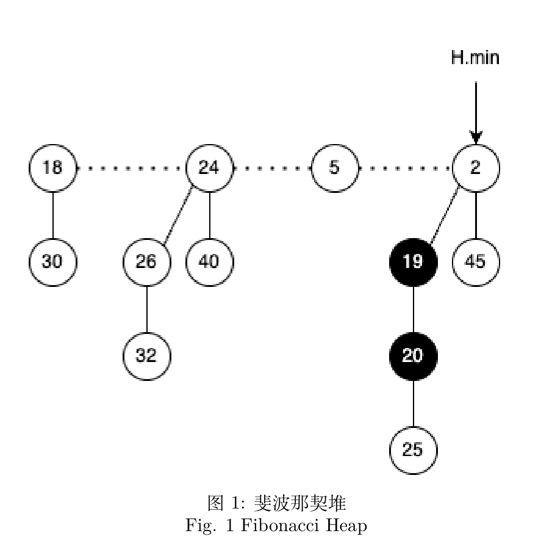
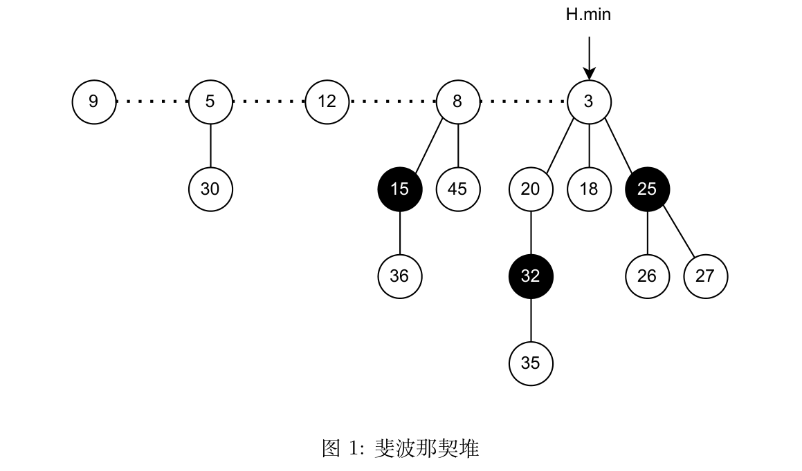
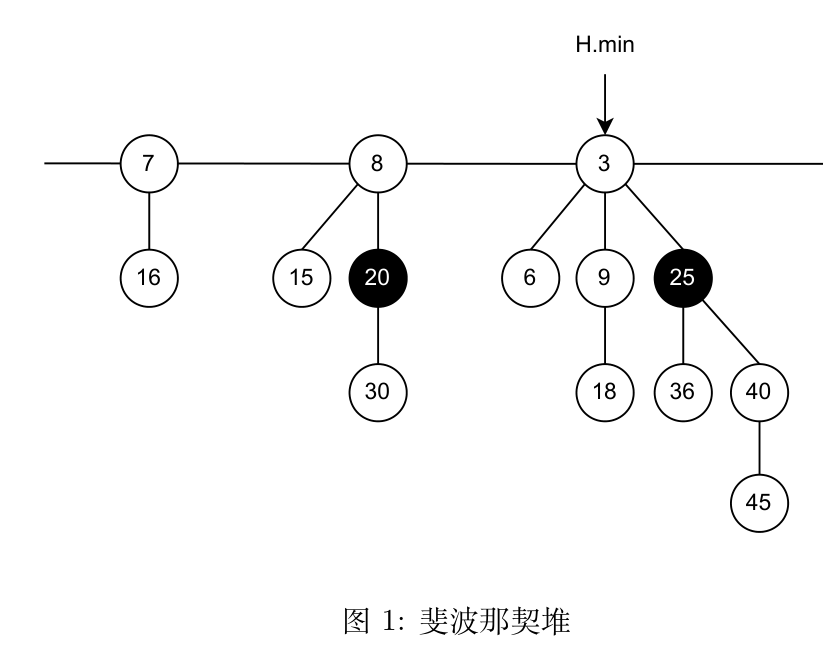

总览README.md
算法基础复习资料
基于当前目录中 Algorithm_2026*.pdf 课件与 2023-2025期中考试试题及答案/ 里的三套真题整理。这不是逐页直译，而是将英文内容重组为适合复习的中文知识体系，并补充直觉、例子、复杂度与易错点。
使用方法#
- 第一遍按 01 → 09 顺序学习，先建立分析方法，再学具体算法。
- 考前用 10 过一遍真题，每道错题回到对应章节补知识点。
- 考前优先看每章的“一页速记”、“易错点”和“自测”。
- 做题时将新反例、错题和证明补到对应章节，不要只记在题目旁。
- 本资料默认数组下标从 0 开始；引用课件伪代码时如使用 1 起始会明确说明。
内容导航#
| 章节 | 主题 | 对应课件 | 状态 |
|---|
| 00 | 课程地图与学习法 | Topic 0 | 已整理 |
| 01 | 算法、排序入门、运行时间分析 | Topic 1 | 已整理 |
| 02 | O/Ω/Θ、常见函数、递归式 | Topic 2 | 已整理 |
| 03 | 插入/选择/冒泡/希尔/归并/堆/快排 | Topic 3 | 已整理 |
| 04 | 计数/基数/桶排序、顺序统计量 | Topic 4-1/4-2 | 已整理 |
| 05 | BST、红黑树、数据结构增广 | Topic 5-1 | 已整理 |
| 06 | 二项堆、Fibonacci 堆、并查集 | Topic 5-2 | 已整理 |
| 07 | 钢条切割、矩阵链、LCS、最优 BST | Topic 6-1 | 已整理 |
| 08 | 活动选择、Huffman、拟阵、任务调度 | Topic 6-2 | 已整理 |
| 09 | 中英文术语、公式与复杂度表 | 全部 | 已整理 |
| 10 | 2023–2025 期中真题考点、例题演示、逐题速查 | 3 套真题与答案 | 已整理 |
| 11 | 手算演练：10 种排序、Quickselect、BST、AVL、红黑树、Treap、顺序统计树、二项堆、并查集 | 全部 | 已整理 |
资料范围#
主线来源是 10 个 Topic PDF（Topic 0、1、2、3、4-1、4-2、5-1、5-2、6-1、6-2）。Introduction_to_algorithms_3rd_Edition.pdf 是配套教材，适合用来补证明和习题；算法基础hw1.pdf、算法基础hw2.pdf、算法基础hw3.pdf 是作业，本轮未将题解混入知识笔记。
第 10 章额外整理了 2023-2025期中考试试题及答案/ 里的 3 套期中真题与官方答案：把每道题归到对应知识点，补上完整推导与手算，并给出三年逐题速查表和考前清单。Fibonacci 堆的三张原图是从试题 PDF 中裁剪的，见 img/ 目录。
复习顺序建议#
- 时间充裕：01 → 09 建体系，再用 10 刷真题。
- 时间紧张：先看 10 的"考点命中率"和"考前 90 分钟速刷"，缺哪块回对应章节补，最后重做 10 里的例题。
持续扩充规范#
新增一个知识点时，建议按以下模板：
### 中文名（English term）
- 问题：输入、输出、约束是什么？
- 核心思想：一句话说清。
- 不变式/状态：为什么正确？
- 复杂度：时间、空间、最好/平均/最坏。
- 例子：至少手算一组小输入。
- 易错点：边界、反例、适用条件。
- 关联：与哪个已学算法相似？
建议使用以下标记：[TODO] 待补充，[Q] 尚未解决的问题，[EXAM] 考试高频，[PITFALL] 易错点，[CODE] 待补代码实现。
复习主线#
问题建模
↓
正确性：循环不变式 / 归纳 / 交换论证
↓
效率：渐近记号 / 递归式 / 均摊与期望分析
↓
设计范式：分治 / 动态规划 / 贪心
↓
数据结构：堆 / 搜索树 / 并查集
修订记录#
- 01–08 章已与 10 个 Topic 课件逐节核对，补齐了课件里有、笔记里缺的内容：归并排序的
MERGE/哨兵与"sloppiness"、平滑分析；渐近记号非完备性、常用函数（取整/模/指数/对数/阶乘/函数迭代/lg*）、主定理的递归树直觉与几何级数；希尔排序增量序列与下界、HEAP-INCREASE-KEY、随机化快排与期望比较次数 2(n+1)Hₙ-4n；BST 三种遍历与迭代查找、旋转与 RB-INSERT-FIXUP 伪代码；活动选择的 DP 对照；09 章的冒泡/希尔行与常用公式。 - 每个算法/数据结构都补齐了伪代码 + 可算小例：03（插入/选择/冒泡/希尔/归并/堆/快排的分区与建堆）、04（计数/基数/桶/最值/选择）、05（BST 增删查与后继、红黑树插入修复与删除修复、顺序统计树、区间树）、06（二项堆合并、Fibonacci 堆取最小与减键、并查集）、07（钢条切割三种写法、矩阵链、LCS、最优 BST）、08（活动选择、Huffman、任务调度、拟阵）。
- 第十章（真题）与第十一章（手算演练）按真题与数据结构新增，不在此列。
0000-课程地图.md
00 课程地图
来源： Algorithm_2026_Topic_0.pdf
课程目标#
Introduction to Algorithms 通常译为“算法导论”。这门课不只要“会写代码”，而是要回答四个问题：
- 问题的输入、输出和约束是什么？
- 算法为什么一定正确？
- 它使用多少时间和空间？
- 当输入变大时，有没有更好的方法？
课件覆盖的主线包括：
- 基本概念与复杂度分析；
- 比较排序和线性时间排序；
- 顺序统计量与选择问题；
- 二叉搜索树、红黑树、可并堆、并查集；
- 分治、动态规划、贪心等设计范式。
Topic 0 还预告了字符串匹配算法（KMP、BM、KR 等），但当前目录中尚无对应 Topic 课件，因此留作后续扩充项。
一个问题如何选算法#
| 问题特征 | 优先想到 | 检查点 |
|---|
| 小规模或基本有序 | 插入排序 | 是否可利用“逆序很少” |
| 通用内排序，希望平均快 | 随机化快排 | 栈深度和最坏情况 |
要稳定的 O(n log n) | 归并排序 | 是否接受 O(n) 额外空间 |
| 需要不断取最小/最大元素 | 优先队列/堆 | 是否需要合并堆 |
| 键是小范围整数 | 计数排序 | k 相对 n 是否足够小 |
求第 i 小而非全排序 | Quickselect / SELECT | 不必支付全排序代价 |
| 最优化且子问题重叠 | 动态规划 | 状态和转移是否完整 |
| 局部选择可证明安全 | 贪心 | 必须有交换论证/贪心选择性质 |
| 反复合并连通分量 | 并查集 | 路径压缩 + 按秩合并 |
规模比常数更重要#
假设机器每秒可做 10^8 次基本操作：
n = 10^5 时，n log₂n ≈ 1.66×10^6，通常可行；n² = 10^10，通常已不可行；2^n 在 n = 50 时已远超常规计算能力。
这就是渐近分析的价值：它忽略机器和编程语言的小差别，抓住输入增长时的根本趋势。
复习节奏#
- 概念阶段：每学一个算法，至少能说出“问题-思想-正确性-复杂度”。
- 手算阶段：对 5–8 个元素手工演算，尤其是堆、快排分区、红黑树修复。
- 证明阶段：为循环写不变式，为贪心写交换论证，为 DP 写最优子结构。
- 实现阶段：代码中专门测试空输入、单元素、重复元素、已排序和逆序输入。
- 为什么“能跑出正确结果”不等于已证明算法正确？
- 如果只需要前 100 大的元素，为什么不一定要对亿级数据全排序？
- 给出一个“局部最优但全局不最优”的反例，说明贪心不能只靠直觉。
0101-算法与分析基础.md
01 算法与分析基础
来源： Algorithm_2026_Topic_1.pdf
1. 什么是算法#
算法（algorithm）是一个明确的计算过程：接收输入（input），经过有限步骤，产生输出（output）。一个完整的算法问题应当同时说明：
- 输入的数据类型和约束；
- 输出必须满足的性质；
- 对所有合法输入都终止；
- 结果对所有合法输入都正确。
例：排序问题（sorting problem）#
- 输入：长度为
n 的序列 ⟨a₁,a₂,…,aₙ⟩。 - 输出：输入元素的一个重排
⟨a'₁,…,a'ₙ⟩，使 a'₁ ≤ … ≤ a'ₙ。
关键词是“重排”：不仅要有序，不能丢元素、添元素或改变重复次数。
2. 为什么研究算法#
硬件更快不能抵消数量级差距。假设算法 A 需要 n² 次操作，算法 B 需要 n log n 次。当 n 足够大时，即使 A 跑在更快的机器上，B 仍可能在数量级上胜出。
算法还是研究和工程的共同语言：它迫使我们区分“一个方案看起来可行”与“该方案对所有输入可证明地正确且高效”。
课件还用 AI 里的 self-attention 举例：n 个 token、每个 d 维，注意力矩阵要算 n² 个位置、每个位置 d 次乘加，共 Θ(n²d) 次运算。序列翻倍，代价约翻四倍——这正是"分析算法"在大模型系统里的现实意义。
课件开头还铺了 8 个"面试题式"引例，用来引出后面的方法（不是考点，知道它们各自对应哪块内容即可）：
| 引例 | 一句话 | 后面的对应内容 |
|---|
| 丢鸡蛋（2 个蛋、100 层） | 最坏情况下最少试几次 | 最坏情况分析、分块/二分 |
| 黑盒多项式 | 系数全是自然数，怎么反解 | 用点值求值（拉格朗日/编码） |
| 秘书问题 | 依次面试、不能回头，怎么选 | 随机化、最优停止（在线算法） |
| 分糖果 | 评分高的孩子拿更多，最少发几颗 | 两次贪心扫描 |
| 围栏问题 | 用最短绳子围住所有树 | 凸包（计算几何） |
| 最大子矩阵和 | 找出元素和最大的子矩阵 | 前缀和 + 降维 |
| 合并公司 | 不断合并、问某时刻的最值 | 并查集 |
| 三数组最近距离 | O(n) 求三数组间最小距离 | 三指针（双指针推广） |
3. 插入排序作为入门例子#
插入排序（insertion sort）类似整理手中的扑克牌：左侧始终有序，每次取一张新牌，向左找它的位置。
INSERTION-SORT(A)
for j = 1 .. n-1
key = A[j]
i = j-1
while i >= 0 and A[i] > key
A[i+1] = A[i]
i = i-1
A[i+1] = key
手算例子#
[8, 2, 4, 9, 3, 6]
插入 2: [2, 8, 4, 9, 3, 6]
插入 4: [2, 4, 8, 9, 3, 6]
插入 9: [2, 4, 8, 9, 3, 6]
插入 3: [2, 3, 4, 8, 9, 6]
插入 6: [2, 3, 4, 6, 8, 9]
循环不变式（loop invariant）#
在每次外层循环开始时，子数组 A[0..j-1] 由原来这些元素组成，且已经有序。正确性证明分三步：
- 初始化：
j=1 时，单元素 A[0] 当然有序。 - 保持：移动比
key 大的元素，再将 key 放入空位，使有序前缀增长一位。 - 终止：
j=n 时，整个数组 A[0..n-1] 有序。
不变式不是“算法结束后成立的性质”，而是每次迭代边界都成立的性质。
4. RAM 计算模型#
课程分析默认 RAM（random-access machine，随机存取机）模型：算术、比较、赋值、数组访问等基本操作耗时是常数。这是抽象模型，不精确仿真 CPU 缓存、分支预测或磁盘 I/O。
分析流程：
- 确定输入规模
n； - 选择需计数的基本操作；
- 统计每行执行次数；
- 求和得到
T(n)； - 去掉低阶项和常数因子，给出渐近界。
5. 最好、平均、最坏情况#
- 最好情况（best case）：规模为
n 的所有输入中运行时间最小的。课件直接说它"有点耍赖"（bogus）：一个慢算法在某个特殊输入上快，并不能说明什么。 - 最坏情况（worst case）：运行时间最大的。它给出不会被突破的上界，所以最常用。
- 平均情况（average case）：对输入分布取期望，必须说明概率模型（均匀、泊松等）。
- 期望时间（expected time）：还可以来自算法自身的随机性，不等于"输入平均"。
课件还介绍了一个更现代的第四种视角——平滑分析（smoothed analysis）：不假设输入服从某个分布，而是假设输入被小幅扰动，分析"扰动后输入"上的期望代价。它同时推广了最坏与平均分析：线性规划的单纯形法最坏是指数时间，但平滑复杂度是多项式，这解释了它实践中为什么很快。只要平滑复杂度低，现实中带少量噪声的数据就不会让它变慢。
插入排序对已有序数组只做约 n-1 次比较，是 Θ(n)；对逆序数组，移动次数约为 n(n-1)/2，是 Θ(n²)。
逆序对视角#
逆序对（inversion）是一对下标 i<j 但 A[i]>A[j] 的元素。插入排序的元素移动数与逆序数同阶，所以对“基本有序”数据很有优势。
6. 分治与归并排序预览#
分治（divide and conquer）有三步：
- Divide（分解）：将问题分成若干子问题；
- Conquer（解决）：递归求解子问题；
- Combine（合并）：将子问题的解合并成原问题的解。
归并排序将数组一分为二，分别排序，再用线性时间合并：
T(n)=2T(n/2)+Θ(n)=Θ(n log n)。
与插入排序相比：归并排序渐近更快且稳定，但数组实现通常需要 Θ(n) 额外空间。
6.1 归并排序的两个子程序与递归式#
课件给出的骨架：
MERGE-SORT(A, p, r)
1 if p < r then
2 q = ⌊(p+r)/2⌋
3 MERGE-SORT(A, p, q)
4 MERGE-SORT(A, q+1, r)
5 MERGE(A, p, q, r)
MERGE(A, p, q, r) 把 A[p..q] 和 A[q+1..r] 两段有序序列合并：两个指针各指一段开头，每次把较小者写进辅助数组，某一段取空后把另一段剩余部分原样接上。所以合并是线性的：Θ(n)。
哨兵（sentinel）技巧（课件单独一页）：在两段末尾各放一张"哨兵牌" +∞，就不用每一步都判断"这一段是不是取完了"——哨兵保证循环一定能停。用两个额外单元换掉一个每次迭代都要做的分支判断，是常数级的优化。
递归式与解
T(n) = Θ(1) n = 1
T(n) = 2T(n/2) + c·n n > 1
课件专门提醒"sloppiness"（粗糙处理）：严格写应是 T(n) = T(⌊n/2⌋) + T(⌈n/2⌉) + c·n，但取整只影响低阶项，渐近解不变，所以书上习惯直接写 2T(n/2)。
解是 Θ(n log n)，三条路都行：递归树（每层 cn、共 log n 层）、代入法（猜 cn log n 再验证）、主定理（a=2, b=2, f(n)=Θ(n)，属情形 2）。具体做法见 02，完整手算见 11 的 1.5。
一页速记#
- 算法必须有明确输入/输出，对合法输入终止且正确。
- 循环不变式的证明三步：初始化、保持、终止。
- 分析得先定义输入规模和基本操作。
- 最坏分析提供保证；平均/期望分析需要概率模型。
- 插入排序：最好
Θ(n)，平均/最坏 Θ(n²)，原地、稳定。
易错点#
O(n²) 不表示“恰好是 n²”；这是渐近上界。- 不能只数循环层数：循环界可能递减、倍增或相互依赖。
- 平均情况不是
(best+worst)/2。 - 递归算法的空间复杂度要计入调用栈。
- 写出插入排序的循环不变式，并完成三步证明。
- 对
[5,2,4,6,1,3] 手算插入排序，统计移动次数。 - 区分“平均运行时间”与“随机化算法的期望运行时间”。
0202-渐近记号与递归式.md
02 渐近记号与递归式
来源： Algorithm_2026_Topic_2(1).pdf
1. 渐近记号的目的#
渐近分析（asymptotic analysis）描述 n → ∞ 时函数的增长速度，忽略有限个小输入、常数因子与低阶项。
O 记号：渐近上界#
f(n) = O(g(n)) 当且仅当存在常数 c>0 和 n₀，使得对所有 n≥n₀，有：
0 ≤ f(n) ≤ c g(n)。
例：3n²+10n+7 = O(n²)。可取 n≥1，则 3n²+10n+7 ≤ 20n²。
Ω 记号：渐近下界#
f(n) = Ω(g(n)) 当且仅当存在 c>0,n₀，使 0 ≤ c g(n) ≤ f(n) 对所有 n≥n₀ 成立。
Θ 记号：渐近紧界#
f(n) = Θ(g(n)) 当且仅当 f(n)=O(g(n)) 且 f(n)=Ω(g(n))。也就是存在正常数 c₁,c₂,n₀，使：
0 ≤ c₁g(n) ≤ f(n) ≤ c₂g(n)。
o 与 ω：非紧界#
f(n)=o(g(n))：对任意 c>0，最终都有 f(n)<cg(n)；等价地，若极限存在，lim f/g = 0。f(n)=ω(g(n))：对任意 c>0，最终都有 f(n)>cg(n)；常见等价是 lim f/g = ∞。
例：n = o(n log n)，但 n log n 不是 o(n log n)；它是 Θ(n log n)。
宏替换（macro substitution）#
课件给了一个约定：公式里出现的集合记号代表"该集合中的某个匿名函数"。例如
f(n) = n³ + O(n²)
意思是"存在某个 h(n) ∈ O(n²)，使 f(n) = n³ + h(n)"。所以写 T(n) = 2T(n/2) + O(n) 是合法的简写；但反过来"从 T(n) = O(n) 推出 T(n) ≤ cn"时要记得把常数写出来。这个约定在写递归式、做放缩时天天用到。
2. 记号之间的关系#
- 自反性：
f=Θ(f)、f=O(f)、f=Ω(f)。 - 对称性：
f=Θ(g) ⇔ g=Θ(f)。 - 转置对称：
f=O(g) ⇔ g=Ω(f)；f=o(g) ⇔ g=ω(f)。 - 传递性：
f=O(g) 且 g=O(h) 则 f=O(h)（Θ、Ω、o、ω 同样可传递）。 - 非完备性：实数之间总有
<、=、> 之一，但两个函数可能既不是 O 也不是 Ω 关系。课件例子：f(n)=n、g(n)=n^{1-sin(nπ/2)}（g 在 n 与 n² 之间振荡），三者都不成立。
一个记住方向的口诀（课件给的有用类比）：O 像 ≤，o 像 <，Θ 像 =，Ω 像 ≥，ω 像 >。
PITFALL O 与 Ω 描述函数的界，不是自动对应“最坏”与“最好”。可以说最坏运行时间是 Θ(n²)，也可以说它是 O(n³)，只是后者不紧。
3. 常见增长率#
从慢到快：
1 < log log n < log n < ( log n )^k < n^ε < n < n log n < n² < n³ < cⁿ < n! < nⁿ
其中 k>0、ε>0、c>1。对数的底在渐近记号中通常只差常数因子，因为 logₐn = logₑn / logₑa。
常用等式#
log(ab)=log a+log blog(a^k)=k log a∑ᵢ₌₁ⁿ i = n(n+1)/2 = Θ(n²)∑ᵢ₌₀ᵏ rⁱ = (r^(k+1)-1)/(r-1)，r≠1∑ᵢ₌₁ⁿ 1/i = Hₙ = Θ(log n)n! = √(2πn)(n/e)^n(1+o(1))（Stirling 公式）
Fibonacci 数#
F₀=0, F₁=1, Fₙ=Fₙ₋₁+Fₙ₋₂。它按黄金比 φ=(1+√5)/2 的幂增长：Fₙ=Θ(φⁿ)。这个性质会出现在 Fibonacci 堆度数界的证明中。
3.1 常用函数速查（课件 "Standard Notations and Common Functions"）#
取整（floor / ceiling）
x-1 < ⌊x⌋ ≤ x ≤ ⌈x⌉ < x+1。- 对整数
n：⌈n/2⌉ + ⌊n/2⌋ = n。 - 嵌套可以合并：
⌈⌈x/a⌉/b⌉ = ⌈x/(ab)⌉，⌊⌊x/a⌋/b⌋ = ⌊x/(ab)⌋（a,b 为正整数，x ≥ 0）。 - 粗界：
⌈a/b⌉ ≤ (a+b-1)/b，⌊a/b⌋ ≥ (a-b+1)/b。
模运算
a mod n = a - n⌊a/n⌋（余数）。a ≡ b (mod n) 当且仅当 n | (a-b)，等价于 a mod n = b mod n。
指数
a⁰=1，aᵐaⁿ=aᵐ⁺ⁿ，(aᵐ)ⁿ=aᵐⁿ。a>1 时 n^b = o(aⁿ)：多项式永远被指数超过。这条常用来判断"指数级算法不可救"。eˣ = Σ xⁱ/i!；|x| ≤ 1 时 1+x ≤ eˣ ≤ 1+x+x²。
对数
lg n = log₂ n，ln n = log_e n，lg^k n = (lg n)^k，lg lg n = lg(lg n)（注意 lg²n 与 lg lg n 完全不同）。- 换底：
log_b x = lg x / lg b，所以渐近分析里底数可以随便换。 x^{log_b y} = y^{log_b x}；log_b(xy)=log_b x+log_b y。- 对任意常数
α>0、β：lg^β n = o(n^α)。即"对数多项式"总被任何正幂次超过。
阶乘
n! ≤ nⁿ。- Stirling：
n! = √(2πn)(n/e)ⁿ(1+Θ(1/n))，于是 lg(n!) = Θ(n lg n)——这正是比较排序下界的另一种写法。
函数迭代与迭代对数
f^{(i)}(n) 表示把 f 迭代作用 i 次：f^{(0)}(n)=n，f^{(i)}(n)=f(f^{(i-1)}(n))。例：f(n)=2n 时 f^{(i)}(n)=2ⁱn。lg* n = min{i ≥ 0 : lg^{(i)} n ≤ 1}。例：lg*2=1、lg*4=2、lg*16=3、lg*(2^{65536})=5。- 它增长极慢：
lg* n 在实际规模下不超过 5，和并查集的 α(n) 一样属于"几乎常数"的函数。
4. 递归式（recurrence）#
递归算法的运行时间常用递归式表示。例如归并排序：
T(n)=2T(n/2)+Θ(n)。
课件给出三类主要方法。
4.1 代入法（substitution method）#
步骤：
- 猜测紧界；
- 使用归纳假设代回递归式；
- 选择合适常数，完成上界/下界证明；
- 处理基本情况。
例：T(n)=2T(⌊n/2⌋)+n，猜 T(n)=O(n log n)。假设对更小规模有 T(k)≤ck log k，代入后可得 T(n)≤cn log n 附近的界。
PITFALL 猜 T(n)≤cn 有时会因常数项无法抵消而归纳失败。可以“加强假设”，如猜 T(n)≤cn-d，留出松弛项。
4.2 递归树（recursion tree）#
将每次递归调用的非递归代价放在树节点上，先求每层代价，再求所有层总和。
例：T(n)=2T(n/2)+n
- 第 0 层代价
n； - 第 1 层两个子问题，总代价仍为
n； - 共
log₂n 层； - 总代价
Θ(n log n)。
例：T(n)=T(n/3)+T(2n/3)+n不符合经典 Master 定理的同规模子问题形式，但递归树显示每层总代价约为 n，树高 Θ(log n)，所以为 Θ(n log n)。
4.3 主方法（master method）#
适用于：T(n)=aT(n/b)+f(n)，其中 a≥1,b>1。比较 f(n) 与临界函数 n^(logₑa)。
| 情况 | 条件（相差多项式因子） | 结果 |
|---|
| 1 | f(n)=O(n^(logₑa-ε)) | T(n)=Θ(n^(logₑa)) |
| 2 | f(n)=Θ(n^(logₑa) log^k n) | T(n)=Θ(n^(logₑa) log^(k+1)n) |
| 3 | f(n)=Ω(n^(logₑa+ε))，且满足正则条件 | T(n)=Θ(f(n)) |
经典 CLRS 第三版的简化情况 2 常写为 f(n)=Θ(n^(logₑa))，对应 k=0。
T(n)=9T(n/3)+n：n^(log₃9)=n²，f(n)=n 更小，得 Θ(n²)。T(n)=T(2n/3)+1：a=1,b=3/2，临界函数为 1，得 Θ(log n)。T(n)=3T(n/4)+n log n：临界函数 n^(log₄3)，f(n) 多项式地更大，检查正则条件后得 Θ(n log n)。
不能直接用 Master 定理的情况#
- 子问题规模不同，如
T(n)=T(n/3)+T(2n/3)+n； - 不是常数个子问题；
f(n) 与临界函数差距不是多项式级，且不在所用版本的情况 2 内；- 情况 3 的正则条件
a f(n/b) ≤ c f(n)（某个 c<1）不成立。
主定理为什么成立（递归树视角）#
课件把 T(n)=aT(n/b)+f(n) 画成递归树：
- 第
i 层有 aⁱ 个结点，每个规模 n/bⁱ，该层总代价 aⁱ·f(n/bⁱ)； - 树高
log_b n； - 叶子数
a^{log_b n} = n^{log_b a}（这一步用了 a^{log_b n} = n^{log_b a}，也解释了临界函数为什么长这样）。
把各层代价相加，相邻两层之比是常数 a·f(n/b) / f(n)，于是只有三种形态：
| 相邻层之比 | 权重分布 | 总和由谁主导 | 对应 |
|---|
> 1（几何增长） | 越靠近叶子越重 | 叶子层 | 情形 1：Θ(n^{log_b a}) |
= 1（每层相当） | 各层差不多重 | log_b n 层相加 | 情形 2：Θ(n^{log_b a} log n) |
< 1（几何衰减） | 根最重 | 根层 | 情形 3：Θ(f(n)) |
情形 3 要求的"正则条件" a·f(n/b) ≤ c·f(n)（c<1）就是"相邻层之比 < 1"的严格写法。
背后的工具是几何级数（课件附录）：
1 + x + x² + … + xⁿ = (1 - xⁿ⁺¹)/(1 - x) (x ≠ 1)
1 + x + x² + … = 1/(1 - x) (|x| < 1)
|x| < 1 时级数收敛到常数，所以"根层主导"；x > 1 时末项主导，所以"叶子层主导"。
代入法的"猜不准"：先松后紧#
课件用一组连续幻灯片演示了 T(n)=2T(n/2)+n 这类式子：直接猜 O(n) 会在归纳时多出一个 n 项而失败，把猜测改成 O(n log n) 才能成立；有时还可以"加强假设"（例如猜 T(n) ≤ cn - d）让常数项被吸收。这说明代入法是"猜 + 验证"，猜错就换一个量级，而不是硬算。
一页速记#
O 上界，Ω 下界，Θ 紧界，o/ω 严格非紧界。- 先比较增长率，再挑常数
c,n₀。 - 递归式三工具：代入法做证明，递归树找直觉，Master 定理快速分类。
- Master 定理先算
n^(logₑa)，再与 f(n) 比较。
易错点#
f=O(g) 可以同时有 f=O(h)；O 不是唯一的“等于”。- 忽略递归的基本情况可能让证明在小
n 上失效。 - 主定理情况 3 不只要“
f 更大”，还要检查正则条件。 T(n)=T(n-1)+n 不能套经典 Master 定理，展开后是 Θ(n²)。
- 用定义证明
6n³+2n = Θ(n³)。 - 求
T(n)=4T(n/2)+n、T(n)=2T(n/2)+n log n、T(n)=T(n/2)+n 的紧界。 - 画递归树分析
T(n)=3T(n/4)+n²。 - 说明为什么
n log n = o(n^(1+ε)) 对任意常数 ε>0 成立。
0303-比较排序.md
03 比较排序
来源： Algorithm_2026_Topic_3.pdf
1. 评价排序算法的维度#
- 时间复杂度：通常关心比较次数和元素移动次数。（课件原话：usually measured by the number of data comparisons and the number of data movements）
- 空间复杂度：是否需要与
n 成比例的辅助数组。 - 稳定性（stability）：相等键值的记录排序后是否保留原相对次序。
- 原地性（in-place）：数组主体是否只用
O(1) 辅助存储；递归栈通常另行说明。 - 自适应性：输入已经部分有序时是否更快。
稳定性只在元素除排序键外还有附加信息时有意义。例如先按姓名排序，再稳定地按班级排序，同班内仍保持姓名顺序。
课件的最小反例：2, 2*, 1 若排成 1, 2*, 2，两个 2 的先后次序被交换 → 不稳定；稳定排序应给出 1, 2, 2*。
2. 简单排序#
2.1 插入排序（insertion sort）#
思想：维护有序前缀，把新元素插到正确位置。
INSERTION-SORT(A)
for j = 1 to n-1
key = A[j]; i = j-1
while i >= 0 and A[i] > key
A[i+1] = A[i]; i = i-1
A[i+1] = key
例：[5,2,4] → 2 插到最前 [2,5,4] → 4 插到 2 和 5 之间 [2,4,5]（比较 3 次、移动 2 次）。完整 6 元素手算见 11 的 1.1。
- 最好
Θ(n)，平均/最坏 Θ(n²)； - 原地，稳定；
- 适合小数组、基本有序数据，也常用于高级排序的小区间收尾。
2.2 选择排序（selection sort）#
思想：在未排序后缀中找最小元素，与后缀第一个元素交换。
for i = 0 .. n-2
smallest = i
for j = i+1 .. n-1
if A[j] < A[smallest]: smallest = j
swap A[i], A[smallest]
- 无论输入如何，比较次数都是
n(n-1)/2，即 Θ(n²)； - 交换只有
O(n) 次，适合“写操作昂贵”的特殊场景； - 原地，标准实现不稳定。
例：[5,2,4] → 第 1 轮在 [5,2,4] 里找最小 2，与 5 交换 → [2,5,4]；第 2 轮在 [5,4] 里找最小 4，交换 → [2,4,5]。
不稳定反例：[2a, 2b, 1] 第一轮交换 2a 与 1，得 [1,2b,2a]，两个 2 的相对次序改变。
2.3 冒泡排序（bubble sort）#
思想：反复比较相邻元素，若逆序则交换，每轮将当前最大元素“冒”到右端。
BUBBLE-SORT(A)
for i = 0 to n-2
swapped = false
for j = 0 to n-2-i
if A[j] > A[j+1]
swap A[j], A[j+1]; swapped = true
if not swapped then break
例：[5,1,4] → 第 1 趟：5>1 换 [1,5,4]、5>4 换 [1,4,5]；第 2 趟无交换 → 提前结束。
- 平均/最坏
Θ(n²)； - 加入“本轮是否交换”标志后，已有序输入可达
Θ(n)； - 原地，仅在严格大于时交换则稳定。
2.4 希尔排序（Shellsort）#
思想：先对间隔为 gap 的子序列做插入排序，逐步缩小间隔，最后 gap=1。这使远距离元素能较早移动。
SHELL-SORT(A)
gaps = [⌊n/2⌋, ⌊n/4⌋, …, 1] // 或课件给出的其它增量序列
for gap in gaps
for i = gap to n-1
key = A[i]; j = i - gap
while j >= 0 and A[j] > key
A[j+gap] = A[j]; j = j - gap
A[j+gap] = key
例：[35, 33, 42, 10]，gap 2 → 1。
gap=2: (35,42) 有序；(33,10) 交换 → [35,10,42,33]
gap=1: 10 换到最前 → [10,35,42,33]；33 插到 35 前 → [10,33,35,42]
- 原地，不稳定；
- 复杂度高度依赖增量序列，不能脱离 gap 规则笼统地说是某个唯一复杂度；
- 课件总结表给出常见经验量级约
O(n^(4/3))，应连同所用增量序列理解。
课件列出的增量序列与对应最坏复杂度：
| 增量序列 | 最坏复杂度 |
|---|
⌈n/2^k⌉（Shell 原始） | Θ(n²) |
2⌊n/2^(k+1)⌋+1 | Θ(n^1.5) |
2^k − 1（Hibbard） | Θ(n^1.5) |
2^k + 1（k ≥ 1，以 1 开头） | Θ(n^1.5) |
2^p·3^q（p,q ≥ 0，依次取用） | O(n log² n) |
4^k + 3·2^{k−1} + 1（Sedgewick，k ≥ 1，以 1 开头） | 课件总结页给的是 O(n^{4/3}) |
已知下界：任何版本的希尔排序最坏都至少是 Ω(n (log n / log log n)²)（Plaxton–Poonen–Suel），所以它做不到 Θ(n log n)，只能算"比插入排序快的次优选择"。
为什么大 gap 有效（课件的三步直觉）：数组大时 gap 也大，每个子数组很短，插入排序虽然最坏 O(n²) 但常数下实际接近 O(n)；迭代到 gap 很小时，大部分元素已经就位，插入排序又接近 O(n)。
3. 归并排序（merge sort）#
将数组对半分解，递归排序左右两半，再合并两个有序序列。
MERGE-SORT(A, l, r)
if l >= r: return
m = floor((l+r)/2)
MERGE-SORT(A, l, m)
MERGE-SORT(A, m+1, r)
MERGE(A, l, m, r)
合并时用两个指针，每次取两个当前元素中较小者。若相等时优先取左半的元素，就能保持稳定。
例：[3, 1, 4, 2] → 拆成 [3,1]、[4,2] → 分别合并成 [1,3]、[2,4] → 合并：1<2 取 1，3>2 取 2，3<4 取 3，抄 4 → [1,2,3,4]，共 1+1+3 = 5 次比较。8 元素的完整逐层手算见 11 的 1.5。
- 时间：最好/平均/最坏均为
Θ(n log n)； - 空间：数组标准实现
Θ(n) 辅助空间，递归栈 Θ(log n)； - 稳定；适合链表和外部排序。
4. 堆与堆排序#
4.1 堆的数组表示#
最大堆（max-heap）是一棵近似完全二叉树，每个节点的键不小于其孩子。用 0 起始数组表示时：
parent(i)=floor((i-1)/2)left(i)=2i+1right(i)=2i+2
课件使用 1 起始时：parent(i)=⌊i/2⌋、left=2i、right=2i+1。
4.2 MAX-HEAPIFY#
前提：节点 i 的左右子树已是最大堆，但 i 可能违反堆性质。将 i 与较大的孩子交换，并向下继续修复。
MAX-HEAPIFY(A, i)
largest = i
l = LEFT(i); r = RIGHT(i)
if l <= A.heap-size and A[l] > A[largest] then largest = l
if r <= A.heap-size and A[r] > A[largest] then largest = r
if largest ≠ i
swap A[i], A[largest]
MAX-HEAPIFY(A, largest) // 换下去后可能仍不满足，必须继续
例：A = [16,4,10,14,7,9,3,2,8,1]，对 i = 2（值 4）调用 → 孩子 14、7 中 14 更大，4↔14 → [16,14,10,4,7,9,3,2,8,1]，继续检查位置 4。
堆高是 Θ(log n)，所以 MAX-HEAPIFY 是 O(log n)。
4.3 BUILD-MAX-HEAP 为什么是 O(n)#
从最后一个非叶节点逆序调用 MAX-HEAPIFY。不能简单地说有 n 个节点，每个 O(log n)，因为大多数节点很靠近叶子，修复高度很小。
BUILD-MAX-HEAP(A)
A.heap-size = A.length
for i = ⌊n/2⌋ down to 1
MAX-HEAPIFY(A, i)
例：[4,1,3,2,16,9,10,14,8,7] 从 i=5 做到 i=1，得到 [16,14,10,8,7,9,3,2,4,1]；逐步（含"下探多层"的坑）见 11 的 1.7。
T(n) ≤ n ∑ₕ₌₀^∞ (h/2^(h+1)) = O(n)。
4.4 堆排序（heapsort）#
- 建立最大堆；
- 把根（当前最大值）与堆末元素交换；
- 缩小堆范围，对根调用
MAX-HEAPIFY； - 重复到堆空。
HEAPSORT(A)
BUILD-MAX-HEAP(A)
for i = n down to 2
swap A[1], A[i]
A.heap-size = A.heap-size - 1
MAX-HEAPIFY(A, 1)
例：接上面的堆 [16,14,10,8,7,9,3,2,4,1]，第一次交换后变成 [14,8,10,4,7,9,3,2,1 | 16]，两次之后堆是 [10,8,9,4,7,1,3,2 | 14,16]。
- 最好/平均/最坏均
Θ(n log n)； - 原地，不稳定；
- 与归并排序相比节省辅助数组，但实际缓存局部性常不如快排。
4.5 优先队列操作#
| 最大优先队列操作 | 时间 |
|---|
MAXIMUM | O(1) |
EXTRACT-MAX | O(log n) |
INCREASE-KEY | O(log n) |
INSERT | O(log n) |
INCREASE-KEY 是向上修复，MAX-HEAPIFY 通常是向下修复，不要混淆。
课件给出的两个关键伪代码：
HEAP-INCREASE-KEY(A, i, key)
1 if key < A[i] then error "new key is smaller than current key"
2 A[i] = key
3 while i > 1 and A[PARENT(i)] < A[i]
4 swap A[i], A[PARENT(i)]
5 i = PARENT(i)
MAX-HEAP-INSERT(A, key)
1 A.heap-size = A.heap-size + 1
2 A[A.heap-size] = -∞
3 HEAP-INCREASE-KEY(A, A.heap-size, key)
INSERT 先放一个 -∞ 再"提"到 key，等价于"接到末尾再 sift-up"。两者都只沿一条到根的路径走，所以是 O(log n)。
5. 快速排序（quicksort）#
5.1 分区思想#
选择一个主元（pivot），调整区间，使小于等于主元的元素在左，大于主元的在右，再递归处理两边。
Lomuto 分区不变式（主元取 A[r]）：扫描到 j 时，
A[p..i] ≤ pivot；A[i+1..j-1] > pivot；A[j..r-1] 尚未处理。
分区一次为 Θ(n)。
PARTITION(A, p, r) // Lomuto
x = A[r]; i = p - 1
for j = p to r - 1
if A[j] <= x
i = i + 1; swap A[i], A[j]
swap A[i+1], A[r]
return i + 1
例：[7,2,9,4,3,8,5] 以 5 为主元 → [2,4,3,5,9,8,7]，主元落在下标 3（逐行表见 11 的 1.6）。
5.2 复杂度#
- 最好/均衡分割：
T(n)=2T(n/2)+Θ(n)=Θ(n log n)。 - 即使每次是
1:9 这样的常数比例分割，深度仍是 Θ(log n)，总时间仍 Θ(n log n)。 - 最坏分割
0:n-1：T(n)=T(n-1)+Θ(n)=Θ(n²)。 - 随机选主元后，期望时间
Θ(n log n)，但最坏仍是 Θ(n²)。
快排通常原地且常数小，标准分区不稳定。递归空间期望 O(log n)，最坏 O(n)。工程实现可先递归较小区间，用循环处理较大区间，将额外栈空间压到 O(log n)。
5.3 随机化版本与期望比较次数#
课件给出的随机化伪代码（考试补全题的原文）：
RANDOMIZED-PARTITION(A, p, r)
1 i = RANDOM(p, r)
2 swap A[r], A[i]
3 return PARTITION(A, p, r)
RANDOMIZED-QUICKSORT(A, p, r)
1 if p < r
2 q = RANDOMIZED-PARTITION(A, p, r)
3 RANDOMIZED-QUICKSORT(A, p, q-1)
4 RANDOMIZED-QUICKSORT(A, q+1, r)
随机化只是"把最坏的输入分布摊平"：任何输入下期望都是 Θ(n log n)，但单次运行仍可能 Θ(n²)。
期望比较次数的标准证明（课件用指示器随机变量）：
- 假设键互不相同，按大小记作
z₁<z₂<…<zₙ，令 Xᵢⱼ = 1 表示 zᵢ 与 zⱼ 被比较过。 - 每一对元素之间至多比较一次，所以总比较次数
X = Σ_{i<j} Xᵢⱼ。 zᵢ 与 zⱼ 会被比较，当且仅当在区间 Zᵢⱼ={zᵢ,…,zⱼ} 中第一个被选为主元的是 zᵢ 或 zⱼ：若先选到中间的某个 z_k，两者会被分到两侧，再也不见面。均匀随机下 Pr = 2/(j-i+1)。- 线性期望：
E[X] = Σ_{i<j} 2/(j-i+1)
= 2 Σ_{k=2}^{n} (n+1-k)/k
= 2(n+1)Hₙ - 4n
= Θ(n log n)
Hₙ 是调和数。注意这个界比"代入法证明最坏 O(n²)"更细：它说明平均只看比较次数时快排是 2n ln n 量级，这也是实践中常数最小的原因。
重复元素很多时#
二向分区可能反复处理等于主元的元素。三向分区将区间分成 < pivot、= pivot、> pivot，对重复键更稳健。
6. 对比表#
| 算法 | 最好 | 平均/期望 | 最坏 | 辅助空间 | 稳定 | 原地 |
|---|
| 插入 | Θ(n) | Θ(n²) | Θ(n²) | O(1) | 是 | 是 |
| 选择 | Θ(n²) | Θ(n²) | Θ(n²) | O(1) | 否 | 是 |
| 冒泡（带提前终止） | Θ(n) | Θ(n²) | Θ(n²) | O(1) | 是 | 是 |
| 归并 | Θ(n log n) | Θ(n log n) | Θ(n log n) | Θ(n) | 是 | 否（数组标准实现） |
| 堆排序 | Θ(n log n) | Θ(n log n) | Θ(n log n) | O(1) | 否 | 是 |
| 随机快排 | Θ(n log n) | Θ(n log n) | Θ(n²) | 期望 O(log n) 栈 | 否 | 通常是 |
一页速记#
- “快”不只看渐近界：还看缓存、稳定性、空间和数据分布。
BUILD-HEAP=O(n)，不是 O(n log n)。- 归并的代价是辅助空间；堆排序的代价是缓存局部性；快排的代价是最坏界。
- 随机化快排改善期望性能，不消除最坏情况。
- 用堆
[4,1,3,2,16,9,10,14,8,7] 手算 BUILD-MAX-HEAP。 - 写出 Lomuto 分区的循环不变式，并解释为什么最后一次交换后主元就位。
- 为什么恒定
1:9 分割仍是 Θ(n log n)？ - 构造选择排序不稳定的最小反例。
0404-线性时间排序与选择.md
04 线性时间排序与选择
来源： Algorithm_2026__Topic_4_1.pdf 与 Algorithm_2026__Topic_4_2.pdf
1. 比较排序的下界#
对于只通过两元素比较来确定次序的算法，可用决策树（decision tree）建模：
- 每个内部节点是一次比较；
- 两条边是比较的两种结果；
- 每个叶子对应一种输入排列的最终次序。
n 个不同元素有 n! 种排列，所以决策树至少有 n! 个叶子。高度为 h 的二叉树最多有 2^h 个叶子，因此：
2^h ≥ n! ⇒ h ≥ log₂(n!) = Ω(n log n)。
结论：任何比较排序在最坏情况都需要 Ω(n log n) 次比较。计数、基数、桶排序能达线性时间，是因为它们使用了键的取值范围或数位等额外信息，不属于纯比较排序。
2. 计数排序（counting sort）#
适用条件#
输入键是 [0,k] 范围的整数，且 k 不能远大于 n。
- 计数：
C[v] 记录键 v 出现次数。 - 前缀和：将
C[v] 改为“小于等于 v 的元素个数”，因而得到 v 在输出中的最后位置。 - 反向扫描输入，把元素放到输出
B 的目标位置，再将对应计数减 1。
COUNTING-SORT(A, k)
let B[1..n], C[0..k] be new arrays
for i = 0 to k: C[i] = 0
for j = 1 to n: C[A[j]] = C[A[j]] + 1
for i = 1 to k: C[i] = C[i] + C[i-1] // 前缀和
for j = n down to 1 // 必须逆序
B[C[A[j]]] = A[j]
C[A[j]] = C[A[j]] - 1
return B
为什么要反向扫描？若后出现的相等键先放到后面的槽位，早出现的元素最终仍在前，从而保持稳定。
A=[2a,5,3,0,2b,3]，计数为 [1,0,2,2,0,1]，前缀和为 [1,1,3,5,5,6]。稳定输出为 [0,2a,2b,3,3,5]。
- 时间：
Θ(n+k)； - 空间：
Θ(n+k)（课件中的稳定版）； - 稳定，非比较排序。
PITFALL 如果 n=100而键范围是 [0,10^9]，直接分配计数数组并不合适。
3. 基数排序（radix sort）#
将键拆成 d 个数位，按从最低有效位（LSD）到最高有效位（MSD）的顺序，对每一位使用稳定排序。
为什么内层必须稳定#
处理更高位时，相同高位的元素必须保留已经按低位建立的顺序。若内层不稳定，低位顺序会被破坏。
例（十进制）：[329,457,657,839,436,720,355]
按个位: 720,355,436,457,657,329,839
按十位: 720,329,436,839,355,457,657
按百位: 329,355,436,457,657,720,839
若每位取值范围为 [0,k]，内层用计数排序：
RADIX-SORT(A, d)
for i = 1 to d
STABLE-SORT A on digit i // 通常就是按第 i 位执行的 COUNTING-SORT
- 时间
Θ(d(n+k))； - 当
d 为常数且 k=O(n) 时是线性时间。
4. 桶排序（bucket sort）#
典型设定：n 个数独立均匀分布在 [0,1)。
- 建立
n 个桶； - 将
x 放入第 ⌊nx⌋ 个桶； - 分别对每个桶内排序（可用插入排序）；
- 按顺序连接所有桶。
BUCKET-SORT(A)
n = A.length
let B[0..n-1] be new arrays
for i = 0 to n-1: B[i] = empty list
for i = 1 to n: insert A[i] into B[⌊n·A[i]⌋]
for i = 0 to n-1: sort list B[i] with insertion sort
concatenate B[0], B[1], …, B[n-1] in order
例：[0.78, 0.17, 0.39, 0.26, 0.72]，n = 5 个桶：
桶 0.17 桶 1: 0.39, 0.26 → 0.26, 0.39
桶 3: 0.78, 0.72 → 0.72, 0.78
拼接：0.17, 0.26, 0.39, 0.72, 0.78
- 均匀分布假设下，期望时间
Θ(n)； - 如果所有元素落在同一桶，且桶内用插入排序，最坏为
Θ(n²)； - 线性期望界依赖分布假设，不是无条件保证。
5. 顺序统计量（order statistic）#
第 i 小元素称为第 i 个顺序统计量。最小值是第 1 小，最大值是第 n 小，中位数是中间秩附近的元素。
5.1 最小值与最大值#
- 单独找最小值：恰需
n-1 次比较。 - 分别找最小和最大：
2n-2 次左右。 - 成对处理（课件 MAX-MIN）：先把元素两两配对互比一次，较小者只与当前最小比、较大者只与当前最大比，所以每对 3 次比较。
n 为奇数时用 3⌊n/2⌋ 次，n 为偶数时是 1 次初始比较加 3(n-2)/2 次，即 3n/2-2；两种情形都满足 ≤ 3⌊n/2⌋。
MINIMUM(A)
min = A[1]
for i = 2 to A.length
if min > A[i] then min = A[i]
return min
MAX-MIN(A) // 成对处理
if A[1] > A[2] then min = A[2]; max = A[1]
else min = A[1]; max = A[2]
for i = 2 to ⌊n/2⌋
if A[2i-1] > A[2i]
then if A[2i] < min then min = A[2i]
if A[2i-1] > max then max = A[2i-1]
else if A[2i-1] < min then min = A[2i-1]
if A[2i] > max then max = A[2i]
if n 是奇数 then 用 A[n] 更新 min 和 max
return (min, max)
例：[3, 1, 4, 2] 成对比较 (3,1)→min=1,max=3；(4,2)→4>2，用 2 比 min（不更新）、用 4 比 max（更新）→ (1, 4)，共 1+1+3 = 5 次比较（而分别找要 2n-2 = 6 次）。
5.2 随机选择（RANDOMIZED-SELECT / Quickselect）#
与快排使用同样的随机分区，但只递归到包含目标秩的一侧。
RANDOMIZED-SELECT(A, p, r, i) // i 从 1 起算
if p == r: return A[p]
q = RANDOMIZED-PARTITION(A, p, r)
k = q-p+1 // pivot 在当前区间的秩
if i == k: return A[q]
if i < k: return RANDOMIZED-SELECT(A, p, q-1, i)
return RANDOMIZED-SELECT(A, q+1, r, i-k)
- 期望时间
Θ(n)； - 最坏时间
Θ(n²)； - 与快排的根本区别：快排递归两边，Quickselect 只进入一边。
期望 O(n) 的证明思路（课件用指示器随机变量）：设 X_k = 1 表示"这次分区后，需要递归的那一边恰有 k 个元素"，则 E[X_k] = 1/n（每个位置等概率当主元）。于是
T(n) ≤ Σ_{k=1}^{n} X_k · ( T(max(k-1, n-k)) + O(n) )
取期望，(k-1) 与 (n-k) 一一对应，化简为
E[T(n)] ≤ (2/n) Σ_{k=⌊n/2⌋}^{n-1} E[T(k)] + O(n)
再用"每次至少以 1/2 的概率把规模压到 3n/4 以下"，反复代入得几何级数 n + 3n/4 + (3n/4)² + … = 4n，即 O(n)。注意最坏情况仍是 Θ(n²)——哪怕只找最小值，也可能每次都切在最边上。
更细的平均键码比较次数递推（C(n, m)、m=1 时的 2n-2）见 10 的 6.3，那就是 2024 综合题第 1 题。
5.3 最坏线性时间选择（SELECT）#
又称 median of medians（中位数的中位数）：
- 将
n 个元素每 5 个分一组； - 对每个小组排序，取小组中位数；
- 递归地找这些中位数的中位数
x； - 用
x 做主元分区； - 只在包含目标秩的一侧递归。
SELECT(A, i)
1 if n == 1: return A[1]
2 把 n 个元素每 5 个一组，共 ⌈n/5⌉ 组
3 对每组排序，取出组中位数
4 x = 递归 SELECT(各组中位数, ⌈⌈n/5⌉/2⌉) // 中位数的中位数
5 用 x 为轴分区，设 x 落在第 k 位
6 if i == k: return x
7 if i < k: return SELECT(左段, i)
8 return SELECT(右段, i - k)
例（课件同款 15 个数）：[12,3,5,7,4,19,26,1,9,15,8,22,11,6,30] 分 3 组，中位数是 5, 15, 11，x = 11；分区后比 11 小的有 8 个，11 落在第 9 位，所以找第 8 小时只需在左边 8 个数里继续。完整手算见 11 的 2.2。
为什么是 5 个一组？它保证主元两边都有足够多的元素。除去边界组，至少约 3n/10 个元素不小于 x，也至少约 3n/10 个不大于 x。因而较大的递归侧最多约 7n/10 个元素：
T(n) ≤ T(⌈n/5⌉) + T(7n/10+6) + O(n) = O(n)。
它在渐近上给出最坏线性保证，但常数较大，实际中常用随机 Quickselect 或混合策略。
6. 选型表#
| 问题 | 方法 | 时间 | 前提/代价 |
|---|
| 小范围整数排序 | 计数排序 | Θ(n+k) | 需键范围 |
| 固定数位键 | 基数排序 | Θ(d(n+k)) | 内层必须稳定 |
| 近似均匀实数 | 桶排序 | 期望 Θ(n) | 依赖分布 |
第 i 小，重视实用性 | 随机 Quickselect | 期望 Θ(n) | 最坏 Θ(n²) |
第 i 小，必须最坏线性 | median of medians | 最坏 Θ(n) | 常数较大 |
易错点#
Ω(n log n) 只限制比较排序，不是所有排序的无条件下界。- 计数排序的稳定实现要反向遍历原数组。
- LSD 基数排序的内层排序不稳定会破坏已排好的低位。
- Quickselect 右侧递归时目标秩要改为
i-k。
- 用决策树说明 3 个不同元素的比较排序最坏至少需几次比较。
- 对
[2,5,3,0,2,3,0,3] 完整手算计数排序的 C 数组。 - 说明 median-of-medians 如何保证较大的递归子问题不超过约
7n/10。
0505-高级数据结构-I.md
05 高级数据结构 I：搜索树与增广
来源： Algorithm_2026__Topic_5_1.pdf
1. 二叉搜索树（BST）#
二叉搜索树（binary search tree）对每个节点 x 满足：
- 左子树中的键不大于
x.key； - 右子树中的键不小于
x.key； - 具体如何放置重复键必须在实现中统一规定。
中序遍历（inorder traversal）会按非降顺序输出全部键。
三种遍历（课件先把三种走法讲清）#
| 遍历 | 访问顺序 | 典型用途 |
|---|
| 前序 preorder | 根、左、右 | 复制/序列化一棵树（先建根再挂孩子） |
| 中序 inorder | 左、根、右 | BST 输出有序序列 |
| 后序 postorder | 左、右、根 | 自底向上计算（释放内存、求高度、算表达式） |
INORDER-TREE-WALK(x) 的正确性用归纳证：对 x 的子树，先递归输出左子树（由归纳假设有序），再输出 x，再输出右子树；由 BST 性质，左子树所有键 ≤ x.key ≤ 右子树所有键，所以整段有序。
课件把这三步写清楚了（对子树规模归纳）：规模 0 时什么都不输出，成立；规模 ≥ 1 时，① 由归纳假设，左子树按键序输出；② 根 x 排在左子树所有元素之后，仍然有序；③ 右子树所有元素都大于 x，按归纳假设有序输出。三件事合起来就是"全部元素、按键序、且会终止"。
由此还得到一个练习结论（课件有这一题）：用 BST 排序——把 n 个数依次插入，再中序遍历，平均 Θ(n log n)；但顺序插入会退化成链，最坏 Θ(n²)。这也解释了 2023 判断 5 为什么"把堆转成 BST 再中序"能导出排序。
基本操作#
| 操作 | 思路 | 时间 |
|---|
SEARCH(k) | k 小则左走，大则右走 | O(h) |
MINIMUM | 一直走左孩子 | O(h) |
MAXIMUM | 一直走右孩子 | O(h) |
SUCCESSOR | 右子树的最小值，或最低的“从左边进入”祖先 | O(h) |
PREDECESSOR | 与后继对称 | O(h) |
INSERT | 按搜索路径找到空位 | O(h) |
DELETE | 根据孩子数分情况 | O(h) |
h 是树高。平衡时 h=Θ(log n)，但顺序插入可以使普通 BST 退化为链，h=Θ(n)。
课件同时给了递归版和迭代版查找。迭代版最省栈：
ITERATIVE-TREE-SEARCH(x, k)
while x ≠ NIL and k ≠ x.key
if k < x.key then x = x.left
else x = x.right
return x
插入就是在查找路径的末端挂一个新叶子：
TREE-INSERT(T, z)
y = NIL; x = T.root
while x ≠ NIL
y = x
if z.key < x.key then x = x.left else x = x.right
z.p = y
if y = NIL then T.root = z
else if z.key < y.key then y.left = z else y.right = z
后继（successor）#
节点 x 的后继是严格大于 x.key 的最小键。
- 若
x 有右子树，后继是右子树的最小节点。 - 否则向上找第一个祖先
y，使 x 在 y 的左子树中。 - 最大键没有后继，返回
NIL。
TREE-SUCCESSOR(x)
if x.right ≠ NIL then return TREE-MINIMUM(x.right)
y = x.p
while y ≠ NIL and x = y.right
x = y; y = y.p
return y
例：树 50{30{20,40}, 70{60,80}} 中，successor(30)：没有右子树？有（40），右子树最小是 40 → 返回 40。successor(40)：无右子树，向上找到 50（40 在 50 的左子树里）→ 返回 50。successor(80) → NIL。
删除的三种形态#
- 0 个孩子：直接移除。
- 1 个孩子：用唯一孩子接管位置。
- 2 个孩子：用右子树的最小节点（后继）替代它。该后继不可能有左孩子，所以剩下的结构删除落入前两种情况。
TRANSPLANT(T, u, v) // 用子树 v 顶替 u
if u.p = NIL then T.root = v
else if u = u.p.left then u.p.left = v
else u.p.right = v
if v ≠ NIL then v.p = u.p
TREE-DELETE(T, z)
if z.left = NIL then TRANSPLANT(T, z, z.right) // 情况 1/2（无左孩子）
else if z.right = NIL then TRANSPLANT(T, z, z.left) // 情况 2（无右孩子）
else
y = TREE-MINIMUM(z.right) // 后继
if y.p ≠ z
TRANSPLANT(T, y, y.right); y.right = z.right; y.right.p = y
TRANSPLANT(T, z, y); y.left = z.left; y.left.p = y
例：50{30{20,40}, 70{60,80}} 删 60（无孩子）→ 直接摘；删 40 前先看它有没有孩子；删 30 时后继是 40，用 40 顶替 30，再删掉原 40。完整三例见 11 的 3.2。
课件专门追问了一个"正确性"问题：为什么"两个孩子"的情况处理后，会落到"0 或 1 个孩子"的情况，而不会再回到"两个孩子"？ 因为被选中的后继是右子树的最小值，它没有左孩子，所以删它时最多只有一个右孩子。
课件还提了一个工程建议：用前驱替代也可以（左子树最大值，没有右孩子）；如果担心树长期偏斜，可以轮流用前驱/后继，避免总在右侧删。
2. 红黑树（red-black tree）#
红黑树是一种近似平衡 BST。节点除键外还有颜色字段。
五条性质#
- 每个节点是红色或黑色。
- 根节点是黑色。
- 每个叶子哨兵
NIL 是黑色。 - 红节点的两个孩子都是黑色，即不存在相邻红节点。
- 从任一节点到其后代
NIL 叶子的所有简单路径含相同数量的黑节点。
黑高（black-height, bh(x)）是从 x 向下到任一 NIL 路径上的黑节点数（通常不计 x 本身，但要与教材约定保持一致）。
为什么高度是 O(log n)#
- 红节点不能相邻，所以任意根到叶的路径上，至少一半内部节点是黑的，即
bh(root) ≥ h/2。 - 黑高为
b 的子树至少有 2^b-1 个内部节点。 - 因此
n ≥ 2^(h/2)-1，得 h ≤ 2log₂(n+1)。
所以搜索、最小/最大、前驱/后继、插入和删除都可在 O(log n) 内完成。
3. 旋转（rotation）#
左旋和右旋在不改变中序键序的前提下，局部改变树形。
LEFT-ROTATE(x): y x
x / \ / \
/ \ ----> x c <---- a y
a y / \ / \
/ \ a b b c
b c
单次旋转是 O(1)。它不是“排序”：中序遍历顺序始终不变，变的是高度和父子关系。
课件给的左旋实现（右旋完全对称）：
LEFT-ROTATE(T, x)
1 y = x.right
2 x.right = y.left
3 if y.left ≠ T.nil then y.left.p = x
4 y.p = x.p
5 if x.p = T.nil then T.root = y
6 else if x = x.p.left then x.p.left = y
7 else x.p.right = y
8 y.left = x
9 x.p = y
三件事：y 顶替 x 的位置（第 4–7 行）、y 原来的左子树挂到 x 右边（第 2–3 行）、x 变成 y 的左孩子（第 8–9 行）。
4. 红黑树插入#
先像普通 BST 一样插入新节点 z，并将它染红。染红不会改变各路径黑节点数，可能破坏的只有“红节点不相邻”。
当父节点为红时，看叔父 u 和局部形状：
- 叔父为红：父与叔染黑，祖父染红，将问题上移到祖父。
- 叔父为黑，且是折线形（LR/RL）：先围绕父旋转，变成直线形。
- 叔父为黑，且是直线形（LL/RR）：父染黑，祖父染红，围绕祖父旋转。
- 最后将根染黑。
插入修复最多做 2 次旋转，整体 O(log n)。
课件对应的伪代码（只写 z.p 是左孩子的一半，另一半左右对称）：
RB-INSERT-FIXUP(T, z)
1 while z.p.color = RED
2 if z.p = z.p.p.left
3 y = z.p.p.right
4 if y.color = RED // case 1：叔红
5 z.p.color = BLACK; y.color = BLACK
6 z.p.p.color = RED; z = z.p.p
7 else
8 if z = z.p.right // case 2：之字型
9 z = z.p; LEFT-ROTATE(T, z)
10 z.p.color = BLACK // case 3：一字型
11 z.p.p.color = RED
12 RIGHT-ROTATE(T, z.p.p)
13 else ...（把 left/right 互换）
14 T.root.color = BLACK // 性质 ②：根必须黑
注意第 1 行循环的条件是"父红"，而不是"自己红"：新结点一定是红的，问题永远出在父结点这一层。
例：依次插入 41, 38, 31, 12, 19, 8，会分别命中 case 3、case 1、case 2+3、case 1 各一次，最终树是 38B(19R(12B(8R,.),31B),41B)。六步的树形与"为什么能修好"见 11 的 4.3。
5. 红黑树删除的理解方式#
删除的难点是：如果真正被移除的节点是黑色，某些路径会少一个黑节点。可把替代节点 x 想成带有一层“额外黑”（double black），修复目标是吸收或向上传递这层黑色。
以 x 是左孩子为例，设兄弟为 w（右孩子的情况完全对称）：
w 红：将 w 染黑、父染红，围绕父左旋，转化为黑兄弟情况。w 黑且两孩子黑：将 w 染红，额外黑上移到父。w 黑，远侧孩子黑，近侧孩子红：对 w 右旋并换色，转成第 4 种。w 黑且远侧孩子红：令 w 继承父颜色，父和远侧孩子染黑，围绕父左旋，消除额外黑。
删除修复 O(log n)，最多 3 次旋转。学习时不建议死记图，而应每次检查：局部 BST 顺序是否保持、各向下路径的黑高是否一致。
RB-DELETE-FIXUP(T, x) // x 是"多一层黑"的位置，可能是 NIL
while x ≠ T.root and x.color = BLACK
if x = x.p.left
w = x.p.right
if w.color = RED // case 1
w.color = BLACK; x.p.color = RED; LEFT-ROTATE(T, x.p); w = x.p.right
if w.left.color = BLACK and w.right.color = BLACK // case 2
w.color = RED; x = x.p
else
if w.right.color = BLACK // case 3
w.left.color = BLACK; w.color = RED; RIGHT-ROTATE(T, w); w = x.p.right
w.color = x.p.color; x.p.color = BLACK; w.right.color = BLACK // case 4
LEFT-ROTATE(T, x.p); x = T.root
else ...（左右对称）
x.color = BLACK
例（第 11 章 4.4 的树）：删 31 走 case 4（兄弟 12 黑、远侄子 8 红，右旋父 19）；删 41 走 case 1→case 2；删 12（黑、一个红孩子）直接把孩子染黑即可。
6. 数据结构增广（augmentation）#
增广的思路是：在已知数据结构上增加一个可局部维护的字段，从而支持新操作。
四步方法：
- 选择基础数据结构；
- 确定要增加的字段；
- 证明原操作可以高效维护该字段；
- 设计并分析新操作。
常用定理：若节点 x 的增广字段只需由 x、其左右孩子的信息在 O(1) 时间计算，则红黑树插入/删除时通常可在 O(log n) 内维护它；旋转只需更新局部少数节点。
7. 顺序统计树（order-statistic tree）#
在红黑树每个节点增加：
x.size = x.left.size + x.right.size + 1，并定义 NIL.size=0。
OS-SELECT：找子树中第 i 小#
令 r=x.left.size+1：
i=r：返回 x；i<r：到左子树找第 i 小；i>r：到右子树找第 i-r 小。
OS-SELECT(x, i)
r = x.left.size + 1
if i = r then return x
if i < r then return OS-SELECT(x.left, i)
else return OS-SELECT(x.right, i - r)
例：树 4{2{1,3}, 6{5,7}}（size 依次 7/3/3/1…）。OS-SELECT(root, 6)：根 r = 3+1 = 4，6 > 4 → 去右子树找 6-4 = 2；在 6 处 r = 1+1 = 2 命中 → 返回 6。
时间 O(log n)。
OS-RANK：求节点 x 的秩#
先计 r=x.left.size+1。从 x 向根走：每当当前节点是父的右孩子，就加上“父的左子树大小 + 1”。时间 O(log n)。
OS-RANK(T, x)
r = x.left.size + 1
y = x
while y ≠ T.root
if y = y.p.right then r = r + y.p.left.size + 1
y = y.p
return r
例：同一棵树里 OS-RANK(T, 5)：5 自己的 r = 0+1 = 1；5 是 6 的左孩子，不加；6 是 4 的右孩子，加 4.left.size+1 = 4 → r = 5。
8. 区间树（interval tree）#
存储闭区间 [low,high]，以 low 作为红黑树排序键，每个节点增加：
x.max = max(x.interval.high, x.left.max, x.right.max)。
两闭区间 i,j 不重叠当且仅当 i.high < j.low 或 j.high < i.low。
查询与目标区间 i 重叠的任意区间时：
- 若当前节点区间重叠，返回；
- 若左孩子非空且
left.max ≥ i.low，左子树仍可能有解，向左； - 否则向右。
在红黑树上查询时间 O(log n)。max 字段的作用是安全地剪掉不可能产生重叠的子树。
INTERVAL-SEARCH(T, i)
x = T.root
while x ≠ T.nil and i 与 x.int 不重叠
if x.left ≠ T.nil and x.left.max ≥ i.low
x = x.left // 左子树里可能存在与 i 重叠的区间
else
x = x.right
return x
例：区间集合 [16,21] [8,9] [25,30]，按 low 建树后根是 [16,21]（max = 30）。查询 i = [10,15]：
根 [16,21] 与 [10,15] 不重叠（16 > 15）
左孩子 max = 9 < 10 → 左子树不可能有解，向右走
[25,30] 与 [10,15] 不重叠；它的左孩子为空 → 向右到 NIL
返回 NIL（不存在重叠区间）
若查询 i = [9,12]：根 [16,21] 不重叠，但左孩子 max = 9 ≥ 9 → 进左子树，[8,9] 与 [9,12] 在端点 9 处重叠（闭区间）→ 返回 [8,9]。
易错点#
- BST 的复杂度是
O(h)，不能在未说明平衡时直接写 O(log n)。 - 旋转不改变中序顺序；若改变了，指针连接必然有错。
- 红黑树的
NIL 是黑色哨兵，不是“不存在所以不计”。 size 和 max 在旋转后只更新局部节点，但更新顺序要依赖新的孩子关系。
- 将
1,2,3,4,5,6,7 顺序插入普通 BST，其高度是多少？ - 证明黑高为
b 的红黑子树至少有 2^b-1 个内部节点。 - 在顺序统计树中说明
OS-RANK 为什么只在从右孩子向父走时累加。 - 给出区间
[16,21]、[8,9]、[25,30]与查询 [10,15] 的重叠判定。
0606-高级数据结构-II.md
06 高级数据结构 II：可并堆与并查集
来源： Algorithm_2026__Topic_5_2.pdf
1. 可并堆（mergeable heap）#
以最小堆为例，希望支持：
MAKE-HEAP()：创建空堆；INSERT(H,x)：插入元素；MINIMUM(H)：返回最小元素；EXTRACT-MIN(H)：删除并返回最小元素；UNION(H₁,H₂)：合并两堆；- 常见扩展：
DECREASE-KEY、DELETE。
二叉堆的 EXTRACT-MIN 和插入很高效，但两个堆的快速合并不是它的强项。二项堆和 Fibonacci 堆就是为“可并”设计的。
2. 二项树与二项堆#
2.1 二项树 Bₖ#
B₀ 只有一个节点。Bₖ 由两棵 Bₖ₋₁ 连接而成：一棵的根成为另一棵根的孩子。
性质：
Bₖ 有 2^k 个节点；- 树高为
k； - 根的度为
k； - 第
i 层有 C(k,i) 个节点。
二项堆是一组满足最小堆序的二项树，且每个度数最多只有一棵树。
2.2 与二进制的对应#
如果堆中共有 n 个节点，将 n 写成二进制。第 k 位为 1，就表示存在一棵 Bₖ。例如 13=(1101)₂=8+4+1，堆由 B₃,B₂,B₀ 组成。因此根链表最多 ⌊log₂n⌋+1 个根。
2.3 UNION 就像二进制加法#
- 按度数合并两个根链表；
- 扫描链表，遇到两棵同度树，将较大键的根链到较小键根下；
- 同度树合成下一度树，类似产生进位。
需注意“三棵同度树”的情况：应留一棵，另两棵连接，否则指针扫描会跳过必要处理。
BINOMIAL-LINK(y, z) // 让 y 成为 z 的孩子（z.key ≤ y.key，两者度数相同）
y.p = z
y.sibling = z.child
z.child = y
z.degree = z.degree + 1
BINOMIAL-HEAP-UNION(H1, H2)
H = 把 H1、H2 的根链表按度数升序合并
if H.head = NIL then return H
prev = NIL; x = H.head; next = x.sibling
while next ≠ NIL
if x.degree ≠ next.degree
or (next.sibling ≠ NIL and next.sibling.degree = x.degree)
prev = x; x = next // 三棵同度：本轮先跳过
else if x.key ≤ next.key
x.sibling = next.sibling; BINOMIAL-LINK(next, x)
else
if prev = NIL then H.head = next else prev.sibling = next
BINOMIAL-LINK(x, next); x = next
next = x.sibling
return H
例：依次插入 6, 9, 12, 7 → B0(6) → B1(6[9]) → B0(12) 与 B1(6[9]) 并存 → 连续进位成 B2(6[7[12], 9])。逐步见 11 的 5.2。
时间 O(log n)。
2.4 其他操作#
MINIMUM：扫描所有根，O(log n)；若另维护最小根指针可为 O(1)。INSERT：将新节点视为单节点二项堆再 UNION，O(log n)。EXTRACT-MIN：删除最小根，将其孩子链表反转成新堆，与剩余堆合并，O(log n)。DECREASE-KEY：减小后不断与父比较并向上交换键/卫星数据，O(log n)。DELETE(x)：先把键减到 -∞，再删除最小值，O(log n)。
3. Fibonacci 堆#
Fibonacci 堆的设计哲学是“延迟整理”（lazy consolidation）：插入和合并时先只把树挂到根链表，把同度树合并的工作集中留到 EXTRACT-MIN 执行。
根和同一父节点的孩子通常放在循环双向链表中，因此拼接链表是 O(1)。
3.1 势函数#
课件使用：
Φ(H)=t(H)+2m(H)
其中 t(H) 是根的数量，m(H) 是已标记节点的数量。标记节点表示：它自从成为某个节点的孩子后，已经失去过一个孩子。
摊还代价：
摊还代价 = 实际代价 + Φ(操作后)-Φ(操作前)。
势能可以理解为之前便宜操作存下的“会计信用”，以后整理时用它付账。
3.2 INSERT 与 UNION#
- 插入：将单节点加入根链表，更新最小指针。
- 合并：拼接两个循环双向根链表，更新最小指针。
两者的实际和摊还代价都是 O(1)。
3.3 EXTRACT-MIN 与 CONSOLIDATE#
- 将最小根
z 的所有孩子加入根链表，它们的父指针设为 NIL； - 删除
z； - 使用以度数为下标的辅助数组，不断链接同度根，直到每个度最多一个根；
- 重建根链表并找新最小根。
若最大度 D(n)=O(log n)，则 EXTRACT-MIN 的摊还代价是 O(log n)。
FIB-HEAP-EXTRACT-MIN(H)
z = H.min
if z ≠ NIL
for each child x of z
把 x 加入根链表; x.p = NIL
从根链表删除 z; H.n = H.n - 1
if H.n = 0 then H.min = NIL
else
H.min = z 的任一兄弟
CONSOLIDATE(H)
return z
CONSOLIDATE(H)
for i = 0 to D(H.n): A[i] = NIL
for each 根 w in 根链表
x = w; d = x.degree
while A[d] ≠ NIL
y = A[d]
if x.key > y.key then 交换 x, y
FIB-HEAP-LINK(H, y, x); A[d] = NIL; d = d + 1
A[d] = x
重建根链表，并在其中找 H.min
例：第 11 章 9.3 的堆抽最小后，A[] 依次为 A[1]=18、A[2]=24、A[0]=5，处理 19 时连做两次链接得到度 3 的 18，最后根链表只剩 18 和 5。
3.4 DECREASE-KEY 与级联切断#
减小 x.key 后，若它仍不小于父键，无需处理。若破坏堆序：
- 将
x 从父 y 下切下并移入根链表； - 若
y 未标记，且不是根，只标记 y； - 若
y 已标记，也将 y 切下，并继续处理其父，即级联切断（cascading cut）。
FIB-HEAP-DECREASE-KEY(H, x, k)
if k > x.key then error
x.key = k
y = x.p
if y ≠ NIL and x.key < y.key
CUT(H, x, y); CASCADING-CUT(H, y)
if x.key < H.min.key then H.min = x
CUT(H, x, y)
从 y 的孩子链表删除 x; y.degree = y.degree - 1
把 x 加入根链表; x.p = NIL; x.mark = FALSE
CASCADING-CUT(H, y)
z = y.p
if z ≠ NIL
if y.mark = FALSE then y.mark = TRUE
else CUT(H, y, z); CASCADING-CUT(H, z)
例：第 10 章 9.3 的 DECREASE-KEY(25→3)：先 CUT(3,20)；20 已标记 → CUT(20,19)；19 已标记 → CUT(19,18)；18 是根，停止。每切一次清一次 mark，这就是"标记为级联切断付费"。
一次操作可能切很多节点，但每次切断会释放之前标记积累的势能，所以摊还代价为 O(1)。
3.5 度数为什么是 O(log n)#
级联切断保证一个非根节点在失去第二个孩子前就会被切到根链表。因此度数为 k 的节点所在子树大小至少按 Fibonacci 数增长，约为 Fₖ₊₂。由 Fₖ=Θ(φ^k) 可得 k=O(log n)。
3.6 操作对比#
| 操作 | 二项堆最坏 | Fibonacci 堆摊还 |
|---|
MAKE-HEAP | O(1) | O(1) |
MINIMUM | O(log n)* | O(1) |
INSERT | O(log n) | O(1) |
UNION | O(log n) | O(1) |
EXTRACT-MIN | O(log n) | O(log n) |
DECREASE-KEY | O(log n) | O(1) |
DELETE | O(log n) | O(log n) |
* 二项堆若额外维护最小根指针，查最小值可以做到 O(1)，但其他维护细节会随实现改变。
Fibonacci 堆主要是理论上优化大量 DECREASE-KEY 的算法，如 Dijkstra 和 Prim。指针结构复杂、常数大，实际工程中不一定优于二叉堆。
4. 不相交集数据结构（disjoint-set union, DSU）#
又称并查集（union-find），维护一组两两不相交的动态集合：
MAKE-SET(x)：创建只含 x 的集合；FIND-SET(x)：返回 x 所在集合的代表元素；UNION(x,y)：合并 x 和 y 所在集合。
应用：Kruskal 最小生成树、动态连通性、图像连通分量、账户合并。
4.1 链表表示#
每个集合是一条链表，每个节点指向表头代表。若总把大表接到小表并更新大量代表指针，一序列操作可退化得很严重。
加权合并（weighted union）总是把较小的表接到较大的表。每个元素的代表指针每被更新一次，其所在集合大小至少翻倍，所以单个元素最多被更新 O(log n) 次。
4.2 有根树表示#
每个集合用一棵有根树表示，根是代表。
MAKE-SET(x): parent[x]=x, rank[x]=0FIND-SET(x): 向父指针走到根UNION(x,y): 先找两根，再连接
MAKE-SET(x)
x.p = x; x.rank = 0
UNION(x, y) // 按秩合并
rx = FIND-SET(x); ry = FIND-SET(y)
if rx = ry then return
if rx.rank < ry.rank then 交换 rx, ry
ry.p = rx
if rx.rank = ry.rank then rx.rank = rx.rank + 1
例：1..6 依次 union(1,2) (3,4) (5,6) (2,3) (4,5) 后父数组是 2,3,4,5 → 1、6 → 5，rank[1]=2；再 FIND(6) 把 6→1、5→1 压缩。逐轮表见 11 的第 6 节。
4.3 按秩合并（union by rank）#
rank 是树高的上界估计：
- 小秩根指向大秩根；
- 只有两根秩相等时，新根的秩加 1。
路径压缩后 rank 不再是当前精确树高，但仍是安全的合并启发式，不要在压缩时修改非根节点的秩。
4.4 路径压缩（path compression）#
FIND-SET(x)
if x != parent[x]
parent[x] = FIND-SET(parent[x])
return parent[x]
在查找返回时，将路径上所有节点直接连到根，使后续查找更快。
同时使用按秩合并和路径压缩时，对 m 个操作、n 个 MAKE-SET，总时间为 O(m α(n))，每次操作摊还 O(α(n))。α 是反 Ackermann 函数，在任何现实规模下都小得可以视为不超过很小常数，但理论上它不是常数。
例：Kruskal 算法中防止成环#
对边按权从小到大扫描 (u,v)：
- 若
FIND(u) != FIND(v)，加入边并 UNION(u,v)； - 否则两端已在同一连通分量，加边会成环，跳过。
易错点#
- 二项堆中“每个度最多一棵树”，而非“每种高度必须有一棵”。
- Fibonacci 堆的
O(1) DECREASE-KEY 是摊还界，一次实际操作可以很贵。 - DSU 的
UNION(x,y) 应连接两个根，不是直接连接 x,y。 - 路径压缩不改变集合代表和成员关系，只改变内部树形。
- 将
13 个节点的二项堆写成二项树组合。 - 解释 Fibonacci 堆中标记位如何为级联切断付费。
- 对
0..7 执行若干合并后，画出一次 FIND-SET 前后的父指针变化。 - 为什么按秩合并与路径压缩一个优化“写”，一个优化“读”？
0707-动态规划.md
07 动态规划
来源： Algorithm_2026__Topic_6_1_DP.pdf
1. 动态规划的核心#
动态规划（dynamic programming, DP）与分治都把原问题化成子问题，区别在于：
- 分治的子问题通常相互独立；
- DP 的子问题重叠，同一子问题会被反复需要，因此只求一次并保存答案。
DP 常用于最优化问题。“一个最优解”不一定唯一，多个方案可以有同样的最优值。
两个结构性条件#
- 最优子结构（optimal substructure）：原问题的最优解包含子问题的最优解。
- 重叠子问题（overlapping subproblems）：不同递归分支会反复遇到同一状态。
有最优子结构并不代表必须用 DP；贪心算法也有最优子结构。DP 的关键是需要比较多个选择，而不能未证明地只保留局部最好选择。
2. DP 设计四步#
- 刻画最优解的结构；
- 定义状态，写出状态转移方程；
- 用自顶向下记忆化或自底向上填表计算最优值；
- 如果需要具体方案，另存决策并回溯重建。
一个好状态必须包含“对未来决策有用的全部信息”，同时不携带无用历史。
3. 钢条切割（rod cutting）#
给定长度为 n 的钢条和价格表 p[i]，决定如何切割使收益最大。不切也是一种方案。
状态与转移#
定义 r[j] 为长度 j 的最大收益：
r[0]=0r[j]=max₁≤i≤j (p[i]+r[j-i])
把方案按“第一段长度 i”划分，就不会遗漏任何切法。
素朴递归为什么慢#
素朴 CUT-ROD 对每个可能的第一刀继续递归，相同的剩余长度被反复计算，调用数呈指数级。
CUT-ROD(p, n) // 朴素递归：指数时间
if n = 0 then return 0
q = -∞
for i = 1 to n
q = max(q, p[i] + CUT-ROD(p, n - i))
return q
自顶向下与自底向上#
- 记忆化（memoization）：保留自然递归，查表避免重算；只计算实际访问的状态。
- 表格法（bottom-up）：按
j=1..n 从小到大填表，无递归开销。
MEMOIZED-CUT-ROD-AUX(p, n, r) // 自顶向下 + 备忘
if r[n] ≥ 0 then return r[n]
if n = 0 then q = 0
else
q = -∞
for i = 1 to n
q = max(q, p[i] + MEMOIZED-CUT-ROD-AUX(p, n-i, r))
r[n] = q
return q
BOTTOM-UP-CUT-ROD(p, n) // 自底向上填表
let r[0..n], s[1..n] be new arrays; r[0] = 0
for j = 1 to n
q = -∞
for i = 1 to j
if q < p[i] + r[j-i] then q = p[i] + r[j-i]; s[j] = i
r[j] = q
return r, s
两者时间 Θ(n²)，空间 Θ(n)。
例：p = [1, 5, 8, 9, 10] 时，r = [0, 1, 5, 8, 10, 13]、s = [-, 1, 2, 3, 2, 2]。长度 5 的最优切法是 2 + 3（s[5]=2，剩下 3 再按 s[3]=3），收益 5 + 8 = 13；而不切只有 10。
重建切割方案#
另存 s[j] 表示长度 j 在最优解中的第一段长度。从 n 开始反复输出 s[n]，然后令 n=n-s[n]。
例：若 p[1..4]=[1,5,8,9]，长度 4 的最优方案是 2+2，收益 10，高于不切的 9。
4. 矩阵链乘法（matrix-chain multiplication）#
矩阵乘法满足结合律，不同加括号方式结果相同，但标量乘法次数可相差巨大。
若 Aᵢ 维度为 p[i-1] × p[i]，定义：
m[i,j]：计算 Aᵢ...Aⱼ 的最少标量乘法次数；s[i,j]：取得最优值的最后分割位置 k。
转移：
m[i,i]=0m[i,j]=minᵢ≤ₖ<ⱼ {m[i,k]+m[k+1,j]+p[i-1]p[k]p[j]}
填表顺序按链长 l=2..n，再枚举起点 i 和分割点 k。
MATRIX-CHAIN-ORDER(p)
n = p.length - 1
for i = 1 to n: m[i,i] = 0
for l = 2 to n // 链长
for i = 1 to n-l+1
j = i + l - 1; m[i,j] = ∞
for k = i to j-1
q = m[i,k] + m[k+1,j] + p[i-1]*p[k]*p[j]
if q < m[i,j] then m[i,j] = q; s[i,j] = k
return m, s
- 状态数
Θ(n²)； - 每个状态最多枚举
O(n) 个分割； - 时间
Θ(n³)，空间 Θ(n²)。
A₁:10×10, A₂:10×5, A₃:5×50
(A₁A₂)A₃: 10·10·5 + 10·5·50 = 3000A₁(A₂A₃): 10·5·50 + 10·10·50 = 7500
最优括号化是前者。
记忆化版本（自顶向下）#
MEMOIZED-MATRIX-CHAIN(p)
n = p.length - 1
let m[1..n, 1..n] be a new table
for i = 1 to n
for j = i to n: m[i,j] = ∞
return LOOKUP-CHAIN(m, p, 1, n)
LOOKUP-CHAIN(m, p, i, j)
if m[i,j] < ∞ then return m[i,j]
if i = j then m[i,j] = 0
else
for k = i to j-1
q = LOOKUP-CHAIN(m, p, i, k) + LOOKUP-CHAIN(m, p, k+1, j) + p[i-1]·p[k]·p[j]
if q < m[i,j] then m[i,j] = q
return m[i,j]
它保留 RECURSIVE-MATRIX-CHAIN 的自然递归形式，只是先查表；m[i,j] 初值必须是 ∞（不能是 0，否则"没算过"和"代价为 0"分不清）。
重建最优括号化#
PRINT-OPTIMAL-PARENS(s, i, j)
if i = j then print "A_i"
else
print "("
PRINT-OPTIMAL-PARENS(s, i, s[i,j])
PRINT-OPTIMAL-PARENS(s, s[i,j]+1, j)
print ")"
初始调用 PRINT-OPTIMAL-PARENS(s, 1, n)。课件的 6 矩阵例子输出 ((A1(A2A3))((A4A5)A6))。
5. 如何发现最优子结构#
- 做一个选择，例如钢条第一刀或矩阵链最后分割点。
- 假设已知最优解中的该选择。
- 确定该选择后留下哪些子问题。
- 用反证法：如果某子问题不是最优的，用更好子解替换它，就能改善原解，与原解最优矛盾。
6. 最长公共子序列（LCS）#
子序列（subsequence）保留相对顺序，但不要求连续；子串（substring）要求连续。
对 X=x₁...xₘ、Y=y₁...yₙ，定义 c[i,j] 为前缀 X[1..i] 和 Y[1..j] 的 LCS 长度：
c[i,0] = c[0,j] = 0
if x[i] == y[j]: c[i,j] = c[i-1,j-1] + 1
else: c[i,j] = max(c[i-1,j], c[i,j-1])
LCS-LENGTH(X, Y)
m = X.length; n = Y.length
for i = 1 to m: c[i,0] = 0
for j = 0 to n: c[0,j] = 0
for i = 1 to m
for j = 1 to n
if x[i] = y[j] then c[i,j] = c[i-1,j-1] + 1; b[i,j] = "↖"
else if c[i-1,j] ≥ c[i,j-1] then c[i,j] = c[i-1,j]; b[i,j] = "↑"
else c[i,j] = c[i,j-1]; b[i,j] = "←"
return c, b
直观：
- 末尾字符相等时，可以把它放到 LCS 末尾，问题缩成两个更短前缀；
- 末尾字符不等时，最优 LCS 不可能同时使用这两个末尾，至少删去其中一个，取两种子问题的较大者。
例：X = ABC、Y = ACB 的 c 表（第一行、第一列是空串）：
ε A C B
ε 0 0 0 0
A 0 1 1 1
B 0 1 1 2
C 0 1 2 2
c[3,3] = 2，对应的 LCS 是 AB 或 AC。注意 c[2,3] = 2 这一步：B = B，所以取左上角 c[1,2] + 1 = 1 + 1。
时间 Θ(mn)，完整表空间 Θ(mn)。如果只要长度，转移只依赖上一行和当前行，可降至 O(min(m,n)) 空间。
回溯一个 LCS#
从 c[m,n] 向左上回溯：
- 字符相等：记录字符，斜向左上；
- 否则走向值较大的上方或左方；
- 值相等时两条路都可能产生不同 LCS。
对应的伪代码（课件版，用 b 表存的箭头）：
PRINT-LCS(b, X, i, j)
if i = 0 or j = 0 then return
if b[i,j] = "↖" then
PRINT-LCS(b, X, i-1, j-1)
print x_i
else if b[i,j] = "↑" then
PRINT-LCS(b, X, i-1, j)
else
PRINT-LCS(b, X, i, j-1)
先递归再打印，输出的是正序 LCS；每层至少让 i 或 j 减 1，所以时间 O(m+n)。
例：X=ABCBDAB、Y=BDCABA，LCS 长度为 4，BCBA 和 BDAB 都是最优解。
7. 最优二叉搜索树（optimal BST）#
已排序的成功查询键 k₁<...<kₙ，其成功概率为 p₁...pₙ；失败查询落在间隔虚拟键 d₀...dₙ，概率为 q₀...qₙ。目标是使期望搜索代价最小，不是单纯让树高最小。高频键应倾向靠近根。
定义：
e[i,j]：包含 kᵢ...kⱼ 的最优子树期望代价；w[i,j] = Σₗ₌ᵢʲ pₗ + Σₗ₌ᵢ₋₁ʲ qₗ：子问题总概率；root[i,j]：最优根的下标。
边界：e[i,i-1]=q[i-1]、w[i,i-1]=q[i-1]。
转移：
e[i,j]=minᵢ≤ᵣ≤ⱼ {e[i,r-1]+e[r+1,j]+w[i,j]}
加上 w[i,j] 是因为当一棵子树接到新根下时，其中所有查询的深度都增加 1。
OPTIMAL-BST(p, q, n)
for i = 1 to n+1
e[i,i-1] = q[i-1]; w[i,i-1] = q[i-1]
for l = 1 to n
for i = 1 to n-l+1
j = i + l - 1
e[i,j] = ∞; w[i,j] = w[i,j-1] + p[j] + q[j]
for r = i to j
t = e[i,r-1] + e[r+1,j] + w[i,j]
if t < e[i,j] then e[i,j] = t; root[i,j] = r
return e, root
例（课件同款 5 个键）：p = [0.15, 0.10, 0.05, 0.10, 0.20]、q = [0.05, 0.10, 0.05, 0.05, 0.05, 0.10]，最优期望代价 e[1,5] = 2.75（课件对比的另一棵是 2.80）。最优根是 k₂，右子树根 k₅，k₅ 的左孩子 k₄，k₄ 的左孩子 k₃：
k2
/ \
k1 k5
/
k4
/
k3
高频的 k₅（0.20）被放到靠近根的位置，这正是"不按树高、按期望代价"优化的体现。
课件的经典 DP 时间 Θ(n³)，空间 Θ(n²)。
8. 通用检查清单#
- State：状态精确表示什么？
- Choice：当前需枚举哪些决策？
- Transition：为什么转移覆盖所有方案且不错过最优解？
- Base case：空区间、长度 0/1 如何定义？
- Order：计算当前状态时，依赖是否已算好？
- Answer：最终答案在哪个单元？
- Reconstruction：需要额外保存哪个决策？
- Complexity：状态数 × 单状态转移数，是否还有回溯开销？
易错点#
- 将“最优值”和“一个最优方案”混为一张表，导致无法回溯。
- 填表顺序不满足依赖；区间 DP 通常按区间长度递增。
- LCS 是子序列，不要错当成最长公共子串。
- 状态转移只给出算法；要完成正确性，还应解释为什么最优解必属于所枚举的某一类。
- 对价格
[1,5,8,9,10,17,17,20] 求长度 8 的最优收益与一种切法。 - 对维度链
[30,35,15,5,10,20,25] 写出矩阵链 DP 的状态和转移。 - 区分字符串
ABCBDAB 和 BDCABA 的 LCS 与最长公共子串。 - 最优 BST 为什么必须把失败查询概率
q 也纳入代价？
0808-贪心算法.md
08 贪心算法
来源： Algorithm_2026__Topic_6_2_Greedy.pdf
1. 贪心思想#
贪心算法（greedy algorithm）在每一步做当下看起来最好的选择，且之后不回退。它通常比 DP 简单、更省空间，但只有在能证明局部选择可安全地导向全局最优时才正确。
两个核心性质：
- 贪心选择性质（greedy-choice property）：存在一个全局最优解包含当前的贪心选择。
- 最优子结构（optimal substructure）：做完安全选择后，剩余问题的最优解与当前选择组成原问题最优解。
2. 贪心设计与证明模板#
- 找到一个可能的局部选择规则。
- 用交换论证：从任一最优解出发，将其第一个选择替换为贪心选择，且不使解变差。
- 证明做完选择后剩余部分是同类的更小问题。
- 给出实现并分析复杂度。
若无法证明第 2 步，就应主动寻找反例，而不是把“看起来很合理”当成正确性。
3. 活动选择问题#
有一个一次只能服务一个活动的资源。活动 aᵢ 在区间 [sᵢ,fᵢ) 占用资源，目标是选出数量最多的互相兼容活动。
正确的贪心规则#
每次选择“当前兼容活动中结束时间最早的”。
不是选：
- 开始最早的；
- 持续时间最短的；
- 与其他活动冲突最少的。
这些规则都可以构造反例。
交换论证#
令 aₘ 是最早结束的活动，A 是任一最优方案，其第一个活动为 aₖ。因为 fₘ ≤ fₖ，用 aₘ 替换 aₖ 不会使后续任何活动变得不兼容，选中活动数也不变。因此存在一个最优解包含 aₘ。
选定 aₘ 后，只需解所有 sᵢ≥fₘ 的兼容活动构成的子问题。
迭代算法#
先按结束时间排序。选第一个活动，然后向后扫描，遇到 s[m]≥f[k] 就选择它并更新 k=m。
GREEDY-ACTIVITY-SELECTOR(s, f) // 输入已按 f 升序
n = s.length; A = {a1}; k = 1
for m = 2 to n
if s[m] ≥ f[k] then A = A ∪ {am}; k = m
return A
课件还给了一个递归版（等价，但更贴 "选完再解子问题" 的想法）：
RECURSIVE-ACTIVITY-SELECTOR(s, f, k, n)
m = k + 1
while m ≤ n and s[m] < f[k] // 找 k 之后最早结束、且与 a_k 兼容的活动
m = m + 1
if m ≤ n then
return {a_m} ∪ RECURSIVE-ACTIVITY-SELECTOR(s, f, m, n)
else
return ∅
初始调用 RECURSIVE-ACTIVITY-SELECTOR(s, f, 0, n+1)，其中 a₀ 是虚拟活动（f[0] = 0）。两者的复杂度都是 Θ(n)（已排序时）：while 里每个活动只会被检查一次，m 只增不减，所有递归调用加起来正好扫一遍。
- 若输入已按结束时间排序：
Θ(n)； - 否则含排序：
O(n log n)。
DP 视角：为什么这里贪心比 DP 好#
课件先给 DP 解法：设 S_ij 是在 f_i 结束之后、s_j 开始之前的所有活动，c[i,j] 为其中最大兼容子集的大小，则
c[i,j] = max_{a_k ∈ S_ij} { c[i,k] + c[k,j] + 1 }
状态 O(n²) 个、每个状态枚举 O(n) 个 k，共 O(n³)；而贪心只要"排序 + 一次扫描"，O(n log n)（已排序时 O(n)）。
差别的本质：DP 靠枚举子问题不做选择，贪心提前做选择但要证明。这也是"贪心 vs DP"最典型的对照例子。
活动：(1,4),(3,5),(0,6),(5,7),(3,9),(5,9),(6,10),(8,11),(8,12),(2,14),(12,16)。
按最早结束依次选：(1,4) → (5,7) → (8,11) → (12,16)，共 4 个。
4. 贪心与 DP 的边界#
分数背包与 0-1 背包#
- 分数背包（fractional knapsack）：物品可切分，按单位重量价值
value/weight 从大到小选是正确贪心。 - 0-1 背包：物品不可切，按价值密度贪心不一定最优，通常需要 DP。
反例：容量 50，物品 (w,v) 为 (10,60),(20,100),(30,120)。密度贪心选前两件，价值 160；0-1 最优是后两件，价值 220。
5. Huffman 编码#
5.1 前缀码#
可变长编码中，任一字符的码字都不是另一码字的前缀，称为前缀码（prefix code）。它可在不加分隔符的情况下即时、唯一解码。
二叉树中，左边记 0，右边记 1，每个叶子对应一个字符，根到叶子路径就是码字。
5.2 目标函数#
若字符 c 频数为 f(c)，码长为叶子深度 dᴛ(c)，总位数为：
B(T)=Σᶜ∈C f(c)dᴛ(c)。
目标是找到使 B(T) 最小的前缀码树。
5.3 Huffman 贪心算法#
- 将每个字符作为一棵单节点树，按频率放入最小优先队列。
- 反复取出频率最小的两棵树
x,y。 - 新建父节点
z，权重 z.freq=x.freq+y.freq，将 x,y 作为孩子。 - 将
z 放回队列，直到只剩一棵树。
HUFFMAN(C) // C 是 n 个字符及其频率
Q = C 建成最小优先队列
for i = 1 to n-1
x = EXTRACT-MIN(Q); y = EXTRACT-MIN(Q)
z = 新节点; z.left = x; z.right = y; z.freq = x.freq + y.freq
INSERT(Q, z)
return EXTRACT-MIN(Q)
用二叉堆时，时间 O(n log n)。
例：频率 a:45, b:13, c:12, d:16, e:9, f:5。合并顺序是 f+e=14、c+b=25、d+14=30、25+30=55、45+55=100，得到码字 a=0, c=100, b=101, d=111, e=1101, f=1100，总码长
45·1 + 13·3 + 12·3 + 16·3 + 9·4 + 5·4 = 224 位
比等长编码（3 位 × 100 字符 = 300 位）省了 76 位。
5.4 正确性直观#
- 在某个最优前缀码中，频率最小的两个字符可以放在最深且互为兄弟的两个叶子上。
- 将它们合并为一个权重之和的伪字符，得到一个更小的同类问题。
- 解出小问题后再展开这个伪字符，得到原问题最优解。
PITFALL Huffman 码不一定唯一。相同频率的取出顺序、左右孩子选择都可以改变具体码字，但最优总代价可以相同。
6. 拟阵（matroid）#
拟阵 M=(S,I) 包含有限集 S 和一组称为独立集的子集族 I，满足：
- 非空性：
∅∈I。 - 遗传性（hereditary property）：若
B∈I 且 A⊆B，则 A∈I。 - 交换性（exchange property）：若
A,B∈I 且 |A|<|B|，则存在 x∈B-A，使 A∪{x}∈I。
图拟阵（graphic matroid）是典型例子：S 是无向图的边集，I 是所有无环边集。极大独立集对应生成森林；若图连通，基对应生成树。
交换性保证所有极大独立集大小相同。更重要的是，对带非负权的拟阵，按权从大到小扫描元素，只要加入后仍独立就选它，会得到最大权独立集。
A = ∅
for x in S sorted by nonincreasing weight
if A ∪ {x} is independent
A = A ∪ {x}
return A
Kruskal 算法可视为图拟阵上的贪心：若求最小权生成树，按边权从小到大加入不成环的边。
7. 带截止时间和惩罚的单位时间任务#
每个任务 aᵢ 耗时 1，有整数截止时间 dᵢ 和逾期惩罚 wᵢ。目标是最小化逾期任务的总惩罚，等价于最大化按时完成任务的总权重。
定义一组任务是独立的，若存在一种排程使它们全部按时完成。这些独立集构成拟阵。
可行性检查：对所选任务按截止时间排序，第 t 个任务必须满足 d≥t。等价地，对每个时刻 t，截止时间不超过 t 的所选任务数不超过 t。
贪心方法：按惩罚 w 从大到小考虑任务，若加入后仍可安排全部按时完成，就保留它。最后将按时任务按截止时间排序，逾期任务放在后面。
TASK-SCHEDULE(tasks) // tasks = [(d1,w1), …]
按 w 降序排序 tasks
A = ∅
for each task t in tasks
if A ∪ {t} 可行 then A = A ∪ {t}
return A // 按时完成的任务集合
可行性判定：把 A 按截止时间升序排，第 k 个任务的截止时间必须 ≥ k。
例（7 个任务）：a1(4,70) a2(2,60) a3(4,50) a4(3,40) a5(1,30) a6(4,20) a7(6,10)。
按惩罚降序逐个考虑，括号里是加入后按截止时间排好的序列：
a1(4,70) 保留 [4]
a2(2,60) 保留 [2,4]
a3(4,50) 保留 [2,4,4]
a4(3,40) 保留 [2,3,4,4] （4 个任务放在 1..4 号时刻，正好）
a5(1,30) 拒绝 [1,2,3,4,4] （第 5 个任务 d=4 < 5）
a6(4,20) 拒绝 [2,3,4,4,4] （第 5 个任务 d=4 < 5）
a7(6,10) 保留 [2,3,4,4,6]
按时集合 {a1,a2,a3,a4,a7}，权重和 230；总惩罚 280，所以最少逾期 50。
这就是把"最小化逾期惩罚"转成"最大化按时权重"的解法：权重和为 230，总惩罚 280，所以最少逾期 50。
8. 一页速记#
- 贪心不是启发式：课程中讨论的贪心算法要有正确性证明。
- 活动选择的关键是“最早结束”，为后续留出最大空间。
- Huffman 每次合并频率最小的两个字符/子树。
- 拟阵的交换性是通用贪心正确的结构性条件。
易错点#
- 最早开始、持续时间最短都不保证活动选择最优。
- Huffman 树的左右孩子可交换，不应将一个具体比特串当作唯一答案。
- 独立集的任意子集必须独立；这是检查一个结构是否可能为拟阵的快速条件。
- 局部规则的反例只需一个就能否定“总是正确”；若声称正确，则需对全部合法输入证明。
- 为“活动持续时间最短”的贪心规则构造反例。
- 对频率
a:45,b:13,c:12,d:16,e:9,f:5 构造 Huffman 树，计算总编码位数。 - 检查“一个无向图的所有连通边集”是否构成拟阵，用遗传性说明。
- 解释为什么最小化逾期惩罚等价于最大化按时任务的惩罚权重之和。
0909-术语表与复杂度速查.md
09 术语表与复杂度速查
1. 常用中英文术语#
| English | 中文 | 简要说明 |
|---|
| algorithm | 算法 | 从输入到输出的有限、明确计算步骤 |
| correctness | 正确性 | 对所有合法输入终止并输出正确结果 |
| loop invariant | 循环不变式 | 在迭代边界始终成立的命题 |
| asymptotic notation | 渐近记号 | 描述输入增长时的函数数量级 |
| recurrence | 递归式 | 用更小规模的值定义当前值 |
| substitution method | 代入法 | 猜界后用归纳证明 |
| recursion tree | 递归树 | 按递归层次求总代价 |
| master method | 主方法 | 求 aT(n/b)+f(n) 的常用定理 |
| stable sort | 稳定排序 | 相等键的相对次序不变 |
| in-place | 原地 | 主体计算只需 O(1) 辅助数组空间 |
| comparison sort | 比较排序 | 只通过元素间比较获得次序 |
| decision tree | 决策树 | 用树表示比较算法的全部执行路径 |
| order statistic | 顺序统计量 | 集合中第 i 小元素 |
| pivot | 主元/枢轴 | 快排或选择算法的分区基准 |
| binary search tree | 二叉搜索树 | 左小右大的动态有序结构 |
| successor / predecessor | 后继 / 前驱 | 严格更大的最小键 / 严格更小的最大键 |
| red-black tree | 红黑树 | 树高 O(log n) 的平衡 BST |
| rotation | 旋转 | 保持中序顺序的局部重构 |
| augmentation | 数据结构增广 | 增加局部可维护字段以支持新操作 |
| mergeable heap | 可并堆 | 高效支持两堆合并的优先队列 |
| amortized analysis | 摊还分析 | 分析一序列操作的平均保证，不依赖概率 |
| potential function | 势函数 | 将数据结构中的“未来工作”量化 |
| cascading cut | 级联切断 | Fibonacci 堆中沿祖先链连续切断 |
| disjoint-set union | 并查集 | 维护不相交动态集合 |
| union by rank | 按秩合并 | 小秩根连到大秩根 |
| path compression | 路径压缩 | 查找时将路径节点直连根 |
| dynamic programming | 动态规划 | 保存重叠子问题的答案 |
| memoization | 记忆化 | 自顶向下的按需缓存 |
| bottom-up | 自底向上 | 按依赖顺序填表 |
| optimal substructure | 最优子结构 | 最优解中包含子问题最优解 |
| overlapping subproblems | 重叠子问题 | 递归过程反复访问相同状态 |
| greedy-choice property | 贪心选择性质 | 存在包含局部贪心选择的全局最优解 |
| exchange argument | 交换论证 | 将最优解改造为包含贪心选择且不变差 |
| prefix code | 前缀码 | 任一码字不是另一码字的前缀 |
| matroid | 拟阵 | 满足遗传性与交换性的独立集系统 |
2. 排序与选择复杂度#
| 算法 | 时间 | 额外空间 | 稳定 | 关键条件 |
|---|
| 插入排序 | 最好 Θ(n)，平均/最坏 Θ(n²) | O(1) | 是 | 小规模/近乎有序 |
| 选择排序 | Θ(n²) | O(1) | 否 | 交换次数少 |
| 冒泡排序 | 最好 Θ(n)（提前退出），平均/最坏 Θ(n²) | O(1) | 是 | 教学用，交换次数 = 逆序对 |
| 希尔排序 | 取决于增量序列，Θ(n^1.5)~Θ(n²) | O(1) | 否 | 依赖 gap 规则，最后必须 gap=1 |
| 归并排序 | Θ(n log n) | Θ(n) | 是 | 稳定，适合链表/外排 |
| 堆排序 | Θ(n log n) | O(1) | 否 | 最坏界好，原地 |
| 随机快排 | 期望 Θ(n log n)，最坏 Θ(n²) | 期望 O(log n) 栈 | 否 | 实用中常数小 |
| 计数排序 | Θ(n+k) | Θ(n+k) | 是 | 小范围整数键 |
| 基数排序 | Θ(d(n+k)) | 依内层排序 | 是 | 内层必须稳定 |
| 桶排序 | 均匀分布期望 Θ(n) | Θ(n) | 取决于桶内排序 | 依赖分布 |
| 随机 Quickselect | 期望 Θ(n)，最坏 Θ(n²) | 递归栈 | 不适用 | 只找第 i 小 |
| median of medians | 最坏 Θ(n) | 依实现 | 不适用 | 最坏线性选择 |
3. 数据结构操作复杂度#
| 数据结构 | 查找最值 | 插入 | 取出最值 | 减小键 | 合并 |
|---|
| 二叉堆 | O(1) | O(log n) | O(log n) | O(log n) | O(n) 级（通常重建） |
| 二项堆 | O(log n)* | O(log n) | O(log n) | O(log n) | O(log n) |
| Fibonacci 堆（摊还） | O(1) | O(1) | O(log n) | O(1) | O(1) |
* 指未额外维护最小指针的课件版实现。
| 结构 | 主要操作 | 时间 |
|---|
| 普通 BST | search/insert/delete | O(h)，最坏 O(n) |
| 红黑树 | search/insert/delete | O(log n) |
| 顺序统计树 | select/rank | O(log n) |
| 区间树 | 找任意重叠区间 | O(log n) |
| 并查集 | make/find/union | 摊还 O(α(n)) |
4. DP 与贪心经典复杂度#
| 问题 | 时间 | 空间 |
|---|
| 钢条切割 DP | Θ(n²) | Θ(n) |
| 矩阵链乘法 | Θ(n³) | Θ(n²) |
| LCS | Θ(mn) | Θ(mn)；只求长度可降为 O(min(m,n)) |
| 最优 BST（经典 DP） | Θ(n³) | Θ(n²) |
| 活动选择 | 已排序 Θ(n)，否则 O(n log n) | O(1) 输出外 |
| Huffman | O(n log n) | O(n) |
5. 常用公式#
∑ᵢ₌₁ⁿ i = n(n+1)/2 = Θ(n²)∑ᵢ₌₁ⁿ i² = n(n+1)(2n+1)/6 = Θ(n³)∑ᵢ₌₀^⌊log n⌋ n/2ⁱ < 2n = Θ(n)Hₙ=∑ᵢ₌₁ⁿ 1/i = Θ(log n)log(n!)=Θ(n log n)Fₙ=Θ(φⁿ)，φ=(1+√5)/2- 完全二叉树高度
⌊log₂n⌋ - 红黑树高度
h ≤ 2log₂(n+1) - 几何级数：
1+x+…+xⁿ = (1-xⁿ⁺¹)/(1-x)；|x|<1 时收敛到 1/(1-x) - 取整：
⌈n/2⌉+⌊n/2⌋ = n；⌈⌈x/a⌉/b⌉ = ⌈x/(ab)⌉ - 迭代对数：
lg* n = min{i ≥ 0 : lg⁽ⁱ⁾n ≤ 1}，lg*2=1、lg*16=3 - 对数多项式：对任意
α>0，lg^β n = o(n^α) - 分桶/选择：
E[X] = 2(n+1)Hₙ - 4n = Θ(n log n)（随机快排期望比较次数）
6. 考试作答模板#
分析一个算法#
- 定义输入规模。
- 指出主要操作及执行次数。
- 若递归，写出递归式与基本情况。
- 给出紧界
Θ；若只能给上界/下界，说明原因。 - 分开最好、平均/期望、最坏情况。
- 另报告辅助空间，包括递归栈。
证明一个贪心算法#
- 明确贪心选择。
- 从任意最优解出发。
- 用交换使它包含贪心选择，且目标值不变差。
- 将剩余部分归约为更小的同类问题。
- 归纳完成证明。
设计一个 DP#
- 用一句话定义状态，包含下标范围。
- 写基本情况。
- 按“最后一个选择”或“第一个选择”划分所有方案。
- 写转移并证明最优子结构。
- 说明填表顺序、答案位置和重建方法。
- 用“状态数 × 转移枚举数”给复杂度。
7. 真题对照#
上面的模板在三套期中卷里都能直接套用。想看成套的真题、按考点归类的推导与逐题答案，见 10 往年期中真题精讲。
1010-往年期中真题精讲.md
10 往年期中真题精讲（2023–2025）
来源： 2023 年试题、2023 答案、2024 年试题、2024 答案、2025 年试题、2025 答案。
本章把三套真题拆成"考点 + 真题 + 演示 + 易错点"，与 01–09 的知识章节一一对应。原题请配合 PDF 看，本章负责讲清楚"为什么这么答"。
想先看"拿一个数组一步步走完"的手算过程，直接跳到 11 手算演练：10 种排序、Quickselect、BST、AVL、红黑树（含删除）、Treap、顺序统计树、二项堆、并查集，每个都有完整数据和理由。
1. 三套卷子的固定结构#
| 题型 | 题量与分值 | 说明 |
|---|
| 一、判断题 | 6 题，每题 5 分，共 30 分 | 判断对错 2 分 + 说明理由 3 分，只写 T/F 只能拿 2 分 |
| 二、简答题 | 4 题，每题 10 分，共 40 分 | 第 4 题三年都是 Fibonacci 堆画图 |
| 三、综合题 | 2 题，每题 15 分，共 30 分 | 一般是"排序/选择"一题 + "树"一题 |
| 四、附加题 | 1 题，10 分 | 指针、归并计数、构造类难题 |
三条稳定规律：
- 卷首直接把主定理三种情形印出来，说明递归式必考两题（判断 1 题 + 简答 1 题），并且答案必须点明"用的是第几条"。
- 简答第 4 题三年完全同构：给一张 Fibonacci 堆图，问"抽最小后的形态"和"减键后的形态"。
- 判断题里总有红黑树性质、比较排序性质、遍历序列这三类中的各一道。
2. 考点命中率#
| 考点 | 2023 | 2024 | 2025 | 命中 | 对应章节 |
|---|
| 递归式 / 主定理 | 判 1、简 1 | 判 1、简 1 | 判 1、简 1 | 3/3 | 02 |
| 比较排序性质与下界 | 判 2、判 3、判 5 | 判 2、判 3、判 4 | 判 3 | 3/3 | 03 |
| 线性时间排序 | 综 1 | — | 综 1 | 2/3 | 04 |
| 选择与顺序统计 | 判 4 | 综 1 | 综 2(a) | 3/3 | 04、05 |
| 红黑树 | 判 6 | 判 6、简 3 | 判 6、简 3 | 3/3 | 05 |
| BST / AVL / Treap / OST | 综 2 | 判 5、综 2 | 判 5、综 2 | 3/3 | 05 |
| Fibonacci 堆 | 简 4 | 简 4 | 简 4 | 3/3 | 06 |
| 双指针 / 滑动窗口 | 简 3 | 简 2 | 简 2 | 3/3 | 03 |
| 归并计数（逆序对、区间和） | 附加 | — | 附加 | 2/3 | 03 |
| 期望与概率分析 | — | 综 2(c) | 综 2(c) | 2/3 | 03、05 |
| 值域分桶技巧 | 综 1(b) | 附加 | — | 2/3 | 04 |
| 用排序下界证不可能 | 判 5 | — | — | 1/3 | 03 |
一句话：递归式、Fibonacci 堆、红黑树、排序稳定性、双指针 这五块占了卷面 60 分以上，其余靠对应章节兜底。
3. 递归式：主定理与"主定理失效" EXAM#
3.1 五步判定流程#
- 认出
a 和 b：T(n) = aT(n/b) + f(n)。注意 2T(2n/3) 的 b 是 3/2，不是 3。 - 算临界函数
n^{log_b a}。 - 比较
f(n) 与临界函数：多项式地小 → 情形 1；同阶（允许差 lg^k n）→ 情形 2；多项式地大 → 情形 3。 - 情形 3 还必须验证正则条件
a·f(n/b) ≤ c·f(n)，其中 c < 1。 - 若差距"不够多项式"（例如
f = n·lg n 对 n、f = n/lg n 对 n），主定理失效，改用递归树、代入法或 Akra–Bazzi。
3.2 例题 A：2023 判断 1#
T(n) = 4T(n/4) + n lg n 的解是否满足 T(n) = Θ(n² lg n)？
演示：
a = 4，b = 4 → n^{log_4 4} = n^1。f(n) = n lg n = Θ(n^1 lg^1 n)，与临界函数同阶 → 情形 2，k = 1。T(n) = Θ(n lg^{1+1} n) = Θ(n lg² n)。
结论：F（错误）。命题把 n lg² n 写成了 n² lg n。
答题模板：写出 log_b a = 1，f(n) = Θ(n^1 lg^1 n)，由主定理第 2 条得 Θ(n lg² n) ≠ Θ(n² lg n)。
3.3 例题 B：2024 判断 1（情形 3 与正则条件）#
T(n) = 2T(n/5) + √n 是否满足 T(n) = Θ(n^{log_5 2})？
演示：
a = 2，b = 5 → n^{log_5 2} ≈ n^{0.4307}。f(n) = √n = n^{0.5}，取 ε = 0.5 - 0.4307 ≈ 0.069 得 f(n) = Ω(n^{log_5 2 + ε}) → 情形 3。- 正则条件：
a·f(n/b) = 2·√(n/5) = (2/√5)·√n ≈ 0.894·f(n) ≤ c·f(n)，取 c = 0.9 < 1 成立。 - 所以
T(n) = Θ(√n)。
结论：F（错误）。f 多项式地大于临界函数时，解是 Θ(f(n))，而不是 Θ(n^{log_b a})。
3.4 例题 C：2025 判断 1（b = 3/2）#
T(n) = 2T(2n/3) + n lg n 是否满足 T(n) = Θ(n²)？
演示：
2n/3 = n/(3/2) → a = 2，b = 3/2。log_{3/2} 2 = ln2 / ln1.5 ≈ 0.6931/0.4055 ≈ 1.7095。f(n) = n lg n = O(n^{1.7095 - ε})（取 ε = 0.7）→ 情形 1。T(n) = Θ(n^{log_{3/2} 2}) ≈ Θ(n^{1.71})。
结论：F（错误）。题目给 Θ(n²) 是常见的干扰项，n² 比真正的界大一个多项式因子。
3.5 例题 D：2023 简答 1（把对数换成 n）#
T(n) = T(2n/3) + 2^⌈lg n⌉，求渐近紧确界。（原卷排版是 2 的 ⌈lg n⌉ 次方，注意不是"2 乘以 lg n"。）
关键观察：2^{lg n} = n，所以 n ≤ 2^⌈lg n⌉ < 2n，即 f(n) = Θ(n)。
主定理视角：a = 1，b = 3/2 → n^0 = 1；f(n) = Θ(n) = Ω(n^{0+1}) → 情形 3；正则条件 a·f(n/b) = f(2n/3) = 2^⌈lg(2n/3)⌉ ≈ (2/3)·n ≤ c·n，取 c = 2/3 成立 → T(n) = Θ(n)。
官方给的夹逼写法：令 F(n) = F(2n/3) + n、G(n) = G(2n/3) + 2n，由等比级数得 F(n) = Θ(n)、G(n) = Θ(n)；又 n ≤ 2^⌈lg n⌉ ≤ 2n，故 F(n) ≤ T(n) ≤ G(n)，得 T(n) = Θ(n)。
易错：把 2^⌈lg n⌉ 当成 Θ(lg n)。它其实是指数形式，等于 Θ(n)。
3.6 例题 E：2024 简答 1（递归树 + 代入法）#
T(n) = T(n/3)/2 + T(2n/3)/2 + lg n，给出好的上界并用代入法验证。
递归树：深度 i 的每个结点规模 ≤ (2/3)^i n，该层总代价 ≤ lg n；最深路径到规模 1 需要 log_{3/2} n 层。于是 T(n) ≤ lg n × log_{3/2} n = O(lg² n)。
代入法：设 T(n) ≤ c lg² n，记 L = lg n、α = lg 3 ≈ 1.585：
T(n) ≤ (c/2)(L - α)² + (c/2)(L - (α-1))² + L
= c L² - c L [α + (α-1)] + C + L
只要 c ≥ 1/(lg3 + lg(3/2)) ≈ 1/2.17 ≈ 0.46，就有 T(n) ≤ c L² 成立。
下界：沿一直走 2n/3 的那条路径，T(n) ≥ Σ_i lg(n(2/3)^i) = Θ(lg² n)。
结论：T(n) = Θ(lg² n)。
3.7 例题 F：2025 简答 1（主定理失效）#
T(n) = 2T(n/2) + n / log₂ n。
为什么主定理失效：临界函数是 n^{log_2 2} = n，而 f(n) = n/lg n 只比 n 小一个对数因子——对任意 ε > 0 都有 n/lg n = ω(n^{1-ε})，所以它不是多项式地小；情形 1/2/3 都不满足。
递归树：第 i 层（0 ≤ i < lg n）的结点总代价是 n/(lg n - i)。令 n = 2^k：
T(2^k) = Σ_{j=1}^{k} 2^k / j = 2^k · H_k = Θ(2^k · k) = Θ(n lg lg n)
结论：T(n) = Θ(n log log n)。官方答案写作 Θ(n log k)（其中 k = lg n），两者一致。
演示一组数字：n = 2^10 = 1024 时，H_10 = 2.93，T ≈ 1024 × 2.93 ≈ 3000，而 n lg n ≈ 10240，界明显更小。
3.8 递归式速查#
| 递归式 | 解 | 方法 |
|---|
T(n) = 2T(n/2) + n | Θ(n lg n) | 主定理 2 |
T(n) = 2T(n/2) + n lg n | Θ(n lg² n) | 主定理 2（k=1） |
T(n) = 2T(n/2) + n/lg n | Θ(n lg lg n) | 递归树（主定理失效） |
T(n) = 4T(n/2) + n | Θ(n²) | 主定理 1 |
T(n) = 4T(n/2) + n² | Θ(n² lg n) | 主定理 2 |
T(n) = 4T(n/2) + n³ | Θ(n³) | 主定理 3 |
T(n) = 2T(n/5) + √n | Θ(√n) | 主定理 3（正则条件成立） |
T(n) = 2T(2n/3) + n lg n | Θ(n^{log_{1.5}2}) ≈ Θ(n^{1.71}) | 主定理 1 |
T(n) = T(2n/3) + 2^⌈lg n⌉ | Θ(n) | 对数指数化 + 情形 3 |
T(n) = T(n/3)/2 + T(2n/3)/2 + lg n | Θ(lg² n) | 递归树 + 代入法 |
T(n) = T(n-1) + n | Θ(n²) | 直接求和 |
T(n) = 2T(n-1) + 1 | Θ(2^n) | 展开 |
3.9 常见渐近求和（判断/简答的边角考点）#
Σ_{i=1}^{n} 1/i = H_n = Θ(lg n)，且 ln(k+1) ≤ H_k ≤ 1 + ln k。Σ_{i=1}^{n} σ(i) = Σ_{i=1}^{n} ⌊n/i⌋ = Θ(n lg n)（σ(i) 是因子个数）。2025 判断 2 说它是 Θ(n√n)，错。
推导：i 作为因子出现在 i, 2i, 3i, ... 中，共 ⌊n/i⌋ 次，所以总和就是调和级数的 n 倍。
Σ_{i=0}^{⌊lg n⌋} n/2^i < 2n = Θ(n)（几何级数，比值 1/2）。log(n!) = Θ(n lg n)（斯特林公式，也是比较排序下界的另一种写法）。
3.10 易错点#
b 的识别：T(2n/3) 的 b 是 3/2，T(3n/4) 的 b 是 4/3。- 情形 3 的正则条件不能省，考试要专门写一行验证。
- "同阶"允许差
lg^k n，这是情形 2 的扩展形式，别误判成情形 1 或 3。 - 只差对数因子的
f（n lg n、n/lg n）会让主定理失效，必须换方法。
4. 比较排序：性质与下界#
4.1 一张表记住所有排序#
| 算法 | 最坏 | 平均 | 最好 | 稳定 | 原地 | 与初始排列有关 |
|---|
| 插入排序 | Θ(n²) | Θ(n²) | Θ(n) | 是 | 是 | 是 |
| 选择排序 | Θ(n²) | Θ(n²) | Θ(n²) | 否 | 是 | 否 |
| 冒泡排序 | Θ(n²) | Θ(n²) | Θ(n) | 是 | 是 | 是 |
| 归并排序 | Θ(n lg n) | Θ(n lg n) | Θ(n lg n) | 是 | 否（Θ(n)） | 否 |
| 堆排序 | Θ(n lg n) | Θ(n lg n) | Θ(n lg n) | 否 | 是 | 否 |
| 快速排序 | Θ(n²) | Θ(n lg n) | Θ(n lg n) | 否 | 栈空间 | 是 |
4.2 真题演练#
2023 判断 2：堆排序和快速排序都是渐近最优的比较排序算法，最坏都只需 O(n lg n) 次比较。→ F。快排最坏 Θ(n²)；"渐近最优"指最坏 O(n lg n)，只有归并、堆排满足。
2023 判断 3：选择排序的时间复杂度与输入数据初始排列有关。→ F。无论输入如何，比较次数恒为 n(n-1)/2，交换次数才随输入变化。
2024 判断 2：堆排序不稳定（对），给长度 n 的数组建最大堆的时间复杂度为 Θ(n lg n)（错）。→ F。建堆是自底向上 sift-down，总代价
Σ_{h=0}^{lg n} (n / 2^{h+1}) · O(h) = O(n)
但堆排序整体 n-1 次取最大仍要 Θ(n lg n)。
2024 判断 3：插入排序最后一趟开始之前，所有元素可能都不在最终位置。→ T。取 A = [2,3,4,...,n,1]，前 n-1 趟结束后数组是 [2,3,...,n,1]，前 n-1 个元素都比最终位置右移一格。
2024 判断 4：链表上快排比归并更有优势，因为不需要额外空间合并。→ F。链表不能随机访问，分区要顺序扫描且常数大；归并排序在链表上只需改指针，本来就不需要额外数组 → 归并更优。
2025 判断 3：归并排序稳定，任何情况下都是 Θ(n lg n)。→ T。两条都是归并排序的基本结论。
4.3 用排序下界证"不可能"（2023 判断 5）#
题目：能否用基于比较的算法，以 O(n) 最坏时间把二叉堆转换成二叉搜索树？
证明套路（反证 + 流水线）：
- 任意乱序数组
A，用 O(n) 建成二叉堆（自底向上建堆）。 - 假设存在
O(n) 的"堆 → BST"算法。 - 对得到的 BST 做中序遍历，
O(n) 得到有序数组。 - 于是
O(n) 就能排序，与比较排序下界 Ω(n lg n) 矛盾。
结论：F。
套路总结：题目问"能否 O(n) 做某件看起来能导出排序的事"，就把它接成一条排序流水线，撞 Ω(n lg n) 下界。
4.4 易错点#
- "渐近最优的比较排序" = 最坏
O(n lg n)，不包括快排。 - 建堆
Θ(n)，堆排序整体 Θ(n lg n)，两者不要混。 - 稳定：插入、冒泡、归并、计数、基数；不稳定：选择、快排、堆排。
- 快排"平均更优"是常数因子，不是渐近更优。
5. 线性时间排序：计数 / 基数 / 桶#
5.1 计数排序（2025 综合 1(a) 全解）#
题目要求写出 COUNTING-SORT(A, m) 的伪代码，A 中元素是不大于 m 的非负整数。
COUNTING-SORT(A, m)
1 let B[1..n] and C[0..m] be new arrays
2 for i = 0 to m
3 C[i] = 0
4 for j = 1 to n
5 C[A[j]] = C[A[j]] + 1
6 for i = 1 to m
7 C[i] = C[i] + C[i-1] // 前缀和：C[i] = 有多少个元素 <= i
8 for j = n down to 1 // 必须逆序，这是稳定性的来源
9 B[C[A[j]]] = A[j]
10 C[A[j]] = C[A[j]] - 1
11 return B
三句话讲清：
- 第 2–5 行统计频次；第 6–7 行做前缀和，得到每个键的"最终位置"。
- 第 8 行从后往前扫描：相同键中后出现的元素被放到更靠后的位置，相对次序不变 → 稳定。
- 时间
Θ(n + m)，空间 Θ(n + m)。所以 2025 判断 4 说"空间复杂度 O(1)"是错的。
5.2 基数排序的复杂度（2025 综合 1(b)(c)）#
- (b) 每个元素
d 位，每位取值 0..k-1。每趟计数排序 Θ(n + k)，共 d 趟 → Θ(d(n+k))。 - (c) 把
b 位分成 d = ⌈b/r⌉ 组，每组 r 位 → 每组取值 2^r 种：
T(n, b, r) = Θ(⌈b/r⌉ (n + 2^r))
取 r ≈ lg n 时 T = Θ(bn/lg n)，这是对 r 求导后的最优选取（2^r ≈ n 时两项平衡）。
5.3 值域 [1, n²] 的 O(n) 排序（2023 综合 1(a)）#
以 n 为基底：n² = (100)_n，所以数字最多 3 位，每位取值 0..n-1。
- 基数排序跑 3 趟计数排序，每趟
Θ(n + n) = Θ(n)。 - 总代价
Θ(3n) = Θ(n)，因为 d = 3 是常数。
反例对比：如果坚持用 10 为基底，d = Θ(lg n) 趟，总代价 Θ(n lg n)，拿不到 O(n)。
5.4 桶排序：用分布换时间（2023 综合 1(b)）#
题设：Z_i = X_i + Y_i，X_i 在 {0, 1/m, ..., (m-1)/m} 上均匀取值，Y_i 在 (0, 1/n) 上均匀取值，m 是常数，n > m。
关键观察：因为 Y_i < 1/n < 1/m，可以由 Z_i 反推出 X_i = ⌊m Z_i⌋ / m，于是 (X_i, Y_i) 完全可分解。
算法：
- 开
m 个"大桶"，第 x 个大桶覆盖 [x/m, (x+1)/m)；每个大桶再切成 n 个"小桶"，每个小桶宽 1/n²。 - 桶总数
m·n = Θ(n)（m 是常数）。 Z_i 先按 X_i 进大桶，再按 Y_i 进小桶；每个小桶内部做插入排序。- 按桶号顺序拼接。
复杂度：X、Y 都均匀 ⇒ 每个小桶期望 1 个元素 ⇒ 桶内排序期望 O(1) ⇒ 总期望 Θ(n)。
易错：不能简单地在 [0,1) 上开 n 个等宽桶。因为数据集中在 m 个网格点上，每个桶会装约 n/m 个元素，桶内排序平方后总代价变成 Θ(n²/m)。提示里那句"设计 Θ(n) 个桶，并尽可能均匀"就是在提醒这一点。
5.5 易错点#
- 计数排序不能直接处理负数或大值域，要先偏移或换算法。
- 基数排序的正确性完全依赖内层排序稳定。
- 基数排序不是比较排序，不受
Ω(n lg n) 限制。 - 桶排序的
Θ(n) 是期望，前提是分布均匀；不均匀就退化。
6. 选择问题：Quickselect 与顺序统计#
6.1 与快排的三个差别#
| 对比项 | 快速排序 | Quickselect |
|---|
| 递归分支 | 左右都递归 | 只递归含第 k 小的一侧 |
| 期望时间 | Θ(n lg n) | Θ(n) |
| 最坏时间 | Θ(n²) | Θ(n²)（要最坏线性得用 median-of-medians） |
6.2 2024 综合 1(a)：补全 QuickSelect#
QuickSelect(arr, low, high, m) // 求第 m 小（1 ≤ m ≤ high-low+1）
1 if low = high then
2 return arr[low]
3 pivotIndex = PARTITION(arr, low, high)
4 k = pivotIndex - low + 1 // 主元是本段第 k 小
5 if m = k then
6 return arr[pivotIndex]
7 else if m < k then
8 return QuickSelect(arr, low, pivotIndex - 1, m)
9 else
10 return QuickSelect(arr, pivotIndex + 1, high, m - k)
填空对照：
| 空 | 内容 | 为什么 |
|---|
| 1 | low = high | 只剩一个元素就是答案 |
| 2 | PARTITION(arr, low, high) | 复用快排的分区 |
| 3 | k = pivotIndex - low + 1 | 主元在本段的排名 |
| 4 | m = k | 正好命中 |
| 5 | m < k | 在左半段找第 m 小 |
| 6 | pivotIndex - 1 | 左段范围 |
| 7 | m - k | 左边 k 个被丢掉，右段里找第 m-k 小 |
| 8 | pivotIndex + 1 | 右段范围 |
最容易丢分的点：右边递归时忘了把 m 改成 m - k。
6.3 2024 综合 1(b)(c)：递推与 2n-2#
(b) 平均比较次数 C_{n,m}：C_{1,1} = 0；n > 1 时
C_{n,m} = n + 1 + (1/n) · [ Σ_{1≤s<m} C_{n-s, m-s} + Σ_{m<s≤n} C_{s-1, m} ]
其中 n+1 是 PARTITION 的比较代价，主元等概率落在位置 s。
(c) 取 m = 1，记 C_n = C_{n,1}：
C_n = n + 1 + (1/n) Σ_{s=1}^{n-1} C_s
n·C_n = n² + n + Σ_{s=1}^{n-1} C_s
(n-1)C_{n-1} = n² - n + Σ_{s=1}^{n-2} C_s
两式相减：n C_n - (n-1) C_{n-1} = 2n + C_{n-1}，即 C_n - C_{n-1} = 2；由 C_1 = 0 得
C_n = 2n - 2
直觉：找最小值时每轮排除一个元素，期望比较次数约 2n。
技巧：形如 C_n = f(n) + (1/n)Σ C_s 的递推，标准做法是"乘 n 后两式相减"，把求和消掉。快排期望比较次数 2n ln n 也是这么推的。
6.4 2023 判断 4#
RANDOMIZED-SELECT 选第 k 大元素的期望运行时间是线性的。→ T。
理由：每轮随机选主元，期望把规模降到 3n/4 以下（坏分割概率 ≤ 1/2），于是
E[T(n)] ≤ E[T(3n/4)] + O(n) = O(n)
注意两次递归只走一边，这正是它与快排的本质区别。
6.5 2023 简答 2：补全随机快排 + 调用次数#
原题给了三个空壳，要求补全 Partition、Randomized-Partition、Randomized-Quicksort，并回答"最好/最坏情况下 Randomized-Quicksort 被调用多少次"。
Partition(A, p, r)
1 x = A[r]
2 i = p - 1
3 for j = p to r - 1
4 if A[j] <= x then
5 i = i + 1
6 A[i] <-> A[j]
7 A[i+1] <-> A[r]
8 return i + 1
Randomized-Partition(A, p, r)
1 i = Random(p, r)
2 A[r] <-> A[i]
3 return Partition(A, p, r)
Randomized-Quicksort(A, p, r)
1 if p < r then
2 q = Randomized-Partition(A, p, r)
3 Randomized-Quicksort(A, p, q - 1)
4 Randomized-Quicksort(A, q + 1, r)
填空对照：
| 空 | 内容 | 说明 |
|---|
| 1 | i = p - 1 | 小于区的右边界，初始在区间外 |
| 2 | for j = p to r - 1 | 主元在 A[r]，不参与扫描 |
| 3 | if A[j] <= x | 用 <= 才能与上面的分区式 i+1 自洽 |
| 4 | if p < r | 至少两个元素才需要排序 |
| 5 | (A, p, q - 1) | 左段 |
| 6 | (A, q + 1, r) | 右段 |
调用次数：设 C(n) 为排序 n 个元素时 Randomized-Quicksort 的调用次数。
- 每次调用处理一个规模
≥ 2 的段，并消耗一个与其他段不重复的主元 ⇒ C(n) ≤ n。 - 最好情况（每次近似平分）：递归树内部结点约
n/2 个 ⇒ C(n) = Θ(n)。 - 最坏情况（每次只分出一个元素）：递归深度
n-1 ⇒ C(n) = n-1 = Θ(n)。
所以最好、最坏都是 Θ(n) 次。注意问的是"函数被调用几次"，不是"比较几次"——比较次数才是最好/平均 Θ(n lg n)、最坏 Θ(n²)。
6.6 易错点#
- Quickselect 最坏是
O(n²)；"期望线性"和"最坏线性"要分清。 - "第
k 大"和"第 k 小"要换算：第 k 大 = 第 n-k+1 小。 - 递归时下标
m - k 的减法是高频错误。
7. 树（一）：遍历、AVL、红黑树#
7.1 遍历序列互推#
| 已知序列 | 能否唯一确定树 |
|---|
| 前序 + 中序 | 能 |
| 后序 + 中序 | 能 |
| 层序 + 中序 | 能 |
| 前序 + 后序 | 不能（只有一个孩子时分不清左右） |
2024 判断 5：某二叉树的后序与中序序列正好一样，则该树任何结点一定无右孩子。→ T。
推导：后序 = L, root，中序 = L, root, R。若两序列相同，则每个结点的 R 必须为空（否则 R 里至少一个元素会出现在中序里、却不在对应位置的后序里）。例子：左链 3 ← 2 ← 1，后序 3,2,1，中序 3,2,1，确实相同。
2025 判断 5：前序、中序、后序中任给两项都能唯一确定第三项。→ F。反例：前序 1,2、后序 2,1，无法确定 2 是左孩子还是右孩子。
7.2 AVL 平衡因子（2023 综合 2(a)）#
定义：BF[x] = h(左子树) - h(右子树) ∈ {-1, 0, 1}；1 表示左高，-1 表示右高。
题：已知 BF[left[x']] = 0、BF[right[x']] = 1，求 BF[x']。
演示：BF[left] = 0 只说明左子树自己左右等高，并没有给出左子树的高度；BF[right] = 1 同理只说右子树左高右低。所以 BF[x'] = h_L - h_R 无法确定，三种都可能：
结论：可能是 0、1 或 -1。这是道"信息不足"的题，答"无法确定，三者都可能"并给出构造才满分。
易错：把 BF[child] 当成 child 的高度来用。
7.3 高度 O(lg n) 的证明（2023 综合 2(b)）#
设 N(h) 为高度 h 的 AVL 树最少结点数：
N(0) = 1, N(1) = 2, N(h) = N(h-1) + N(h-2) + 1
解得 N(h) = F(h+3) - 1（F(1)=F(2)=1）。前几项：1, 2, 4, 7, 12, 20, ...
由 F(k) = Θ(φ^k)、φ ≈ 1.618 > 1.6，得 N(h) ≥ 1.6^h。于是
n ≥ N(h) ≥ 1.6^h ⇒ h ≤ log_{1.6} n = O(lg n)
易错：高度按"边数"还是"层数"定义只影响常数，不影响 O(lg n) 结论，但同一份答案里口径要统一。
7.4 AVL-Balance 全解（2023 综合 2(c)）#
AVL-Balance(x) // 左右子树都已平衡，只有 x 可能 |BF| = 2
1 if |BF[x]| <= 1 then
2 return x
3 else if BF[x] = 2 then // 左重
4 y = left[x]
5 if BF[y] < 0 then // LR 型：先把孩子转正
6 Left-Rotate(y)
7 return Right-Rotate(x)
8 else // BF[x] = -2，右重
9 y = right[x]
10 if BF[y] > 0 then // RL 型
11 Right-Rotate(y)
12 return Left-Rotate(x)
四种失衡对照：
| 类型 | BF[x] | BF[y]（x 的重孩子） | 操作 |
|---|
| LL | 2 | 0 或 1 | 右旋 x |
| LR | 2 | -1 | 左旋 y，再右旋 x |
| RR | -2 | 0 或 -1 | 左旋 x |
| RL | -2 | 1 | 右旋 y，再左旋 x |
官方答案用的是高度比较写法（height[left[y]] < height[right[y]]），与 BF[y] < 0 等价，两种都对。
手算演示：在 {30, 20, 10} 上依次插入，得到一条"左斜链"——30 只有左孩子 20，20 只有左孩子 10。此时 BF[30] = 1 - (-1) = 2、BF[20] = 1 - (-1) = 1 → LL 型 → 对 30 右旋，得到 20 为根、10 在左、30 在右的平衡树。
易错：旋转后必须更新 height/BF；LR/RL 型必须先转孩子再转自己，顺序反了会得到不平衡的树。
7.5 红黑树三道判断#
五条性质速记：① 每个结点非红即黑；② 根黑；③ 叶子（NIL）黑；④ 红结点的孩子必黑（无连续红）；⑤ 每个结点到其叶子的所有路径上黑结点数相同（黑高 bh）。
推论：h ≤ 2·bh ≤ 2 lg(n+1)，即最高路径最多是最矮路径的 2 倍。
2023 判断 6：把红黑树除根和叶子外所有结点颜色反转，若结果仍是合法红黑树，则任意结点左右子树结点数相等。→ T。
证明：
- 设原树
T 合法，反转后 T' 也合法。取任一从根到叶的路径 P，设内部结点中有 b 个黑、r 个红（根的颜色不变）。 - 在
T' 中该路径黑结点数 = r + [根黑]，红结点数 = b - [根黑]。 T 合法 ⇒ 所有路径 b 相同；T' 合法 ⇒ 所有路径黑数相同 ⇒ 所有路径 r 相同。- 于是所有路径长度
b + r 都相同 ⇒ 所有叶子同深度 ⇒ T 是完美二叉树 ⇒ 每个结点左右子树结点数相等。
2024 判断 6：红黑树中每个结点 x 的左右子树高度最多相差 1。→ F。那是 AVL 的定义；红黑树只保证 h ≤ 2·bh，左右可差一倍（例如红黑交替的"锯齿"树）。
2025 判断 6：黑高为 h 的红黑树，内部结点至多 2^{h+1} - 1。→ F。正确上界是 2^{2h} - 1：黑高 h 时树高最多 2h，构造"每层黑白交替"的满二叉树即可达到。
7.6 易错点#
- 红黑树不是平衡二叉树，"高度差 ≤ 1"是 AVL 的性质。
- 颜色反转题的钥匙是"两条路径约束各自给出
b 相同、r 相同"。 - 黑高从根开始算，不含根本身时要注意题目约定；本题按"含根"理解不影响结论。
- AVL 插入最多旋转一次（单旋或双旋），删除才可能多次旋转。
8. 树（二）：Treap、顺序统计树与增广#
8.1 Treap（2024 综合 2）#
定义：每个结点有 key 和 priority；key 满足 BST 序，priority 满足小根堆序（孩子优先级更大）。
(a) 给定 n 个 (key, priority) 对，能表示该集合的 Treap 有多少棵？→ 1 棵。
理由：priority 最小的结点必是根（否则违反小根堆序），它的 key 把集合分成左右两半，左右子问题递归唯一。这就是笛卡尔树的唯一性。
(b) 插入：
Treap-Insert(T, x)
1 if T = NIL then return NewNode(x.key, x.priority)
2 if x.key < T.key then
3 T.left = Treap-Insert(T.left, x)
4 if T.left.priority < T.priority then T = Right-Rotate(T)
5 else
6 T.right = Treap-Insert(T.right, x)
7 if T.right.priority < T.priority then T = Left-Rotate(T)
8 return T
思路：先按 BST 插到叶子，回溯时若孩子优先级更小就向上旋转，把新结点"冒"到合适高度。
(c) 随机优先级下叶子节点数的期望：E(0) = 0，E(1) = 1，n > 1 时
E(n) = (1/n) Σ_{k=0}^{n-1} ( E(k) + E(n-1-k) ), E(n) = (n+1)/3
手算验证：n = 2 只有 1 个叶子 ✓；n = 3 时根等概率是三者中的最小、中间、最大 —— 根在最值是 1 个叶子（两种情形），根在中间是 2 个叶子，故 (1+1+2)/3 = 4/3 = (3+1)/3 ✓。
8.2 顺序统计树 OST（2025 综合 2）#
增广字段：x.size = x.left.size + x.right.size + 1，NIL.size = 0。
排名公式：r = x.left.size + 1 是 x 在其子树中的排名。
(a) x.left.size = 3、x.right.size = 5：
x.size = 3 + 5 + 1 = 9。OS-Select(x, 4)：r = 3 + 1 = 4，正好等于 i，返回 x 本身。
(b) 伪代码：
OS-Select(x, i)
1 if x = NIL or i < 1 or i > x.size then return NIL
2 r = (x.left = NIL) ? 1 : x.left.size + 1
3 if i = r then return x
4 else if i < r then return OS-Select(x.left, i)
5 else return OS-Select(x.right, i - r)
(c) 随机排列插入时，E[D_i] = H_i + H_{n-i+1} - 2。
证明要点：j 是 i 的祖先 ⟺ 在区间 [min(i,j), max(i,j)] 中 j 最先被插入，故
Pr[j 是 i 的祖先] = 1 / (|i - j| + 1)
深度 = 祖先个数，所以
E[D_i] = Σ_{j<i} 1/(i-j+1) + Σ_{j>i} 1/(j-i+1)
= (H_i - 1) + (H_{n-i+1} - 1)
= H_i + H_{n-i+1} - 2
于是 OS-Select 的期望时间 = E[D_i] + 1 ≤ 2 ln n + O(1) = O(lg n)。
数值感受：n = 1000、i = 500 时，H_500 ≈ 6.79，E[D_i] ≈ 11.6 层，而 2 lg 1000 ≈ 20，界是宽松的。
8.3 树增广的通法 + 两道真题#
模板四步：选字段 → 写只依赖左右孩子的维护公式 → 旋转/插入时回溯更新（O(1)/结点）→ 答案在根。
2024 简答 3：MIN-GAP（动态数集最接近两数之差）
字段：min（子树最小值）、max（子树最大值）、min_gap（子树内最小间隔）。
min_gap(x) = min{ min_gap(L), min_gap(R),
x.key - max(L), // 跨左子树与根
min(R) - x.key } // 跨根与右子树
空子树取 max(L) = -∞、min(R) = +∞、min_gap = +∞，叶子 min_gap = +∞。答案在根：O(1)；插入/删除 O(lg n)。
为什么只有这四项：设排序后的集合是 L, x, R。相邻对只有三种可能——完全在 L 里（min_gap(L)）、完全在 R 里（min_gap(R)）、跨过 x。而跨过 x 的相邻对只能是 (max(L), x) 与 (x, min(R))，因为 x 夹在两者中间，max(L) 和 min(R) 不可能直接相邻。
例：Q = {1,5,9,15,18,22}，按 15, 5, 22, 1, 9, 18 的顺序插入，得到
15[1,22,g=3]
/ \
5[1,9,g=4] 22[18,22,g=4]
/ \ /
1[g=∞] 9[g=∞] 18[g=∞]
每个结点标注 [min, max, min_gap]。根 15 的 g = min(g(5)=4, g(22)=4, 15-9=6, 18-15=3) = 3，正是 18-15。
插入 16：走 15 → 22 → 18，落在 18 的左边，回溯更新这三个结点——18 变 [16,18,g=2]、22 变 [16,22,g=2]、根 15 变 g = min(4, 2, 6, 16-15) = 1。所以插入后 MIN-GAP 变成 1（15 与 16）。
删除 15（两个孩子，后继 16 顶替）后，集合是 {1,5,9,16,18,22}，根变 16，g = min(4, 4, 16-9=7, 18-16=2) = 2。
2025 简答 3：最大重叠点
把左端点权值记为 +1、右端点记为 -1，按坐标排序后，某点的覆盖数 = 到该点的权值前缀和。
字段：sum（子树权和）、max_prefix（子树内最大前缀和）、argmax（达到最大前缀的位置）。
sum(x) = sum(L) + w(x) + sum(R)
max_prefix(x) = max{ max_prefix(L),
sum(L) + w(x),
sum(L) + w(x) + max_prefix(R) }
argmax(x) = 产生上述最大值的位置
查询 O(1)（根的 argmax），插入/删除 O(lg n)。
例：区间 [1,4] [3,6] [5,8] [7,9]，把端点按坐标排开、记下权值，前缀和就是该点的覆盖数：
坐标 1 3 4 5 6 7 8 9
权值 +1 +1 -1 +1 -1 +1 -1 -1
前缀 1 2 1 2 1 2 1 0
最大前缀和是 2，在坐标 3、5、7 处取到（都是端点），所以最大重叠点可以取 3，重叠数为 2（[1,4] 与 [3,6] 在 3 处同时覆盖）。
更直观的一组（最大重叠数为 3）：[1,5] [3,9] [6,8] [7,10]
时间 1 2 3 4 5 6 7 8 9 10
A[1,5] █ █ █ █ █
B[3,9] █ █ █ █ █ █ █
C[6,8] █ █ █
D[7,10] █ █ █ █
覆盖数 1 1 2 2 2 2 3 3 2 1
7、8 两点同时被 B、C、D 覆盖，所以最大重叠点是 7（或 8），重叠数为 3。
8.4 易错点#
- 增广字段必须在旋转和回溯时同步更新，否则插入几次就失效。
- 空指针要定义单位元（
min = +∞、max = -∞、sum = 0、min_gap = +∞）。 - Treap 的随机性来自
priority，与 key 的插入顺序无关。 - OST 中
NIL.size = 0 必须在 r 的计算里体现。
9. 斐波那契堆（每年必考） EXAM#
9.1 结构速记#
- 根链表是循环双向链表；每个结点的孩子也是循环双向链表。
- 每个结点维护
degree、mark、parent、child。 H.min 直接指向最小根。mark[x] = true 的含义：x 成为别人孩子之后，已经失去过一个孩子。- 势函数
Φ = t + 2m（t 根数，m 标记数）。
9.2 EXTRACT-MIN 的六步#
z = H.min；把 z 的所有孩子挂到根链表，清掉它们的 parent 和 mark。- 从根链表删除
z，n 减 1。 - 若堆空则返回。
H.min 先指向 z 的某个兄弟。CONSOLIDATE：开数组 A[0..D(n)]，依次取根 x，d = degree[x]；若 A[d] 空则 A[d] = x，否则把 x 和 A[d] 中键大的挂到键小的下面，d 加 1 后继续。- 由
A[] 重建根链表，重算 H.min。
要点：被挂下去的树根 mark 清零。
9.3 2023 真题：抽最小 + 减键 25 → 3#

初始状态（● 表示 mark = true）：
根链表: 18 - 24 - 5 - 2(H.min) - (回绕到 18)
18 ─ 30
24 ─ 26, 40 26 ─ 32
2 ─ 19(●), 45 19(●) ─ 20(●) 20(●) ─ 25
第 1 问：EXTRACT-MIN
删掉 2，把 19、45 挂到根链表，19 的 mark 清零；根链表变成 18 - 24 - 5 - 19 - 45，H.min 暂指 5。CONSOLIDATE：
| 顺序 | 取出 x | d | A[] 变化 |
|---|
| 1 | 18 | 1 | A[1] = 18 |
| 2 | 24 | 2 | A[2] = 24 |
| 3 | 5 | 0 | A[0] = 5 |
| 4 | 19 | 1 | A[1] 有 18 → 18 更小，19 挂到 18 下，d=2；A[2] 有 24 → 18 更小，24 挂到 18 下，d=3；A[3] = 18 |
| 5 | 45 | 0 | A[0] 有 5 → 5 更小，45 挂到 5 下，d=1；A[1] 已空 → A[1] = 5 |
结果：
根链表: 18(d=3) - 5(d=1) H.min = 5
18 ─ 30, 19, 24
24 ─ 26, 40 26 ─ 32
19 ─ 20(●) 20 ─ 25
5 ─ 45
注：合并顺序不同会得到不同但合法的形态（官方答案指出本题有 3 种）。判卷只看四件事：同度不重复、小根为父、被挂下去的结点 mark 清零、H.min 正确。
第 2 问：DECREASE-KEY(25 → 3)
| 步骤 | 操作 | 结果 |
|---|
| 1 | 3 < 20 破坏堆序 → CUT(3, 20) | 3 进根链表（3 未标记，无需清标记） |
| 2 | CASCADING-CUT(20)：20 已标记 → CUT(20, 19) | 20 进根链表，20 的 mark 清零 |
| 3 | 继续 CASCADING-CUT(19)：19 已标记 → CUT(19, 18) | 19 进根链表，19 的 mark 清零 |
| 4 | CASCADING-CUT(18)：18 是根 → 停止 | 不标记根 |
最终：
根链表: 3(H.min) - 20 - 19 - 18 - 5
18 ─ 30, 24 24 ─ 26, 40 26 ─ 32 5 ─ 45
官方逐步图见 2023 答案第 5–6 页（第 6 页只画到第 4 步，最后一步按上表补齐）。
9.4 2024 真题：抽最小 + 减键 35 → 4#

根链表: 9 - 5 - 12 - 8 - 3(H.min) - (回绕)
5 ─ 30
8 ─ 15(●), 45 15 ─ 36
3 ─ 20, 18, 25(●) 20 ─ 32(●) 32 ─ 35 25 ─ 26, 27
第 1 问：EXTRACT-MIN
删 3，孩子 20、18、25 挂到根链表，25 的 mark 清零（20 的 mark 不变，因为它的孩子 32 仍标记）。根链表变成 9 - 5 - 12 - 8 - 20 - 18 - 25，H.min 暂指 5。CONSOLIDATE：
| 顺序 | 取出 x | d | A[] 变化 |
|---|
| 1 | 9 | 0 | A[0] = 9 |
| 2 | 5 | 1 | A[1] = 5 |
| 3 | 12 | 0 | A[0] 有 9 → 12 挂到 9 下（d=1）；A[1] 有 5 → 9 挂到 5 下（d=2）；A[2] = 5 |
| 4 | 8 | 2 | A[2] 有 5 → 8 挂到 5 下（d=3）；A[3] = 5 |
| 5 | 20 | 1 | A[1] = 20 |
| 6 | 18 | 0 | A[0] = 18 |
| 7 | 25 | 2 | A[2] 空 → A[2] = 25 |
结果：
根链表: 5(H.min, d=3) - 20 - 18 - 25
5 ─ 30, 9, 8 9 ─ 12 8 ─ 15(●), 45 15 ─ 36
20 ─ 32(●) 32 ─ 35
25 ─ 26, 27
与官方答案第 4 页第 6 步完全一致。
第 2 问：35 → 4
| 步骤 | 操作 | 结果 |
|---|
| 1 | 4 < 32 → CUT(4, 32) | 4 进根链表 |
| 2 | CASCADING-CUT(32)：32 已标记 → CUT(32, 20) | 32 进根链表，mark 清零 |
| 3 | CASCADING-CUT(20)：20 未标记且非根 | 只给 20 打标记，停止 |
结果：根链表 4(H.min) - 32 - 5 - 20(●) - 18 - 25，20 变成没有孩子的根。官方图里 20 没标黑，按流程它此时应被标记，建议作答时标出。
9.5 2025 真题：抽最小 + 减键 30 → 4#

根链表: 7 - 8 - 3(H.min) - (回绕)
7 ─ 16
8 ─ 15, 20(●) 20 ─ 30
3 ─ 6, 9, 25(●) 9 ─ 18 25 ─ 36, 40 40 ─ 45
第 1 问：EXTRACT-MIN
删 3，孩子 6、9、25 挂到根链表，25 的 mark 清零；H.min = 6。按 7, 8, 6, 25, 9 的顺序处理可得到官方形态：
| 顺序 | 取出 x | d | A[] 变化 |
|---|
| 1 | 7 | 1 | A[1] = 7 |
| 2 | 8 | 2 | A[2] = 8 |
| 3 | 6 | 0 | A[0] = 6 |
| 4 | 25 | 2 | A[2] 有 8 → 8 更小，25 挂到 8 下（d=3）；A[3] = 8 |
| 5 | 9 | 1 | A[1] 有 7 → 7 更小，9 挂到 7 下（d=2）；A[2] = 7 |
结果：
根链表: 7(d=2) - 8(d=3) - 6(H.min)
7 ─ 9, 16 9 ─ 18
8 ─ 15, 20(●), 25 20 ─ 30 25 ─ 36, 40 40 ─ 45
若换个处理顺序（例如 7, 8, 6, 9, 25），会得到 7(d=3) 带着 8 和 25(d=2) 的另一种合法形态。两种都对。
第 2 问：30 → 4
| 步骤 | 操作 | 结果 |
|---|
| 1 | 4 < 20 → CUT(4, 20) | 4 进根链表 |
| 2 | CASCADING-CUT(20)：20 已标记 → CUT(20, 8) | 20 进根链表，mark 清零 |
| 3 | CASCADING-CUT(8)：8 未标记且非根 | 给 8 打标记，停止 |
结果：根链表 4(H.min) - 20 - 7 - 8(●) - 6；8 的孩子变成 15 和 25。
9.6 得分要点与常见扣分#
- 必须画出"删最小之后、CONSOLIDATE 之前"的根链表，这一步是独立评分点。
A[] 数组的状态要写出来（表格最省事），阅卷主要看度数是否冲突。- 链接时键小者为父；被挂下去的那棵树根
mark 清零。 CUT 出来的结点 mark 清零；CASCADING-CUT 到根就停，根永不标记。- 最后别忘了更新
H.min，并把 degree 写对。 - 与官方图形态不同不算错（2023 答案明确说有 3 种），但结构必须合法。
10. 双指针、滑动窗口与值域分桶#
10.1 有序数组判断 a_i = -a_j（2023 简答 3）#
TwoSumZero(a[0..n-1]) // a 已升序
1 l = 0; r = n - 1
2 while l < r
3 s = a[l] + a[r]
4 if s = 0 then return True
5 else if s > 0 then r = r - 1 // 太大，丢掉最大者
6 else l = l + 1 // 太小，丢掉最小者
7 return False
为什么对：若 a[l] + a[r] > 0，则 a[r] 与任何 a[i]（i ≤ l）的和都 > 0，故 a[r] 不可能出现在答案里，可以安全丢掉；s < 0 时对称地丢掉 a[l]。l < r 保证 i ≠ j。
复杂度 O(n)，额外空间 O(1)；数组若未排序，只能先排序成 O(n lg n)。
易错：官方答案里有 while l < n 和用 n 当右指针的笔误，照抄会越界；相等判断必须放在 l < r 内，否则 i = j 会被误判。
10.2 木块配对（2024 简答 2）#
题：n 个木块大小 a_i，m 个容量 V 的容器，每个容器恰好放两块且和 ≤ V，每个木块用一次。判断能否填满 m 个容器。
CanFill(a[1..n], m, V)
1 sort a ascending
2 l = 0; r = n - 1; pairs = 0
3 while l < r
4 if a[l] + a[r] <= V then
5 pairs = pairs + 1; l = l + 1; r = r - 1
6 else
7 r = r - 1 // 最大块连最小块都配不上，只能弃用
8 return pairs >= m
贪心正确性（交换论证）：
- 取当前最大块
a[r]。若它能与某个 a[l'] 配对，则一定能与最小的 a[l] 配对（a[l] ≤ a[l']），把 a[l] 配给 a[r] 不会减少可配对数。 - 若
a[l] + a[r] > V，则 a[r] 与任何剩余的块都配不上（a[l] 已是最小），弃用不损失答案。
复杂度：排序 O(n lg n) + 扫描 O(n)。
易错：题目只要求输出"是/否"，不要求方案；"最多能凑几对" ≥ m 即可（容器容量相同，所有对都合法）。
10.3 最短 k 色窗口（2025 简答 2）#
题：n 桶染料，颜色取值 [1, n]，只能取连续若干桶，要求至少 k 种颜色，求最短长度。
ShortestKColors(c[1..n], k)
1 cnt[1..n] = 0; left = 1; right = 0; total = 0; ans = n + 1
2 while true
3 while right < n and total < k
4 right = right + 1
5 if cnt[c[right]] = 0 then total = total + 1
6 cnt[c[right]] = cnt[c[right]] + 1
7 if total < k then break
8 ans = min(ans, right - left + 1)
9 cnt[c[left]] = cnt[c[left]] - 1
10 if cnt[c[left]] = 0 then total = total - 1
11 left = left + 1
12 return ans
不变式：每轮循环结束时，[left, right] 是"以当前 right 结尾的最短可行窗口"。right 和 left 都单调右移 ⇒ 总移动 O(n)。
易错：total 只在计数 0 ↔ 1 转换时加减；先记录答案再收缩左端，顺序反了会漏掉最优。
10.4 值域分桶做到 O(n)（2024 附加 ValueRange）#
题：判断是否存在 i < j，|i - j| ≤ W 且 |a_i - a_j| ≤ A。
思路（值为整数）：
- 桶宽取
A + 1，桶号 b(x) = ⌊x/(A+1)⌋。同桶两数之差 < A + 1，整数意义下 ≤ A ⇒ 直接判 True。 - 因此只要还没返回 True，每个桶里最多一个数，用哈希表"桶号 → 该数"即可。
- 新数
a_i 入表前，检查桶 b_i、b_i - 1、b_i + 1 里已有的数，显式验证 |差| ≤ A。 - 滑动窗口只保留
[i - W, i]，出窗的元素按桶号删除。
ValueRange(a[0..n-1], W, A)
1 size = A + 1; H = empty map
2 for i = 0 to n - 1
3 b = floor(a[i] / size)
4 if b in H then return True // 同桶 ⇒ 差 ≤ A
5 for t in {b - 1, b + 1}
6 if t in H and |a[i] - H[t]| <= A then return True
7 H[b] = a[i]
8 j = i - W
9 if j >= 0 then erase H[floor(a[j] / size)]
10 return False
时间 O(n)，空间 O(W)。
易错：桶宽必须和 A 挂钩（整数取 A + 1），否则同桶不保证 ≤ A；A = 0 时桶宽 1 仍然成立；官方答案把窗口宽度写成 k、出窗写成 i - k，读题时要换成本题的 W。
10.5 三件套识别口诀#
- 数组有序、要凑和/差 → 向内夹逼（
O(n)）。 - 数组无序、要求"最短/最长满足条件" → 排序后夹逼，或滑动窗口。
- 值域小或分布均匀 → 分桶换
O(n)。
11. 归并与"数对计数"#
11.1 逆序对模板（2025 附加 k = 1）#
cnt = 0
MergeSort(A, l, r)
if l >= r then return
mid = floor((l + r) / 2)
MergeSort(A, l, mid); MergeSort(A, mid + 1, r)
i = l; j = mid + 1; k = l
while i <= mid and j <= r
if A[i] <= A[j] then T[k++] = A[i++]
else
cnt = cnt + (mid - i + 1) // 左段剩余元素都比 A[j] 大
T[k++] = A[j++]
...把剩余部分接到 T...
...把 T 拷回 A...
11.2 2025 附加：按 k 分三种情况#
k = 1：只能交换数值相邻的两个数。每次相邻交换恰好消掉 1 个逆序对，且总能达到这个下界 ⇒ 答案 = 逆序对数，归并统计 Θ(n lg n)。
k = 2：差 2 免费，而差 2 的两个数同奇偶 ⇒ 所有奇数之间、所有偶数之间都能免费任意重排。要把"位置奇偶不匹配"改正，只能做一次差 1 的付费交换。设
mism = #{ i : (t_i mod 2) ≠ (i mod 2) }
每次付费交换同时修正一个"奇放偶位"和一个"偶放奇位" ⇒ 答案 = mism / 2，O(n)。
演示：t = [2,1,4,3]、n = 4，四个位置全不匹配 ⇒ mism = 4，答案 2。实际操作：交换 (1,2) 得 [1,2,4,3]，再交换 (3,4) 得 [1,2,3,4]，两次付费 ✓。
k ≥ 3：差 2 和差 3 都免费，而 {1..n}（n ≥ 4）上"差 2 或差 3"的图是连通的 ⇒ 任意两个数值都能通过免费交换互换 ⇒ 任意排列都能免费实现 ⇒ 答案 0。
n < 4：状态只有 3! = 6 种，直接查表。
11.3 2023 附加：区间和个数#
令 D_0 = 0、D_k = Σ_{i=1}^{k} s_i - αk。刷第 (x, y] 段的得分是 S + D_y - D_x，要求落在 [l, r]，即
l - S ≤ D_y - D_x ≤ r - S, 且 x < y
于是问题变成：在数组 D_0, D_1, ..., D_n 中数出满足上式且下标递增的数对。
两种 O(n lg n) 做法：
- 归并分治：合并左右两段时，左段每个
D_x 对应一个允许的 D_y 区间，右段已排序，双指针统计 O(len)。和逆序对统计同一套路。 - 树状数组 + 离散化：从左到右插入
D_x，查询已插入值落在 [D_y - (r-S), D_y - (l-S)] 的个数。
易错：D_0 = 0 必须放进数组（表示从第 1 题开始刷）；区间是闭区间；x < y 严格。
12. 期望与概率分析#
12.1 三件工具#
- 指示器随机变量 + 线性期望：把复杂的随机量拆成 0/1 变量之和，
E[ΣX_i] = ΣE[X_i]，不要求独立。 - 对称性：随机排列下"某个元素是区间内最早插入者"的概率是
1/区间长度。 - 条件期望：按第一个随机选择（主元位置、根）分类，得到递推。
12.2 常用结论#
| 随机结构 / 算法 | 期望量 | 值 |
|---|
随机 BST 中第 i 小结点的深度 | E[D_i] | H_i + H_{n-i+1} - 2 = O(lg n) |
| 随机 BST 平均深度 | | ≈ 2 ln n |
n 结点 Treap 的叶子数 | E(n) | (n+1)/3（n > 1） |
| 随机快排比较次数 | | 2n ln n - O(n) |
RANDOMIZED-SELECT | | O(n) |
| 均匀分布桶排序 | | Θ(n) |
12.3 2025 综合 2(c) 的完整链条#
E[D_i] = H_i + H_{n-i+1} - 2 → OS-Select 访问 D_i + 1 个结点 → E[time] = H_i + H_{n-i+1} - 1 → 用 H_k ≤ 1 + ln k 得 O(lg n)。
写答案时把这三步分开写，分点给分。
13. 三年真题逐题速查#
| 年份 | 题号 | 考点 | 答案与要点 | 详见 |
|---|
| 2023 | 判 1 | 4T(n/4)+n lg n | F，实为 Θ(n lg² n) | 3.2 |
| 2023 | 判 2 | 堆排/快排最坏比较次数 | F，快排最坏 Θ(n²) | 4.2 |
| 2023 | 判 3 | 选择排序与初始排列 | F，比较次数恒定 | 4.2 |
| 2023 | 判 4 | RANDOMIZED-SELECT | T，期望 O(n) | 6.4 |
| 2023 | 判 5 | 堆转 BST O(n) | F，会打破排序下界 | 4.3 |
| 2023 | 判 6 | 红黑树颜色反转 | T，推出完美二叉树 | 7.5 |
| 2023 | 简 1 | T(2n/3)+2^⌈lg n⌉ | Θ(n) | 3.5 |
| 2023 | 简 2 | 补全随机快排 + 调用次数 | Θ(n) 次（最好最坏都是） | 6.5 |
| 2023 | 简 3 | 有序数组 a_i = -a_j | 双指针 O(n) | 10.1 |
| 2023 | 简 4 | Fibonacci 堆（25 → 3） | 见图 | 9.3 |
| 2023 | 综 1(a) | [1, n²] 整数 O(n) 排序 | 以 n 为基，3 趟 | 5.3 |
| 2023 | 综 1(b) | 双层桶排序 O(n) 期望 | m × n 个桶 | 5.4 |
| 2023 | 综 2(a) | AVL 平衡因子 | 可能 0、1、-1 | 7.2 |
| 2023 | 综 2(b) | AVL 高度 O(lg n) | 斐波那契下界 | 7.3 |
| 2023 | 综 2(c) | AVL-Balance | 四种旋转 | 7.4 |
| 2023 | 附加 | 刷题方案数 | 区间和个数，O(n lg n) | 11.3 |
| 2024 | 判 1 | 2T(n/5)+√n | F，实为 Θ(√n) | 3.3 |
| 2024 | 判 2 | 堆排稳定性 + 建堆复杂度 | F，建堆 Θ(n) | 4.2 |
| 2024 | 判 3 | 插入排序最后一趟 | T，例 [2,3,...,n,1] | 4.2 |
| 2024 | 判 4 | 链表上快排 vs 归并 | F，归并更优 | 4.2 |
| 2024 | 判 5 | 后序 = 中序 | T，无右孩子 | 7.1 |
| 2024 | 判 6 | 红黑树左右高差 | F，可差 2 倍 | 7.5 |
| 2024 | 简 1 | T(n/3)/2+T(2n/3)/2+lg n | Θ(lg² n) | 3.6 |
| 2024 | 简 2 | 木块配对 | 排序 + 双指针 | 10.2 |
| 2024 | 简 3 | MIN-GAP 增广 | min/max/min_gap | 8.3 |
| 2024 | 简 4 | Fibonacci 堆（35 → 4） | 见图 | 9.4 |
| 2024 | 综 1(a) | 补全 QuickSelect | 右侧 m - k | 6.2 |
| 2024 | 综 1(b) | C_{n,m} 递推 | 分类主元位置 | 6.3 |
| 2024 | 综 1(c) | C_{n,1} | 2n - 2 | 6.3 |
| 2024 | 综 2(a) | Treap 唯一性 | 1 棵 | 8.1 |
| 2024 | 综 2(b) | Treap 插入 | 回溯旋转 | 8.1 |
| 2024 | 综 2(c) | Treap 叶节点期望 | (n+1)/3 | 8.1 |
| 2024 | 附加 | ValueRange | 值域分桶 + 滑窗 | 10.4 |
| 2025 | 判 1 | 2T(2n/3)+n lg n | F，Θ(n^{log_{1.5}2}) | 3.4 |
| 2025 | 判 2 | Σσ(i) | F，Θ(n lg n) | 3.9 |
| 2025 | 判 3 | 归并稳定性与复杂度 | T | 4.2 |
| 2025 | 判 4 | 计数排序空间 | F，Θ(n+m) | 5.1 |
| 2025 | 判 5 | 任两项定第三项 | F，前序 + 后序不行 | 7.1 |
| 2025 | 判 6 | 黑高 h 的最大结点数 | F，2^{2h} - 1 | 7.5 |
| 2025 | 简 1 | 2T(n/2)+n/log₂ n | Θ(n lg lg n) | 3.7 |
| 2025 | 简 2 | 最短 k 色窗口 | 双指针 O(n) | 10.3 |
| 2025 | 简 3 | 最大重叠点增广 | 端点 ±1 + 前缀和 | 8.3 |
| 2025 | 简 4 | Fibonacci 堆（30 → 4） | 见图 | 9.5 |
| 2025 | 综 1(a) | 计数排序伪代码 | 逆序填充保稳定 | 5.1 |
| 2025 | 综 1(b) | 基数排序复杂度 | Θ(d(n+k)) | 5.2 |
| 2025 | 综 1(c) | T(n,b,r) | Θ(⌈b/r⌉(n+2^r)) | 5.2 |
| 2025 | 综 2(a) | OST 的 size 与 select | 9，返回 x | 8.2 |
| 2025 | 综 2(b) | OS-Select 伪代码 | 与 r 比较 | 8.2 |
| 2025 | 综 2(c) | 深度期望 + 复杂度 | H_i + H_{n-i+1} - 2 | 8.2 |
| 2025 | 附加 | 相邻/跳跃交换代价 | k=1 逆序对，k=2 mism/2，k≥3 0 | 11.2 |
14. 考前 90 分钟速刷清单#
14.1 必背 12 条#
- 主定理三情形 + 情形 3 的正则条件；
2n/3 的 b 是 3/2。 n lg n、n/lg n 这类只差对数因子的 f 会让主定理失效。- "渐近最优比较排序" = 最坏
O(n lg n)；建堆 Θ(n)。 - 稳定性清单：插入、冒泡、归并、计数、基数稳定；选择、快排、堆排不稳定。
- 计数排序第 8 行必须逆序（稳定性来源）。
- 基数排序
Θ(d(n+k))，值域 [1, n²] 取 n 为基只要 3 趟。 - Quickselect 只在一边递归，右侧下标要减
k；C_{n,1} = 2n - 2。 - AVL 四种旋转的判定（
BF[x] 与 BF[y] 的符号）；N(h) = N(h-1)+N(h-2)+1。 - 红黑树
h ≤ 2·bh，黑高 h 最多 2^{2h}-1 个内部结点。 - Treap 唯一、按
priority 旋转；叶节点期望 (n+1)/3。 - OST：
r = left.size + 1；E[D_i] = H_i + H_{n-i+1} - 2。 - Fibonacci 堆：
CUT 清 mark、CASCADING-CUT 到根停、CONSOLIDATE 用度数组、H.min 最后更新。
14.2 易错 Top 12#
- 把
T(2n/3) 的 b 当成 3。 - 情形 3 忘了验证
a·f(n/b) ≤ c·f(n)。 - 把"建堆
Θ(n)"和"堆排序 Θ(n lg n)"混为一谈。 - 以为快排最坏也是
O(n lg n)。 - 计数排序说"空间
O(1)"。 - 基数排序内层用了不稳定的排序。
- Quickselect 右递归忘了
m - k。 - Quickselect 与 Randomized-Select 说成"最坏线性"。
- AVL 的 LR/RL 型先转自己后转孩子。
- 红黑树当成平衡树，说"左右子树高度差 ≤ 1"。
- 增广字段在旋转后忘记更新。
- Fibonacci 堆里忘了给被挂下去的结点清
mark，或把根也标记了。
14.3 时间分配建议（以 120 分钟为例）#
| 阶段 | 时间 | 策略 |
|---|
| 判断题 6 题 | 30 分钟 | 每题先写 T/F，再用一句话写"因为…"，别恋战 |
| 简答题 4 题 | 40 分钟 | Fibonacci 堆画图 12 分钟（最容易拿满分），其余各 8–10 分钟 |
| 综合题 2 题 | 35 分钟 | 先做排序/选择那题；树的题先写字段定义再写公式 |
| 附加题 | 15 分钟 | 先写思路和复杂度，能写多少写多少 |
| 检查 | 10 分钟 | 专查 Θ 是否写漏、下标是否从 0 开始、mark 是否漏清 |
- 不查资料，写出
T(n) = 2T(2n/3) + n lg n 的解，并说明用的是主定理哪一条。 - 为什么计数排序的第 8 行必须逆序？改了会破坏什么？
- 给一个反例说明"红黑树左右子树高度差 ≤ 1"是错的。
- 在 2023 的 Fibonacci 堆上，把 25 减到 3 之后，再把 3 删除（EXTRACT-MIN），根链表会变成什么？
- 用一句话说出"值域分桶
O(n)"成立的前提。
1111-手算演练-数组与树的每一步.md
11 手算演练：把每个数据结构走一遍
10 讲"考什么、怎么答"，这一章讲"手上怎么一步步走"。覆盖课件与试卷里出现过的全部结构：10 种排序、Quickselect / median-of-medians、BST、AVL、红黑树（插入 + 删除）、Treap、顺序统计树、最大重叠点、二项堆、斐波那契堆、并查集。
约定：数组下标 0 起（伪代码 1 起的会单独标注）；树高：空树 -1、叶子 0；BF = h(左) - h(右)；红黑树用 B 表示黑、R 表示红；每节都按"状态 → 为什么 → 不变式"展开。
0. 索引#
| 小节 | 用的数据 | 能学到什么 |
|---|
| 1.1 插入排序 | [5,2,4,6,1,3] | 移动次数 = 逆序对数 |
| 1.2 选择排序 | 同一数组 | 比较次数与输入无关、不稳定 |
| 1.3 冒泡排序 | [5,1,4,2,8] | 提前退出、交换次数 = 逆序对 |
| 1.4 希尔排序 | [35,33,…,44]，gap 4→2→1 | 分组插入、增量序列、不稳定 |
| 1.5 归并排序 | [5,2,9,1,7,3,8,4] | 递归树、合并表、稳定性来源 |
| 1.6 快速排序 | [7,2,9,4,3,8,5] | Lomuto 分区不变式 |
| 1.7 堆排序 | [4,1,3,2,16,9,10,14,8,7] | 建堆为什么 O(n)、sift 要下探到底 |
| 1.8 计数排序 | [2,5,3,0,2,3,0,3] | 前缀和、逆序填充保稳定 |
| 1.9 基数排序 | [329,457,657,839,436,720,355] | 为什么从低位开始 |
| 1.10 桶排序 | [.78,.17,…,.68] | 分桶、桶内排序、期望前提 |
| 2.1 Quickselect | [7,2,9,4,3,8,5] 找第 3 小 | 只递归一边 |
| 2.2 median-of-medians | 15 个数找第 8 小 | 30% / 70% 保证 |
| 3 BST | 50,30,70,20,40,60,80 | 查找路径、三种删除 |
| 4.1 AVL 旋转 | LL / LR / RR / RL 各一组 | 四种旋转怎么判定 |
| 4.2 AVL 删除 | 50{30{20,40},60} 删 60 | 删除要往上接着查 |
| 4.3 红黑树插入 | 41,38,31,12,19,8 | 三种修复、染色为什么不破坏黑高 |
| 4.4 红黑树删除 | 同一棵树删 8 / 12 / 31 / 41 / 19 | 四种 fixup 情况各一次 |
| 4.5 Treap | 4 个 (键,优先级) | 靠旋转维持堆序 |
| 4.6 顺序统计树 | 4,2,6,1,3,5,7 | size 维护、select / rank |
| 4.7 最大重叠点 | 4 个区间 | 端点 ±1 + 前缀和 |
| 5.2 二项堆 | 依次插入 6,9,12,7 | 二进制进位式合并 |
| 6 并查集 | 1..6 做 5 次 union | 按秩合并 + 路径压缩 |
1. 排序家族#
1.1 插入排序：A = [5, 2, 4, 6, 1, 3]#
把 A[0..i-1] 看成"已经排好的一叠牌"，第 i 个元素往里插。
| i | 取出 key | 与左边比 | 移动次数 | 数组状态 |
|---|
| 1 | 2 | 5 > 2，5 右移；左边没元素了 | 1 | [2, 5, 4, 6, 1, 3] |
| 2 | 4 | 5 > 4，5 右移；2 < 4 停 | 1 | [2, 4, 5, 6, 1, 3] |
| 3 | 6 | 5 < 6，不动 | 0 | [2, 4, 5, 6, 1, 3] |
| 4 | 1 | 6、5、4、2 全 > 1，依次右移 | 4 | [1, 2, 4, 5, 6, 3] |
| 5 | 3 | 6、5、4 > 3 右移；2 < 3 停 | 3 | [1, 2, 3, 4, 5, 6] |
合计 12 次比较、9 次移动。
为什么移动次数正好是 9：原数组的逆序对是 (5,2) (5,4) (5,1) (5,3) (2,1) (4,1) (4,3) (6,1) (6,3)，正好 9 个。插入排序每右移一格就消掉一个逆序对——移动次数 = 逆序对数，这也是"逆序少时插入排序快"的严格说法。
不变式：进入第 i 轮时，A[0..i-1] 已经有序。所以只需把 key 插到第一个不大于它的位置。
最好情况是已有序：只比较 n-1 次、移动 0 次，Θ(n)；最坏是逆序：比较与移动都是 n(n-1)/2，Θ(n²)。
稳定性：只有 A[j] > key 才移动，相等时停住 → 相等元素的相对次序不变。
1.2 选择排序：同一个数组#
每轮在 A[i..n-1] 里找最小值，和 A[i] 交换。
| i | 扫描区间 | 最小值（下标） | 是否交换 | 数组 |
|---|
| 0 | [5,2,4,6,1,3] | 1（下标 4） | 交换 0↔4 | [1, 2, 4, 6, 5, 3] |
| 1 | [2,4,6,5,3] | 2（下标 1） | 不用换 | [1, 2, 4, 6, 5, 3] |
| 2 | [4,6,5,3] | 3（下标 5） | 交换 2↔5 | [1, 2, 3, 6, 5, 4] |
| 3 | [6,5,4] | 4（下标 5） | 交换 3↔5 | [1, 2, 3, 4, 5, 6] |
| 4 | [5,6] | 5（下标 4） | 不用换 | [1, 2, 3, 4, 5, 6] |
比较次数 5+4+3+2+1 = 15 = n(n-1)/2，交换 3 次。
为什么"与输入无关"：第 i 轮固定要扫 n-1-i 个元素，无论数据长什么样都不多不少。这是 2023 判断 3 的考点。
为什么不稳定：交换是"远距离"的。取 [2a, 2b, 1]，第一轮最小是 1（下标 2），和 2a 交换 → [1, 2b, 2a]，两个 2 的次序反了。
优点：交换次数最多 n-1 次，写操作昂贵时有用。
1.3 冒泡排序：A = [5, 1, 4, 2, 8]#
| 趟 | 比较过程 | 交换次数 | 结果 |
|---|
| 1 | 5>1 换、5>4 换、5>2 换、5<8 不换 | 3 | [1, 4, 2, 5, 8]，8 归位 |
| 2 | 1<4 不换、4>2 换、4<5 不换、5<8 不换 | 1 | [1, 2, 4, 5, 8]，5 归位 |
| 3 | 全部不用换 | 0 | 提前结束（已有序） |
比较 4+3+2 = 9 次，交换 4 次。
为什么每趟能把最大值送到末尾：从左往右两两比较，大的总被换到右边，一趟下来最大值一定被顶到最右（不变式：末尾 i+1 个元素已就位）。
为什么可以提前退出：某一趟一次交换都没有，说明相邻元素全部有序，整体就有序了。
交换次数 = 逆序对数（每次交换恰好消一个逆序对），所以冒泡排序也常被用来数逆序对。
1.4 希尔排序：[35, 33, 42, 10, 14, 19, 27, 44]，增量 4 → 2 → 1#
核心：把「间隔 gap 的一组元素」当成子序列做插入排序，元素一次能挪 gap 格。
初始 35 33 42 10 14 19 27 44
gap=4 → 14 19 27 10 35 33 42 44
gap=2 → 14 10 27 19 35 33 42 44
gap=1 → 10 14 19 27 33 35 42 44
第 1 趟 gap = 4，4 条两条元素的子序列：
| 子序列 | 下标 | 值 | 比较 | 动作 |
|---|
| 1 | 0, 4 | 35, 14 | 14 < 35 | 交换 |
| 2 | 1, 5 | 33, 19 | 19 < 33 | 交换 |
| 3 | 2, 6 | 42, 27 | 27 < 42 | 交换 |
| 4 | 3, 7 | 10, 44 | 10 < 44 | 不动 |
第 2 趟 gap = 2，两条四条元素的子序列：
| 子序列 | 下标 | 当前值 | 插入排序 |
|---|
| A | 0,2,4,6 | 14, 27, 35, 42 | 已有序，0 次移动 |
| B | 1,3,5,7 | 19, 10, 33, 44 | 10 顶到最前，19 右移一格 |
第 3 趟 gap = 1 就是普通插入排序，只移动了 3 次（10、19、33 各一次）。
为什么快：大 gap 时元素能"跳"很远，逆序对消得快；gap = 1 时数组已经基本有序，插入排序接近 Θ(n)。对照同一个数组：直接插入排序 18 次比较 / 13 次移动，希尔 19 / 7——省的是移动。逆序更多的输入差别更大：完全逆序时 28/28 对 22/12。
为什么不稳定：[2a, 4b, 1c, 2d] 取 gap = 2：下标 0 与 2 是 (2a, 1c)，交换后 1c 跑到前面；接着 (4b, 2d) 交换，得到 [1c, 2d, 2a, 4b]——2d 跑到了 2a 前面。
增量序列：Shell 原始 n/2, n/4, …, 1；Hibbard 2^k - 1（最坏 Θ(n^1.5)）；Sedgewick 更好。最后一趟必须是 gap = 1。
1.5 归并排序：A = [5, 2, 9, 1, 7, 3, 8, 4]#
[5,2,9,1,7,3,8,4]
/ \
[5,2,9,1] [7,3,8,4]
/ \ / \
[5,2] [9,1] [7,3] [8,4]
/ \ / \ / \ / \
[5] [2] [9] [1] [7] [3] [8] [4]
拆的过程没有任何比较，所有比较都在合并。合并时用两个指针，相等时先取左边（稳定性来源）。
MERGE(L, R)
1 i = 0; j = 0; out = []
2 while i < len(L) and j < len(R)
3 if L[i] <= R[j] then out.append(L[i]); i = i + 1
4 else out.append(R[j]); j = j + 1
5 把剩下的一段原样接上
| 层 | 合并 | 比较过程 | 结果 | 比较次数 |
|---|
| 1 | [5]+[2] | 2 小于 5，取 2，再抄 5 | [2,5] | 1 |
| 1 | [9]+[1] | 取 1，抄 9 | [1,9] | 1 |
| 1 | [7]+[3] | 取 3，抄 7 | [3,7] | 1 |
| 1 | [8]+[4] | 取 4，抄 8 | [4,8] | 1 |
| 2 | [2,5]+[1,9] | 2>1 取 1；2<9 取 2；5<9 取 5；抄 9 | [1,2,5,9] | 3 |
| 2 | [3,7]+[4,8] | 3<4 取 3；7>4 取 4；7<8 取 7；抄 8 | [3,4,7,8] | 3 |
| 3 | [1,2,5,9]+[3,4,7,8] | 1、2、3、4、5、7、8，最后抄 9 | 全部有序 | 7 |
合计 17 次比较（上界 n lg n = 24）。为什么不到上界：某一段提前空了就不必再比，剩下的直接抄。
为什么总量 Θ(n lg n)：一共 lg n 层，每层把 n 个元素各搬一次。
稳定性：[5a, 3b, 5c, 3d] 合并后是 [3b, 3d, 5a, 5c]——两个 3、两个 5 的相对次序都保住了。第 3 行写成 < 就会破坏。
代价：需要 Θ(n) 额外数组。
1.6 快速排序：A = [7, 2, 9, 4, 3, 8, 5]#
Lomuto 分区（考试用的版本）：
PARTITION(A, p, r)
1 x = A[r] // 主元取最后一个
2 i = p - 1 // 「≤ x 区」的右边界
3 for j = p to r - 1
4 if A[j] <= x then
5 i = i + 1
6 swap(A[i], A[j])
7 swap(A[i+1], A[r])
8 return i + 1
主元 x = 5，i = -1：
| j | A[j] | 与 5 比 | i | 数组 |
|---|
| 0 | 7 | > | -1 | [7, 2, 9, 4, 3, 8, 5] |
| 1 | 2 | ≤ | 0 | [2, 7, 9, 4, 3, 8, 5] |
| 2 | 9 | > | 0 | [2, 7, 9, 4, 3, 8, 5] |
| 3 | 4 | ≤ | 1 | [2, 4, 9, 7, 3, 8, 5] |
| 4 | 3 | ≤ | 2 | [2, 4, 3, 7, 9, 8, 5] |
| 5 | 8 | > | 2 | [2, 4, 3, 7, 9, 8, 5] |
| 收尾 | — | — | — | swap(A[3], A[6]) → [2, 4, 3, 5, 9, 8, 7] |
不变式：A[p..i] 全部 ≤ 5，A[i+1..j-1] 全部 > 5，A[j..r-1] 还没看。j 走一格维护一次。
递归：左边 [2,4,3] 用主元 3 → [2,3,4]；右边 [9,8,7] 用主元 7 → [7,8,9]，再排 [8,9]。总比较 6+2+2+1 = 11。
为什么"有序输入"最慢：每次都取最后一个当主元，输入有序时主元恰是最大值，分区后一边 n-1 个、一边 0 个，T(n) = T(n-1) + Θ(n) = Θ(n²)。随机化主元能把最坏情况变成"概率很小"。
1.7 堆排序：[4, 1, 3, 2, 16, 9, 10, 14, 8, 7]（按 1 起下标）#
4
/ \
1 3
/ \ / \
2 16 9 10
/ \ /
14 8 7
建最大堆：从 i = 5（⌊n/2⌋）到 i = 1 依次 sift-down。
| 起点 | 该结点 | 孩子 | 交换 | 交换后数组 |
|---|
| 5 | 16 | 7 | 16 最大，不动 | [4,1,3,2,16,9,10,14,8,7] |
| 4 | 2 | 14, 8 | 2↔14，下探到 8 号（叶子） | [4,1,3,14,16,9,10,2,8,7] |
| 3 | 3 | 9, 10 | 3↔10，下探到 7 号（叶子） | [4,1,10,14,16,9,3,2,8,7] |
| 2 | 1 | 14, 16 | 1↔16，下探到 5 号 | [4,16,10,14,1,9,3,2,8,7] |
| 2→5 | 1 | 7（10 号） | 1↔7，到叶子停 | [4,16,10,14,7,9,3,2,8,1] |
| 1 | 4 | 16, 10 | 4↔16，下探到 2 号 | [16,4,10,14,7,9,3,2,8,1] |
| 1→2 | 4 | 14, 7 | 4↔14，下探到 4 号 | [16,14,10,4,7,9,3,2,8,1] |
| 1→4 | 4 | 2, 8 | 4↔8，下探到 9 号（叶子） | [16,14,10,8,7,9,3,2,4,1] |
关键：i = 2 和 i = 1 都下探了多层，sift-down 是循环，不是一次交换就完。
为什么建堆 O(n)：高度 h 的结点约 n/2^{h+1} 个，各下探 h 层，Σ (n/2^{h+1})·h = O(n)。
取最大两次：
第 1 次：16 与末尾 1 交换 → [1,14,10,8,7,9,3,2,4 | 16]，堆大小 9
sift 根：1↔14 → [14,1,10,8,7,9,3,2,4]
1↔8 → [14,8,10,1,7,9,3,2,4]
1↔4 → [14,8,10,4,7,9,3,2,1]
第 2 次：14 与末尾 1 交换 → [1,8,10,4,7,9,3,2 | 14,16]，堆大小 8
sift 根：1↔10 → [10,8,1,4,7,9,3,2]
1↔9 → [10,8,9,4,7,1,3,2]
插入一个新元素 15（用 sift-up）：接到末尾 [16,14,10,8,7,9,3,2,4,1,15]
15 与父 7 比 → 15 大，交换 → [16,14,10,8,15,9,3,2,4,1,7]
15 与父 14 比 → 15 大，交换 → [16,15,10,8,14,9,3,2,4,1,7]
15 与父 16 比 → 15 小，停
为什么 sift-up 只走一条路径：每层只有一个父结点，换上去以后只需继续和新的父比。
1.8 计数排序：A = [2, 5, 3, 0, 2, 3, 0, 3]，k = 5#
第 1 步，数频次：
第 2 步，前缀和（C[i] = 有多少个元素 ≤ i）：
第 3 步，从右往左填 B（j 是原数组下标）：
| j | A[j] | B[C[A[j]]] = A[j] | C 变化 |
|---|
| 7 | 3 | B[7] = 3 | C[3] 7→6 |
| 6 | 0 | B[2] = 0 | C[0] 2→1 |
| 5 | 3 | B[6] = 3 | C[3] 6→5 |
| 4 | 2 | B[4] = 2 | C[2] 4→3 |
| 3 | 0 | B[1] = 0 | C[0] 1→0 |
| 2 | 3 | B[5] = 3 | C[3] 5→4 |
| 1 | 5 | B[8] = 5 | C[5] 8→7 |
| 0 | 2 | B[3] = 2 | C[2] 3→2 |
B = [0, 0, 2, 2, 3, 3, 3, 5]。
为什么必须从右往左：C[A[j]] 记录的是"这个值目前的最后一个空位"。从右往左时，后出现的相同值先占右边、先出现的占左边，相对次序不变 → 稳定。从左往右填也能排对，但会把相同值的先后颠倒。
为什么 C 要做前缀和：前缀和把"有几个"变成"排完序后最后一个该值在第几位"，于是 C[v] 直接就是插入位置。
代价：时间 Θ(n+k)，空间 Θ(n+k)（2025 判断 4 说空间 O(1) 就是错在这）。
1.9 基数排序：[329, 457, 657, 839, 436, 720, 355]（每位 0..9，d = 3）#
第 1 趟按个位，用计数排序（稳定）：
个位: 9 7 7 9 6 0 5
排序后: 720 355 436 457 657 329 839
第 2 趟按十位：
十位: 2 5 3 5 5 2 3
排序后: 720 329 436 839 355 457 657
第 3 趟按百位：
百位: 7 3 4 8 3 4 6
排序后: 329 355 436 457 657 720 839
为什么从低位开始：高位最后排，能决定最终次序；而低位在前几趟已经"局部有序"，第 3 趟是稳定排序，会把百位相同的元素按前两趟的顺序（也就是低位序）保留下来。反过来先排高位，后面按低位排会打乱高位已经排好的次序。
为什么内层必须稳定：见上面这句"保留前两趟的顺序"，不稳定就全乱。
代价：d 趟、每趟 Θ(n+k) → Θ(d(n+k))。本题 d = 3、k = 10 都是常数，所以 Θ(n)。
1.10 桶排序：[0.78, 0.17, 0.39, 0.26, 0.72, 0.94, 0.21, 0.12, 0.23, 0.68]#
桶号 = ⌊10x⌋：
| 桶 | 元素 | 桶内排序后 |
|---|
| 1 | 0.17, 0.12 | 0.12, 0.17 |
| 2 | 0.26, 0.21, 0.23 | 0.21, 0.23, 0.26 |
| 3 | 0.39 | 0.39 |
| 6 | 0.68 | 0.68 |
| 7 | 0.78, 0.72 | 0.72, 0.78 |
| 9 | 0.94 | 0.94 |
按桶号拼接：0.12, 0.17, 0.21, 0.23, 0.26, 0.39, 0.68, 0.72, 0.78, 0.94。
为什么期望 Θ(n)：n 个桶、每个元素等概率落进任一桶，桶内期望 1 个元素，桶内排序期望 O(1)，总 Θ(n)。
什么时候退化：数据集中在少数值上（比如 2023 综合 1(b) 那种"网格 + 抖动"），必须让桶的划分跟着分布走，否则某个桶装 n/m 个元素，桶内平方后总代价变成 Θ(n²/m)。
1.11 排序家族总表#
| 算法 | 本例比较次数 | 最坏 | 稳定 | 额外空间 | 一句话记忆 |
|---|
| 插入 | 12 | Θ(n²) | 是 | O(1) | 移动次数 = 逆序对 |
| 选择 | 15 | Θ(n²) | 否 | O(1) | 比较次数恒定，交换少 |
| 冒泡 | 9 | Θ(n²) | 是 | O(1) | 可提前退出 |
| 希尔 | 19 | 依赖增量 | 否 | O(1) | 大 gap 快速消逆序 |
| 归并 | 17 | Θ(n lg n) | 是 | Θ(n) | 拆无比较、合有比较 |
| 快排 | 11 | Θ(n²) | 否 | 栈 O(lg n) | 主元左小右大 |
| 堆排 | — | Θ(n lg n) | 否 | O(1) | 建堆 Θ(n) + n-1 次取最大 |
| 计数 | — | Θ(n+k) | 是 | Θ(n+k) | 逆序填充保稳定 |
| 基数 | — | Θ(d(n+k)) | 是 | Θ(n+k) | 低位先排、内层稳定 |
| 桶 | — | 期望 Θ(n) | 看桶内 | Θ(n) | 桶要跟分布匹配 |
2. 选择问题#
2.1 Quickselect：在 [7, 2, 9, 4, 3, 8, 5] 里找第 3 小#
用和快排一样的分区，但只递归包含答案的那一侧。
第 1 轮：分区（主元 5）得到 [2, 4, 3, 5, 9, 8, 7]，主元落在下标 3。
q = 3，k = q - p + 1 = 4 → 主元是本段第 4 小
现在要第 m = 3 小，m < k → 答案在左段 [2, 4, 3]，m 不变
第 2 轮：左段 [2, 4, 3]，主元 3 → 分区成 [2, 3, 4]，q = 1。
k = 1 - 0 + 1 = 2 → 主元是本段第 2 小
m = 3 > k = 2 → 答案在右段，新的 m = m - k = 1
第 3 轮：右段只剩 [4]，low = high → 直接返回 4。
第 3 小就是 4。
为什么只走一边：主元的位置 q 一定已经就位，答案要么在左、要么在右，另一侧根本不用排。所以期望代价满足 T(n) = Θ(n) + (1/n)Σ T(max(k, n-k))，解出来是 O(n)。
为什么右边要把 m 减 k：左段有 k 个元素都比答案小，答案在右段里的名次是 m - k。
2.2 median-of-medians：15 个数找第 8 小#
A = [12, 3, 5, 7, 4, 19, 26, 1, 9, 15, 8, 22, 11, 6, 30]
第 1 步，每 5 个一组，组内排序取中位数：
| 组 | 原元素 | 排序后 | 中位数 |
|---|
| G1 | 12, 3, 5, 7, 4 | 3, 4, 5, 7, 12 | 5 |
| G2 | 19, 26, 1, 9, 15 | 1, 9, 15, 19, 26 | 15 |
| G3 | 8, 22, 11, 6, 30 | 6, 8, 11, 22, 30 | 11 |
第 2 步，取这 3 个中位数的中位数：[5, 15, 11] 排序后 [5, 11, 15] → 11。
第 3 步，以 11 为轴分区：
比 11 小：3, 5, 7, 4, 1, 9, 8, 6 （8 个）
等于 11：11
比 11 大：12, 19, 26, 15, 22, 30 （6 个）
所以 11 落在第 8+1 = 9 位。要第 8 小，8 < 9 → 只需在左边 8 个数里找第 8 小，规模从 15 降到 8。
为什么 pivot 一定不坏：每组至少有 3 个元素 ≤ 本组中位数，而中位数集合里有一半 ≤ 11，所以至少 3⌈(⌈n/5⌉-2)/2⌉ ≈ 3n/10 个元素 ≤ 11；对称地至少 3n/10 个 ≥ 11。也就是最坏也能丢掉 30%。于是
T(n) ≤ T(⌈n/5⌉) + T(7n/10 + 6) + O(n) = O(n)
和 Quickselect 的差别：Quickselect 期望 O(n)、最坏 O(n²)；median-of-medians 最坏也是 O(n)，但常数大。
2.3 两者对照#
| 项目 | Quickselect | median-of-medians |
|---|
| 选主元 | 随机 | 分组取中位数的中位数 |
| 期望 | O(n) | O(n) |
| 最坏 | O(n²) | O(n) |
| 每轮丢弃 | 期望 O(n) | 至少 30% |
| 实用 | 首选 | 只做理论保证 |
3. 二叉搜索树#
3.1 建树、查找、插入#
依次插入 50, 30, 70, 20, 40, 60, 80：
50
/ \
30 70
/ \ / \
20 40 60 80
过程：50 成根；30 < 50 往左；70 > 50 往右；20 < 50 左、20 < 30 左；40 < 50 左、40 > 30 右；60 > 50 右、60 < 70 左；80 > 50 右、80 > 70 右。
查找 65：
65 vs 50 → 大，往右
65 vs 70 → 小，往左
65 vs 60 → 大，往右 → 空
比较 3 次，未找到。
插入 65：沿同一条路径走到 60 的右孩子（空位），挂上去。
50
/ \
30 70
/ \ / \
20 40 60 80
/
65
为什么查找是 O(h)：每一步只往一个方向走，路径长度就是树高 h。平衡时 h = O(lg n)，退化成链时 h = n。
3.2 删除的三种情况#
情况 1：删叶子（删 20）：直接摘掉，父结点 30 的左指针置空。
情况 2：只有一个孩子（删 60）：让唯一的孩子 65 顶上 60 的位置。
删 60 前：70 的左孩子是 60，60 只有右孩子 65
删 60 后：70 的左孩子是 65
情况 3：两个孩子（删 30）：用中序后继（右子树最小值）顶替。
删 30 前：30 的左 20、右 40
后继 = 30 的右子树里最小的 = 40
做法：把 30 的键改成 40，再删掉原来那个 40（它是叶子）
结果： 50
/ \
40 70
/ / \
20 60 80
为什么用后继：后继是"比被删结点大的元素里最小的那个"，换上去以后左边全部小于它、右边全部大于它，BST 性质依然成立。用前驱（左子树最大值）也行。
为什么不能直接"把孩子都挂上去"：30 有两个孩子，任意一个顶上来都会破坏 BST 序，必须用后继（或前驱）这种"刚好相邻"的元素。
3.3 退化与期望#
插入 1,2,3,4,5,6,7：每次都往右走，得到一条右斜链，高度 6，查找 7 要比较 7 次 → 最坏 O(n)。
随机插入时的期望高度是 Θ(lg n)（平均深度约 2 ln n），这就是 2025 综合 2(c) 那个 E[D_i] = H_i + H_{n-i+1} - 2 的来源。要让最坏也 O(lg n)，就得靠 AVL / 红黑树 / Treap。
4. 平衡树#
4.1 AVL 的四种旋转#
先明确两个量：高度 h(空) = -1、h(叶) = 0；平衡因子 BF(x) = h(左) - h(右)。不变式：每个结点 |BF| ≤ 1。
LL 型：插入 30, 20, 10
插入 30 30(h0,BF0)
插入 20 30(h1,BF1) ← 20 是左孩子
插入 10 30(h2,BF2)
20(h1,BF1)
10(h0,BF0)
30 的 BF = 2，左孩子 20 的 BF = 1（同号）→ LL，右旋 30：
右旋(30)：20 上位，30 变成 20 的右孩子，20 原来的右子树（空）挂到 30 左边
20(h1,BF0)
/ \
10(h0,BF0) 30(h0,BF0)
为什么转一下就好：旋转不改中序（还是 10, 20, 30），但"三层斜链"变成"两边各一个"，高度从 2 降到 1，BF 归零。
LR 型：插入 30, 10, 20
插入 30 30
插入 10 30(h1,BF1) ← 10 在左
插入 20 30(h2,BF2)
10(h1,BF-1) ← 左孩子自己往右偏
30 的 BF = 2，但左孩子 10 的 BF = -1（异号）→ LR，先左旋孩子，再右旋自己：
第 1 步 左旋(10)：20 上位，10 变成 20 的左孩子
30
/
20(h1,BF1)
/
10
第 2 步 右旋(30)：20 上位到根，30 变成 20 的右孩子
20(h1,BF0)
/ \
10(h0,BF0) 30(h0,BF0)
为什么必须先转孩子：直接右旋 30 会得到"10 在根、20 挂在 10 右边、30 挂在 20 右边"的新斜链，BF 还是 2。
RR 和 RL：插入 10, 20, 30, 40, 50, 25
插入 10,20 10(h1,BF-1)
插入 30 10(h2,BF-2)、20(h1,BF-1) → RR，左旋 10 → 20{10,30}
插入 40 20(h2,BF-1)，30(h1,BF-1) 平衡，不转
插入 50 30(h2,BF-2)、20(h2,BF-2) → RR，左旋 30 → 20{10, 40{30,50}}
插入 25 25 落在 30 左边：
20(h3,BF-2)
/ \
10 40(h2,BF1)
/ \
30(h1,BF1) 50(h0,BF0)
/
25(h0,BF0)
40 的 BF=1、20 的 BF=-2 → 异号 → RL
第 1 步 右旋(40)：30 上位，40 变成 30 的右孩子
第 2 步 左旋(20)：30 上位到根，20 变为左孩子，30 原来的左子树 25 挂到 20 右边
30(h2,BF0) { 20(h1,BF0){10, 25}, 40(h1,BF-1){50} }
判断口诀：看失衡结点 x 的 BF 符号（左重还是右重），再看重孩子 y 的符号——同号单旋，异号双旋；单旋转 x，双旋转 y 再转 x。
| 失衡 | BF[x] | BF[y] | 操作 |
|---|
| LL | 2 | 0 或 1 | 右旋 x |
| LR | 2 | -1 | 左旋 y，再右旋 x |
| RR | -2 | 0 或 -1 | 左旋 x |
| RL | -2 | 1 | 右旋 y，再左旋 x |
4.2 AVL 删除：50 {30 {20, 40}, 60} 删 60#
删除前：50(h2,BF1)
/ \
30(h1,BF0) 60(h0,BF0)
/ \
20(h0) 40(h0)
删 60：50 的右孩子变空 → BF(50) = 1 - (-1) = 2
左孩子 30 的 BF = 0 → 同号/中性 → LL → 右旋 50
结果：30(h1,BF0)
/ \
20(h0) 50(h1,BF1)
/
40(h0)
为什么删除要特别小心：删掉一个结点会让整条祖先路径的高度都可能变，所以可能一路往上连做多次旋转；插入只会让高度变大一次，最多转一次（双旋算一次修复）。
4.3 红黑树插入：41, 38, 31, 12, 19, 8#
五条性质：① 非红即黑；② 根黑；③ 叶子 NIL 黑；④ 红结点的孩子必黑；⑤ 每个结点到其叶子的所有路径黑结点数相同（黑高）。
新结点一律染红：它下面挂两个黑 NIL，染红不改变任何路径的黑数（性质 ⑤ 自动成立），唯一可能破坏的是 ④。所以修复只处理"红红相邻"。
旋转只改形状不改中序：
左旋 x： 右旋 y：
x y
/ \ / \
a y ⇔ x c
/ \ / \
b c a b
中序都是 a, x, b, y, c。
第 1 步：插 41 → 根，染黑。
41B
第 2 步：插 38 → 父 41 黑，结束。
41B
└─ 38R
第 3 步：插 31 → 父 38 红、叔（41 的右孩子）是 NIL 黑，且是 LL 一字型。
插入后： 41B
/
38R
/
31R
命中 case 3：38 染黑、41 染红、右旋 41
38B
/ \
31R 41R
为什么这样修：41 原来是最上面的黑，染红后经过它的路径黑数没变；38 顶上去染黑，把黑"抬高"一层；旋转让两边高度从 2 变成 1。
第 4 步：插 12 → 父 31 红、叔 41 红 → case 1。
插入后： 38B
/ \
31R 41R
/
12R
case 1：父 31、叔 41 染黑，祖父 38 染红，工作结点上移到 38
38R ← 38 是根，按性质 ② 必须再染黑
/ \
31B 41B
/
12R
最终： 38B
/ \
31B 41B
/
12R
为什么染色就够：祖父变红，相当于把它原来的"黑"分给了两个孩子，每条经过 38 的路径仍然经过一个黑，黑高不变。
第 5 步：插 19 → 父 12 红、叔（31 的右孩子）NIL 黑，且是"之字型"。
插入后： 38B
/ \
31B 41B
/
12R
\
19R
case 2：以 12 左旋，把 19 顶上去（之字 → 一字）
38B
/ \
31B 41B
/
19R
/
12R
case 3：19 染黑、31 染红、右旋 31
38B
/ \
19B 41B
/ \
12R 31R
为什么两步要连着做：19 是 12 的右孩子，直接转祖父会得到新斜链；先把 19 转到 12 的位置，就变成标准 LL 型。
第 6 步：插 8 → 父 12 红、叔 31 红 → case 1。
插入后： 38B
/ \
19B 41B
/ \
12R 31R
/
8R
case 1：12、31 染黑，19 染红，工作结点上移到 19；父 38 是黑 → 结束
38B
/ \
19R 41B
/ \
12B 31B
/
8R
验证
| 检查项 | 结果 |
|---|
| 根黑 | 38 黑 ✓ |
| 无红红相邻 | 红结点只有 19、8；19 的孩子是 12B、31B ✓ |
| 黑高一致 | 38-19-12-8-NIL、38-19-31-NIL、38-41-NIL 都是 3 个黑 ✓ |
| 最长/最短路径 | 4 个结点对 2 个结点，正好 2 倍，卡在红黑树上界 |
修复规则速记：
| 情况 | 判断 | 动作 | 旋转次数 |
|---|
| case 1 | 叔红 | 父、叔染黑，祖父染红，z 上移 | 0 |
| case 2 | 叔黑且是之字型 | 转父，变成一字型 | 1 |
| case 3 | 叔黑且是一字型 | 父染黑、祖父染红，转祖父 | 1 |
4.4 红黑树删除：还是这棵树#
删除先做三件事之一（和 BST 一样）：叶子直接摘；只有一个孩子让孩子顶替；两个孩子用后继顶替。然后看被移走的结点原来的颜色：红 → 黑高没变，直接结束；黑 → 要做 fixup（x 是那个"顶上来的空位"，兄弟是 w）。
起点：
38B
├─ 19R
│ ├─ 12B
│ │ └─ 8R
│ └─ 31B
└─ 41B
情形 1：删 8（红叶子） → 移走的是红结点，不用修复。
38B(19R(12B,31B), 41B)
情形 2：删 12（黑结点，只有一个红孩子 8） → 让 8 顶上来，并把 8 染黑（黑高不能少）。
38B(19R(8B,31B), 41B)
为什么不用旋转：被删的黑由"变黑的红孩子"补上了，两条路径的黑数照样相等。
情形 3：删 31（黑叶子，兄弟 12 黑、远侄子 8 红） → case 4。
x = NIL（31 的右孩子），父 19 红；兄弟 w = 12 黑，远侄子 w.left = 8 红
case 4：w 取父的颜色（红）→ 12 红；父 19 变黑；远侄子 8 变黑；右旋 19
12 上位，19 变成 12 的右孩子
结果： 38B
├─ 12R
│ ├─ 8B
│ └─ 19B
└─ 41B
为什么 case 4 能修好：兄弟接过父的颜色、父变黑、远侄子变黑，再把父旋下去——被删路径上补回一个黑，另一条路径上的黑数不变。
情形 4：先删 8、再删 12（兄弟 31 黑、两个侄子全黑） → case 2。
删 8 后：38B(19R(12B,31B),41B)
删 12：x = NIL，父 19 红；兄弟 31 黑、两孩子 NIL 黑
case 2：兄弟 31 染红，x 上移到父 19；19 是红 → 循环结束，19 染黑
结果： 38B(19B(.,31R),41B)
为什么 case 2 要往上走：兄弟这边也缺一个黑，只能把兄弟染红"拉平"，再让父结点去补——父是红，正好吸收掉这个缺口，于是停下。
情形 5：删 41（黑叶子，兄弟 19 红） → case 1 → case 2。
x = NIL，父 38；兄弟 19 红
case 1：19 染黑、38 染红、右旋 38 → 19 上位
现在 w = 38 的左孩子 = 31 黑，两孩子黑 → case 2：31 染红，x = 38（红）→ 结束，38 染黑
结果：19B(12B(8R,.), 38B(31R,.))
为什么 case 1 只是"转换成好兄弟"：兄弟是红的时候没法直接借黑，先转一下把兄弟换成黑的（它的孩子），再按 case 2/3/4 处理。
情形 6：删 19（有两个孩子） → 后继 31 顶替，31 是黑，于是接着 case 4。
后继 = 19 的右子树最小 = 31（黑）
31 顶到 19 的位置、接过 19 的颜色（红），x = 31 的右孩子（NIL）
case 4：w = 12 黑、远侄子 8 红 → 12 取父色（红），31 变黑，8 变黑，右旋 31
结果： 38B(12R(8B,31B), 41B)
四种情况小结：
| 情况 | 兄弟 w | 动作 | 旋转 |
|---|
| case 1 | 红 | 兄弟染黑、父染红，转父，转成下面三种 | 1 |
| case 2 | 黑，双侄子黑 | 兄弟染红，x 上移到父 | 0 |
| case 3 | 黑，近侄子红、远侄子黑 | 近侄子染黑、兄弟染红，转兄弟 | 1 |
| case 4 | 黑，远侄子红 | 兄弟取父色，父黑，远侄子黑，转父 | 1 |
4.5 Treap：4 个结点#
规则：key 满足 BST 序，priority 满足小根堆序。插入 = 先按 BST 插到叶子，再沿路往上转，直到优先级不比父小。
数据：(10, p20)、(20, p10)、(30, p30)、(5, p25)，p 越小越优先。
插 (10,20) → 根。
10(p20)
插 (20,10) → BST 放右边，但 10 < 20（比根优先）→ 左旋 10。
左旋前：10(p20) 左旋后：20(p10)
\ /
20(p10) 10(p20)
插 (30,30) → BST 放 20 的右边，30 > 10（不比根优先）→ 不转。
20(p10)
/ \
10(p20) 30(p30)
插 (5,25) → BST 放 10 的左边，25 > 20（不比父优先）→ 不转。
20(p10)
/ \
10(p20) 30(p30)
/
5(p25)
为什么 (key, priority) 集合只对应唯一一棵 Treap：优先级最小的结点必是根（否则破坏小根堆序），它的 key 把集合分成左右两半，左右递归唯一——这就是笛卡尔树。
为什么插入只要沿一条路径旋转：新结点只会和祖先比较优先级，一路"冒"上去；冒到合适位置就停。
补充（第 10 章 2024 综合 2 的结论）：随机优先级下，Treap 的叶子数期望是 (n+1)/3（n > 1）。
4.6 顺序统计树：4, 2, 6, 1, 3, 5, 7#
每个结点多存一个 size = 左.size + 右.size + 1，NIL.size = 0。
插入过程中根的变化：
| 插入 | 树形 | 根 size |
|---|
| 4 | 4 | 1 |
| 2 | 4{2, .} | 2 |
| 6 | 4{2, 6} | 3 |
| 1 | 4{2{1,.}, 6} | 4 |
| 3 | 4{2{1,3}, 6} | 5 |
| 5 | 4{2{1,3}, 6{5,.}} | 6 |
| 7 | 4{2{1,3}, 6{5,7}} | 7 |
最终 size：4 是 7，2 和 6 各是 3，1/3/5/7 各是 1。
为什么 size 好维护：size(x) 只依赖两个孩子，旋转或插入后回溯时重算一次就是 O(1)，整条路径 O(lg n)。
OS-Select(root, 6)：找第 6 小。
在 4：r = 左.size + 1 = 3 + 1 = 4，6 > 4 → 去右子树，找第 6-4 = 2 小
在 6：r = 1 + 1 = 2，正好等于 2 → 返回 6
OS-Rank(5)：求 5 的排名。从根往下走，每次往右就把"左边这一整块 + 父"算进去：
5 vs 4：大 → r += 左.size + 1 = 3+1 = 4，去右子树 6
5 vs 6：小 → 去左子树 5
5 = 5：返回 r + 左.size + 1 = 4 + 0 + 1 = 5
为什么 r = 左.size + 1：中序里，左子树全部排在它前面，所以它的名次就是"左边有多少个 + 1"。
4.7 增广：最大重叠点#
区间 [1,4] [3,6] [5,8] [7,9]，把左端点记 +1、右端点记 -1，按坐标排序后求前缀和，前缀和就是"这个点被几个区间覆盖"。
端点 1:+1 3:+1 4:-1 5:+1 6:-1 7:+1 8:-1 9:-1
前缀和 1 2 1 2 1 2 1 0
最大前缀和是 2，出现在坐标 3 和 7（都是某个区间的端点）——所以最大重叠点是 3（或 7），重叠数 2。
为什么这样做对：一个区间 [l, r] 对"点 x 的覆盖数"的贡献是 [l ≤ x ≤ r]，正好等价于"在 l 处 +1、在 r 之后 -1"，累加就是覆盖数。
接到红黑树上：每个结点维护 sum（子树权和）、max_prefix（子树内最大前缀和）、argmax（取到最大值的位置）。查询只看根的 argmax（O(1)），插入/删除 O(lg n)。
sum(x) = sum(L) + w(x) + sum(R)
max_prefix(x) = max{ max_prefix(L), sum(L) + w(x), sum(L) + w(x) + max_prefix(R) }
4.8 树家族对照#
| 结构 | 不变式 | 插入代价 | 旋转次数 | 主要用途 |
|---|
| BST | 左小右大 | O(h) | 0 | 动态有序集 |
| AVL | 每个结点平衡因子绝对值不超过 1 | O(lg n) | 最多 1 次（双旋算 1 次） | 查找远多于修改 |
| 红黑树 | 无红红相邻 + 黑高一致 | O(lg n) | 插入 ≤ 2，删除 ≤ 3 | 工程里的 map/set |
| Treap | key 满足 BST、priority 满足小根堆 | 期望 O(lg n) | 期望 O(1) | 实现简单，随机化 |
| 顺序统计树 | BST + size | O(lg n) | 同底层树 | 第 k 小、排名 |
5. 堆与可并堆#
5.1 二叉堆#
建堆、取最大、插入新元素都在 1.7 里走过了。要点只有三条：⌊n/2⌋ 开始、sift-down 要循环到底、取最大后堆大小减 1。
5.2 二项堆：依次插入 6, 9, 12, 7#
B_k 由两棵 B_{k-1} 连接而成；二项堆里每个度数最多一棵树，所以 n 的二进制就是树的结构。
| 插入 | 结果 | 度数 | 说明 |
|---|
| 6 | B0: 6 | 0 | 1 = 1₂ |
| 9 | B1: 6[9] | 1 | 两棵 B0 链接，6 < 9 所以 6 作根 |
| 12 | B0: 12、B1: 6[9] | 0, 1 | 3 = 11₂，度 0 和度 1 各一棵，不冲突 |
| 7 | B2: 6[7[12], 9] | 2 | 4 = 100₂ |
第 4 次插入的细节：
新结点 7 形成 B0(7)，与已有的 B0(12) 链接 → B1(7[12])（7 < 12）
现在有两棵 B1：6[9] 和 7[12] → 链接 → B2(6[7[12], 9])（6 < 7）
根的孩子从大到小排列：B1、B0
这就是"二进制进位"：11₂ + 1 = 100₂，连续进位两次，最后只剩一棵 B2。
EXTRACT-MIN：最小根是 6，摘掉它，孩子 B1(7[12]) 和 B0(9) 变成根链表，再合并同度：
根链表：B1(7[12])、B0(9) → 度数 1 和 0，不冲突
结果：B0: 9、B1: 7[12] → 3 = 11₂ ✓
为什么合并是 O(lg n)：根链表最多 ⌊lg n⌋ + 1 个根，扫描一遍加进位即可。
5.3 斐波那契堆#
抽取最小（含 CONSOLIDATE）和减键（含级联切断）的逐步手算在第 10 章 9.3–9.5 里，三套真题各走了一遍。这里只留速记：
- 插入/合并：
O(1)，什么都不整理。 EXTRACT-MIN：先把孩子挂到根链表，再用度数数组 A[] 合并同度树（延迟整理）。DECREASE-KEY：破坏堆序就 CUT，父已标记就继续 CASCADING-CUT 到根为止。- 势函数
Φ = t + 2m，把"省下来的整理工作"记成账。
6. 并查集#
MAKE-SET(1..6) 之后依次做：
| 操作 | 过程 | 父数组 |
|---|
union(1,2) | 秩都是 0，2 挂到 1 下，rank[1] = 1 | 2→1 |
union(3,4) | 4 挂到 3 下，rank[3] = 1 | 4→3 |
union(5,6) | 6 挂到 5 下，rank[5] = 1 | 6→5 |
union(2,3) | find(2)=1、find(3)=3，秩相等 → 3 挂到 1 下，rank[1] = 2 | 3→1 |
union(4,5) | find(4)=1（4→3→1）、find(5)=5，秩 2 > 1 → 5 挂到 1 下 | 5→1 |
此时父数组：2→1, 3→1, 4→1, 5→1, 6→5，rank = {1:2, 3:1, 5:1}。
FIND(6) 带路径压缩：
6 → 5 → 1 路径是 6, 5
压缩后：6→1、5→1 下次再查 6 只要一步
为什么按秩合并：总把小树挂到大树下，树高不超过 lg n。为什么秩不更新：路径压缩后 rank 只是"高度的上界"，仍然安全，改了反而会错。
为什么两个一起用接近 O(1)：单独用任一个都是摊还 O(lg n)；一起用时对 m 次操作、n 个元素的摊还代价是 O(α(n))，α 是反 Ackermann 函数，实际规模下不超过 4。
7. 全部对照表#
| 结构 / 算法 | 一句话不变式 | 手算时最容易错的地方 |
|---|
| 插入排序 | 前缀已有序 | 忘了"右移"而不是"交换" |
| 选择排序 | 前缀是全局最小的 i 个 | 以为比较次数会随输入变 |
| 冒泡排序 | 末尾已就位 | 不会提前退出 |
| 希尔排序 | 每个 gap 子序列有序 | 子序列是"每隔 gap 取一个" |
| 归并排序 | 每层合并成有序段 | 剩余段忘记接上 |
| 快速排序 | 主元左小右大 | i 初值、收尾交换写错 |
| 堆排序 | 父不小于孩子 | sift-down 只换一次就停 |
| 计数排序 | 前缀和定位置 | 正序填充导致不稳定 |
| 基数排序 | 低位已有序 | 内层排序不稳定 |
| 桶排序 | 桶内有序、桶间有序 | 桶数/桶宽和分布不匹配 |
| Quickselect | 只走含答案的一侧 | 右边忘记 m - k |
| median-of-medians | pivot 至少 3n/10 在两侧 | 把"中位数的中位数"当成"中位数" |
| BST | 左小右大 | 删除两个孩子时忘了后继 |
| AVL | 每点平衡因子绝对值不超过 1 | 旋转后不更新高度/BF |
| 红黑树 | 无红红 + 黑高一致 | 新结点成根后忘了染黑 |
| Treap | key 是 BST、priority 是小根 | 转错方向（大 priority 不该往上） |
| 顺序统计树 | size = 左 + 右 + 1 | NIL.size 没算进去 |
| 二叉堆 | 父不小于孩子 | 下标 2i/2i+1 只在 1 起时成立 |
| 二项堆 | 每个度数最多一棵树 | 忘记"进位"要连续做 |
| 斐波那契堆 | 延迟整理 + 标记付费 | 忘清 mark、把根也标记 |
| 并查集 | 根是集合代表 | union 直接连 x,y 而不是根 |
- 用
[4, 3, 2, 1] 手算归并排序，写出每次合并的表和总比较次数；再用插入排序算一遍，比较两者的移动次数。 - 用
[9, 1, 5, 3, 7, 2, 8, 6] 做希尔排序（4, 2, 1），写出三趟结果；它稳定吗？给个反例。 - 在
[3, 1, 4, 1, 5, 9, 2, 6] 上做一次 Lomuto 分区（主元取最后的 6），主元最后落在哪个下标？数组变成什么？ - 对
[2, 8, 6, 1, 10, 15, 3, 12, 11] 建最大堆，写出 i = 4, 3, 2, 1 每一步的数组。 - 依次插入
1, 2, 3, 4, 5, 6 建 AVL，一共发生几次旋转？分别是什么型？ - 依次插入
10, 20, 30, 15, 25, 12, 5 建红黑树，画出最终形态并验证黑高。 - 在 4.3 最终的树
38B(19R(12B(8R,.),31B),41B) 上删掉 31，写出经过的 case 和结果；再删 12 又是什么情况？ - 依次插入
1..7 建二项堆，画出最终的树组合；再 EXTRACT-MIN 一次，写出结果。 - 用
4, 2, 6, 1, 3, 5, 7 建顺序统计树，求 OS-Select(root, 5) 与 OS-Rank(3)。 - 区间
[2,5] [4,7] [6,9] [8,10] 的最大重叠点在哪？重叠数是多少？